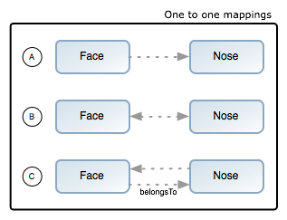
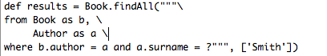

오늘날의 현재 자바 웹 개발은 필요 이상으로 너무 복잡하다. 요즘 자바진영에 있는 대부분의 웹 프레임워크들은 지나치게 복잡하고, DRY(Don't Repeat Yourself)의 원칙을 따르고 있지않다.
Rails, Django, TurboGear같은 동적 프레임워크는 웹 어플리케이션을 좀 더 현대적으로 생각해 볼 수 있게 해주었다. Grails는 이러한 개념위에 탄생했고 자바 플랫폼에서 웹 어플리케이션을 개발하는 일을 획기적으로 단순화시킨다. 하지만 Grails가 다른 프레임워크와의 차이점은 Spring이나 Hibernate같이 구현된 자바 기술을 활용하여 구현됐다는 점이다.
Grails는 풀스택 프레임워크다. 그리고 Grails의 핵심기술 및 Grails의 플러그인을 이용해서 웹 개발이라는 퍼즐을 풀려한다. 그 안에는 다음과 같은 것을 포함한다.
- Hibernate를 기반으로 만들어진 손쉽게 사용할 수 있는 ORM
- GSP(Groovy Server Pages)라 불리는 풍부한 뷰 기술
- Spring 에서 사용된 MVC모델의 컨트롤러 레이어.
- Groovy로 강력해진 Gant 를 이용한 명령줄 스크립트 환경
- 실행 중 로드를 기본으로 지원하는<sup>configured</sup> Jetty 컨테이너의 탑재
- Spring 컨테이너에의한 의존성 주입<sup>Dependency injection</sup>
- Spring의 MessageSource 개념에 기반한 국제화 지원(i18n)
- Spring의 트랜잭션 추상화 기능에 기반한 트랜잭션 서비스 레이어
이 모든 것을
Groovy 언어와 DSL(Domain Specific Languages)를 통해서 사용하기 쉽게 만들었다.
이 문서는 당신이 Grails를 시작하고, 또 Grails 프레임워크로 웹 어플리케이션을 만들 수 있도록 안내할 것이다.
Grails를 시작하고 작동시키기 위해서 처음해야 하는 일은 배포본을 설치하는 것이다. 천천히 다음 단계들을 따라하라.
- Grails의 바이너리 배포본을 다운 받고, 원하는 위치에 다운받은 zip파일의 압축을 푼다.
- zip파일의 압축을 푼곳으로 GRAILS_HOME이라는 환경변수를 설정한다.
- Unix/Linux 환경에서는 일반적으로 프로필 파일에
export GRAILS_HOME=/path/to/grails 와 같은 것을 추가시키는 방법을 사용한다.
- 윈도우 환경에서는 일반적으로 내
컴퓨터/속성/고급/환경변수 에서 설정한다.
- 이제 당신의
PATH 변수에 Grails의 bin 디렉토리를 설정해야한다.
- Unix/Linux 환경에서는
export PATH="$PATH:$GRAILS_HOME/bin"를 실행하는 것으로 설정할 수 있다.
- 윈도우즈 환경에서는 내 컴퓨터/속성/환경변수에 있는
Path 환경변수를 수정함으로써 설정 할 수 있다.
만약 Grails가 정상적으로 동작한다면 당신은 터미널 윈도우에서 grails를 타이핑하고서, 다음과 같은 결과물을 볼 수 있다.
Welcome to Grails 1.0 - http://grails.org/
Licensed under Apache Standard License 2.0
Grails home is set to: /Developer/grails-1.0
No script name specified. Use 'grails help' for more info
Grails 어플리케이션을 생성하려면 먼저 다음과 같은
grails 명령어의 사용법에 익숙해질 필요가 있다.
이제 create-app 명령어를 사용하여 어플리케이션을 생성할 수 있다.
tc.
grails create-app helloworld
이 명령어는 현재 디렉토리 위치에 프로젝트를 담고있는 새로운 디렉토리를 만들어 줄 것이다. 당신은 이제 터미널에서 이 디렉토리를 돌아다녀야 한다:
cd helloworld
전형적인 "hello world!" 예제 프로그램을 구현하기 위해서는
create-controller 명령어를 사용한다.
grails create-controller hello
이것은
grails-app/controllers 디렉토리 안에
HelloController.groovy 라는 새로운 컨트롤러를 생성할 것이다(더 많은 정보를 원한다면
컨트롤러 절을 보라.)
컨트롤러는 웹 요청들을 처리할 수 있다. 그리고 다음과 같이 구현하여 "hello world!"라는 메시지를 출력할 수 있다.
class HelloController { def world = {
render "Hello World!"
}
}다했다. 이제 또 다른 명령어인
run-app로 컨테이너를 실행시킨다.
grails run-app
이 명령어로 8080포트로 서버를 실행시키고나서
http://localhost:8080/helloworld 와 같은 URL로 해당 어플리케이션에 접속할 수 있다.
결과는 다음의 스크린샷과 같이 나올 것이다.

이 것은
web-app/index.gsp 로 렌더링된 Grails의 소개페이지이다. 이 페이지에는 컨트롤러들이 보여질 것이고 컨트롤러의 링크를 클릭하면 브라우저 윈도우에 "Hello World!"라고 출력되는 것을 보게 될 것이다.
IntelliJ IDEA
현재 굉장히 성숙하고, 풍부한 기능을 가진 Groovy&Grails IDE는
IntelliJ IDEA 7.0 과
JetGroovy 플러그인이다. Grails 개발팀은 커다란 프로젝트를 위해서 다른 IDE 환경을 넘어선 IDEA를 추천한다.
TextMate
Grails는 단순함에 초첨이 맞춰져 있기 때문에 단순한 텍스트 편집기를 사용하는 것도 가능하다. Mac의
TextMate 에는 우수한 Groovy/Grails 번들을 가졌다.
Texmate bundles SVN에서 이용할 수 있다.
Eclipse
Eclipse 위해서 여기에 또 문법 강조와 코드 완성등을 해주는
Groovy Eclipse Plugin 이 있다.
이 Groovy 이클립스 플러그인은 자주 변한다. 그 변화의 자세한 사항은 Grails 위키에서 알 수 있다.
Grails는 자동적으로 이클립스의
.project 파일과
classpath 파일을 만든다. 그리고 "Package Explorer"창에서 오른쪽 버튼을 클릭을 하여 "Import"를 선택한 후 "Existing projext into Workspace"에서 그레일즈 프로젝트가 있는 곳을 "Browse"하는 것으로 Grails 프로젝트를 추가시킬 수 있다.
그리고 "Finish"를 누른 다음에 나오는 "Ok"를 클릭하면 프로젝트는 설치된다.
또한 Grails는 적당한 이클립스 실행 설정을 자동으로 셋업한다. 이것은 이클립스의 "Run"메뉴를 통해서 접근이 가능하다.
Grails는 "설정보다 관례"를 사용한다. 이 것은 이름과 파일의 위치를 명시적으로 설정하는 하지 않고 Grails가 제공하는 디렉토리 구조에 익숙해져야 하는 것을 의미한다.
여기에 Grails의 상세 내역과 관련된 링크가 있다.
grails-app - 그루비 소스코드의 최상위 레벨의 디렉토리scripts - Gant 스크립트.src - 지원 소스 코드
groovy - 기타 Groovy 소스java - 기타 Java 소스
test - 단위/통합 테스트.
Grails 어플리케이션은
run-app 명령어를 사용해서 Jetty 서버에서 돌아갈 수 있다. Jetty서버는 기본적으로 8080포트를 사용한다.
server.port 인자를 이용해서 다른 포트를 사용할 수 있다.
grails -Dserver.port=8090 run-app
에 대한 더 많은 정보는 레퍼런스 가이드에서 얻을 수 있다.
Grails의
create-*형식의 명령어들은 t
est/integration 디렉토리에 통합 테스트들을 자동적으로 만든다. 물론
테스트 에 대한 장에서 설명하는 정보와 테스트 로직에 부합하도록 내용을 채우는 일은 당신의 몫이다. 하지만 만약 테스트를 실행하기를 원한다면 당신은 다음과 같이
test-app 명령어를 사용할 수 있다.
Grails는
test-app 명령어와 동일하게 동작하는 Ant의
build.xml 파일을 자동으로 만들어준다.
이것을 통해 CruiseControl같은 지속적 통합(continuous integration) 플랫폼을 유용하게 사용할 수 있다
Grails 어플리케이션은 WAR(Web Application Archieves) 파일로 설치할 수 있다.
war 명령어를 사용하여 만들 수 있다:
프로젝트 루트에 WAR파일이 생성될 것이다. 이제 각 컨테이너의 사용법에 따라 설치할 수 있다.
결코 Grails의 run-app 명령을 사용하여 실제로 서비스하지 말아라. Grails의 이 명령어는 서버 성능이나 확장성이 중요한 런타임에도 자동으로 reload 하도록 설정돼 있다.
Grails를 설치할때에는 컨테이너의 JVM에 충분히 메모리를 할당하고
-server 옵션을 사용해야 한다. 다음은 권장하는 VM 옵션들이다.
Grails는 다음과 같이 꽤 많은 컨테이너들을 지원한다.
- Tomcat 5.5
- Tomcat 6.0
- GlassFish v1 (Sun AS 9.0)
- GlassFish v2 (Sun AS 9.1)
- Sun App Server 8.2
- Websphere 6.1
- Websphere 5.1
- Resin 3.2
- Oracle AS
- JBoss 4.2
- Jetty 6.1
- Jetty 5
- Weblogic 7/8/9/10
몇몇 컨테이너들는 버그가 있지만 대부분의 경우에는 잘 동작한다.
설치에 관한 문제는 Grails 위키에서 찾을 수 있다.
Some containers have bugs however, which in most cases can be worked around. A
list of known deployment issues can be found on the Grails wiki.
Grails는
create-controller,
create-domain-class 등과 같은 편리한 명령어를 지원한다. 이 것들은 컨트롤러를 생성하거나 다른 타입의 아티펙트들을 만들어줄 것이다.
여기에 있는 것이 전부가 아니다. IDE나 익숙한 텍스트 편집기를 바로 사용하는 것도 쉽다.
예를 들어 다음과 같이 어플리케이션을 만들 때 기본적으로 필요한
도메인 모델을 만든다:
grails create-domain-class book
도메인 클래스가 grails-app/domain/Book.groovy 파일이 만들어진다. 그 내용은 다음과 같다:
Grails에는 많은
create-* 와 같은 명령어가 있다. 이 것들은 명령줄 레퍼런스 가이드에서 찾아볼 수 있다.
Grails를 시작할 때 어플리케이션의 뼈대를 만들어주는
스케폴드 라는 특징은 매우 유용하다.
generate-* 명령어들 중에서 하나를 사용하여 만들 수 있고
generate-all 을 사용하면 관계된
컨트롤러 와
뷰 가 생성될 것이다.
"설정보다 관례"를 지향하는 프레임워크에서 이런 주제를 다루는게 이상하게 보일 것이다. 하지만 설정할 것이 있긴 있기 때문에 이에 대해 짚고 넘어갈 필요가 있다.
실제로 Grails를 전혀 설정하지 않고서도 개발할 수 있다. Grails에는 내장 컨테이너와 HSQLDB라는 메모리 데이터베이스가 탑재돼 있어서 데이터베이스 설정조차 필요없다.
하지만 때가 되면 실제 데이터베이스를 사용하고 싶어질 것이고 그 방법은 이 장에서 설명한다.
일반적인 설정을 위해서 grails는
grails-app/conf/Config.groovy 라는 파일을 제공한다. 이 파일은 groovy의
ConfigSlurper 사용한다. ConfigSlurper는 순수 groovy로 만들어졌다는 것을 제외하고는 자바 프로퍼티 파일과 매우 유사하다. 따라서 적절한 자바 타입과 변수를 재사용 할 수 있다.
예를 들어, 다음과 같이 설정을 추가할 수 있다:
그리고 나서 어플리케이션에서 두 가지 방법으로 이 설정에 접근할 수 있다. 컨트롤러나 태그라이브러리에서 사용가능한
GrailsApplication 객체를 통해서 접근하는 것이 가장 일반적이다:
assert "world" == grailsApplication.config.foo.bar.hello
두번째 방법으로 설정 객체를 참조하고 있는
ConfigurationHolder 사용할 수도 있다:
import org.codehaus.groovy.grails.commons.*
…
def config = ConfigurationHolder.config
assert "world" == config.foo.bar.hello
Grails는 다음과 같은 설정 옵션을 제공한다.
- grails.config.locations - 프로퍼티 파일이나 추가할 Grails의 설정 파일의 위치를 나타낸다. 추가된 Grails의 설정 파일은 메인 설정파일과 통합돼야 한다.
- grails.enable.native2ascii - 만약 Grails의 i18n 프로퍼티 파일의 native2ascii 전환이 필요없다면 false로 세팅하라
- grails.views.default.codec - GSP를 위한 기본 인코딩을 지정한다. - 'none', 'html', 'base64'중에 하나로 설정할 수 있다. (기본은 'none'이다.) XSS 공격의 위험을 줄이려면 'html'로 바꿔라.
- grails.views.gsp.encoding - GSP 소스파일에서 사용되는 파일 인코딩 (기본적으로 'utf-8'로 되어있다)
- grails.war.destFile - war 명령어로 WAR 파일을 생성 할 장소를 지정한다.
- grails.mime.file.extensions - Content Negotiation의 마임 타입에서 사용할 파일 확장자를 지정한다.
- grails.mime.types - Grails에서 Content Negotiation에 사용할 MIME 타입을 맵 형식으로 지정한다.
grails.serverURL - 서버의 도메인 이름을 포함한 URL의 절대경로 서버 주소. 예, grails.serverURL="http://my.yourportal.com" . createLink 참조.
Logging Basics
Grails는
Log4j 로그 시스템에 기반한 공통의 '설정 매커니즘'을 사용한다.
grails-app/conf 디렉토리에 있는
Config.groovy를 수정하여 로깅을 설정하고
Config.groovy파일 하나로
development,
test,
production의 각 환경에 맞게 로깅 구성을 따로 정할 수 있다. Grails는
Config.groovy파일을 처리해서
web-app/WEB-INF/classes 디렉토리 안에 알맞은
log4j.properties 파일을 생성한다.
Grails의 일반적인 Log4j 설정은 다음과 같다:
log4j {
appender.stdout = "org.apache.log4j.ConsoleAppender"
appender.'stdout.layout'="org.apache.log4j.PatternLayout"
rootLogger="error,stdout"
logger {
grails="info,stdout"
org {
grails.spring="info,stdout"
codehaus.groovy.grails.web="info,stdout"
codehaus.groovy.grails.commons="info,stdout"
…
}
}
}표준 Log4j 프로퍼티 파일 스타일을 선호한다면 groovy 멀티라인 문자열을 사용할 수 있다:
log4j = '''
log4j.appender.stdout=org.apache.log4j.ConsoleAppender
log4j.appender.stdout.layout=org.apache.log4j.PatternLayout
# ...remaining configuration
'''
여기에 유용한 logger를 소개한다:
- org.codehaus.groovy.grails.commons - 클래스 로딩과 같은 중요한 정보
- org.codehaus.groovy.grails.web - Grails의 웹 요청 처리
- org.codehaus.groovy.grails.web.mapping - URL 매핑 디버깅
- org.codehaus.groovy.grails.plugins - 로그 플러그인의 행동
- org.springframework - Spring이 하는 일
- org.hibernate - Hibernate가 하는 일
Full stacktraces
예외가 발생 했을 때 자바와 Groovy 내부에서부터 스택을 트레이스하면 심한 노이즈가 있을 수 있다. Grails는 보통 관련이 없는 것들을 걸러내고 중요하지 않은 Grails/Groovy 클래스 패키지만을 Trace하도록 제한한다. Grails는 보통 그러한 관련이 없는 것들을 필터링 해주고, 핵심 Grails/Groovy 클래스 패키지가 아닌 것으로 Trace를 제한하고 있다.
예외가 발생하면, 전체 추적 내용은 항상 StackTrace 로거에 씌여진다. StackTrace는
stacktrace.log 파일에 기록하지만 Congfig.groovy파일을 이용해서 원하는 곳에 기록하도록 할 수 있다. 예를 들어 만약에 표준 출력으로 전체 추적 내용을 기록하고 싶다면 다음과 같은 설정을:
StackTrace="error,errors"
다음과 같이 바꾼다:
StackTrace="error,stdout"
grails.full.stacktrace VM 프로퍼티을
true로 설정을 해서 스택 트레이스 필터링을 끌 수 있다.
grails -Dgrails.full.stacktrace=true run-app
Logging by Convention
어플리케이션의 모든 아티펙트에는
log 프로퍼티을 동적으로 추가할 수 있다. 아티펙트는
도메인 클래스,
컨트롤러, 태그 라이브러리 등을 말한다. 이것의 사용법은 다음과 같다:
def foo = "bar"
log.debug "The value of foo is $foo"
로그의 이름은
grails.app.<아티펙트 타입>.ClassName 과 같은 관례에 따른다. 다음은 다양한 Grails 아티펙트에 로그를 설정하는 예이다:
# Set level for all application artefacts
log4j.logger.grails.app="info, stdout"# Set for a specific controller
log4j.logger.grails.app.controller.YourController="debug, stdout"# Set for a specific domain class
log4j.logger.grails.app.domain.Book="debug, stdout"# Set for a specific taglib
log4j.logger.grails.app.tagLib.FancyAjax="debug, stdout"# Set for all taglibs
log4j.logger.grails.app.tagLib="info, stdout"
아티펙트들의 이름은 관례에 따른다. 다음은 일반적인 아티펙트들의 목록이다.
- bootstrap - 부트스트랩 클래스들을 위한 아티펙트
- dataSource - data source들을 위한 아티펙트
- tagLib - 태그 라이브러리를 위한 아티펙트
- service - 서비스 클래스들을 위한 아티펙트
- controller - 컨트롤러들을 위한 아티펙트
- domain - 도메인 요소들을 위한 아티펙트
Per Environment Configuration (환경별 설정)
Grails는 환경마다 설정할 수 있다. grails-app/conf디렉토리에 있는 Config.groovy파일과, DataSource.groovy파일이 환경단위로 설정할 수 있도록 돕는다. 각 파일들은
ConfigSlurper 의 문법을 따른다. 다음은 Grails에서 제공하는 기본 DataSource의 정의를 예로 든 것이다.
dataSource {
pooled = false
driverClassName = "org.hsqldb.jdbcDriver"
username = "sa"
password = ""
}
environments {
development {
dataSource {
dbCreate = "create-drop" // one of 'create', 'createeate-drop','update'
url = "jdbc:hsqldb:mem:devDB"
}
}
test {
dataSource {
dbCreate = "update"
url = "jdbc:hsqldb:mem:testDb"
}
}
production {
dataSource {
dbCreate = "update"
url = "jdbc:hsqldb:file:prodDb;shutdown=true"
}
}
}최상위 수준에 정의한 설정을 기억해야 한다. environments 블럭에는 DataSource의 url 프로퍼티과 dbCreate를 위해 환경마다 블럭을 정의하였다. 이 문법은 Config.groovy에서도 사용된다.
Packaging and Running for Different Environments (다양한 환경을 위한 패키징과 실행)
Grails는 특정 환경단위로
명령을 실행할 수 있도록 지원한다. 그 형식은 다음과 같다:
grails [environment] [command name]
또한 Grails에는 dev, prod, test이라는 미리 만들어진 환경이 3개있다. dev, prod, test는 각각 개발(development), 서비스(production), 테스트(test)를 위한 것이다. 예를 들어 테스트 환경에서 WAR를 만들기 위해서는 명령어를 다음과 같이 사용해야 한다.
만약에 또 다른 환경을 가지고 있다면
grails.env 변수를 통해서 그 환경을 지정할 수 있다. 아래는 그 예이다:
grails -Dgrails.env=UAT run-app
Programmatic Environment Detection (프로그램에 의한 환경 검사)
GrailsUtil 클래스를 Gant 스크립트나 부트스트랩 클래스 같은 곳에 사용함으로써 환경을 찾아낼 수 있다:
import grails.util.GrailsUtil...switch(GrailsUtil.environment) {
case "development":
configureForDevelopment()
break
case "production":
configureForProduction()
break
}Grails는 자바로 만들어졌기 때문에 data source를 설정하려면 JDBC에 대한 약간의 지식이 필요하다(자바 데이터베이스 접속과는 관계없는 지식).
만약 HSQLDB외에 다른 DB를 사용하고 싶다면, 필수적으로 JDBC드라이버가 필요하다. MySQL을 예로 들자면
Connector/J 가 필요하다.
드라이버는 일반적으로 JAR 아카이브 형대로 배포된다. JAR파일을 프로젝트의 lib 디렉토리에 넣어라.
일단
grails-app/conf/DataSource.groovy 에 있는 DataSource descriptor파일에 JAR에 대한 정보가 있어야 한다. 그 파일은 다음과 같은 정보들은 DataSource에 대한 정의를 담고 있다.
- driverClassName - JDBC 드라이버의 클래스 이름
- username - JDBC 연결하는데에 사용될 사용자 이름
- password - JDBC 연결하는데에 사용될 비밀번호
- url - 데이터베이스의 JDBC URL
- dbCreate - 도메인 모델의 데이터베이스를 자동으로 생성할지 안할지 결정하는 플래그
- pooled - 컨넥션의 풀을 사용할것인가를 결정하는 플래그(기본은 true)
- logSql - SQL 로깅여부를 결정
- dialect - Hibernate의 표현식(dialect)으로 표현되는 문자열이나 클래스는 데이터베이스를 통해서 통신한다. Hibernate의 문법을 사용하려면, org.hibernate.dialectt 패키지를 참고하라.
MySQL에 대한 일반적인 설정은 아마도 다음과 같을 것이다.
dataSource {
pooled = true
dbCreate = "update"
url = "jdbc:mysql://localhost/yourDB"
driverClassName = "com.mysql.jdbc.Driver"
username = "yourUser"
password = "yourPassword"
}
DataSource를 설정할 때에는 타입이나 def 키워드를 사용하지 않는다. 왜냐하면 Groovy는 그러한 문법들을 지역변수를 정의한 것으로 보고 처리하지 않을 것이기 때문이다. 예를 들어 다음과 같은 경우는 잘못된 것이다.
dataSource {
boolean pooled = true // type declaration results in local variable
…
}이전의 구성 예는 모든 환경(서비스, 테스트, 개발등)이 같다고 가정하였다.
하지만, Grails는 DataSource를 "환경 별로(environment aware)" 정의할 수 있다다. 따라서 다음과 같이 할 수 있다.
dataSource {
// common settings here
}
environments {
production {
dataSource {
url = "jdbc:mysql://liveip.com/liveDb"
}
}
}많은 Java EE 컨테이너는 보통 JNDI(
Java Naming and Directory Interface )의 DataSource 인스턴스를 제공한다. 그래서 DataSource를 통해서 JNDI를 사용해야 할 때도 있다.
아래와 같이 JNDI data source를 정의할 수 있다.
dataSource {
jndiName = "java:comp/env/myDataSource"
}JNDI 이름의 형태는 컨테이너 마다 다를지도 모르지만, DataSource를 정의하는 방법은 똑같다.
DataSource를 정의할 때 dbCreate 프로퍼티은 중요하다. 그 이유는 Grails가 런타임에
GORM 클래스를 이용해 자동적으로 database 테이블를 생성하는 것을 결정하기 때문이다. 옵션들은 다음과 같다.
- create-drop - Grails를 실행할 때마다 데이터베이스를 삭제drop하고 다시 생성한다.
- create - 데이터베이스가 없으면 생성하고 이미 존재할 경우에는 아무일도 하지 않는다. 하지만 데이터는 삭제한다.
- update - 데이터베이스가 없으면 생성하고 이미 존재할 경우에는 변경한다.
create-drop과 create 둘 다 이미 있는 데이터를 파괴하므로 사용에 주의해야 한다.
개발 환경 에서의 dbCreate의 기본값은 “create-drop”이다.
dataSource {
dbCreate = "create-drop" // one of 'create', 'create-drop','update'
}이것은 어플리케이션을 재시작 할 때마다 자동으로 db 테이블을 삭제하고 다시 생성한다. 확실히 이것은 실제 서비스에는 필요없다.
비록 Grails가 지금은 Rails 스타일의 이전작업(Migrations)을 지원하고 있지 않지만, 현재 비슷한 기능의 플러그인이 두 개 있다. LiquiBase 플러그인과 DbMigrate 플러그인을 list-plugins 명령어로 사용할 수 있다.
기본 설정 파일인
grails-app/conf 에 있는
Config.groovy 는 주요 상황에서는 꽤 괜찮다. 하지만 메인 어플리케이션 구조
바깥에 구성 파일을 유지하고 싶을때가 있을 수 있다. 예를 들어, 어떤 관리자들은 WAR를 설치한 후에 설정을 변경하기 위하여 WAR을 다시 만들기 싫어서 어플리케이션의 설정을 외부로 빼고 싶어한다.
이렇게 설정하는 시나리오를 위해 설정을 어플리케이션 밖에 위치 시킬 수 있다.
Config.groovy 파일 안에
grails.config.locations 설정을 다음과 같이 사용하여 설정 파일의 위치를 Grails에 알린다:
grails.config.locations = [ "classpath:${appName}-config.properties",
"classpath:${appName}-config.groovy",
"file:${userHome}/.grails/${appName}-config.properties",
"file:${userHome}/.grails/${appName}-config.groovy"]이 예제는 클래스패스와 다른 경로인
USER_HOME 에 위치한 설정파일(Java 프로퍼티 파일과
ConfigSlurper 설정 모두)을 로드한다.
모든 설정은 결국
GrailsApplication 객체의
config 프로퍼티로 합쳐지기 때문에 이를 이용해 설정에 접근할 수 있다.
또 Grails는 Spring의 프로퍼티 플레이스홀더(placeholder)와 프로퍼티를 오버라이드하는 configurer 개념도 지원한다. 자세한 정보는 Grails와 Spring 에 대한 장에 있다.
Versioning Basics(버전 기초)
Grails에는 어플리케이션 버전을 관리하는 기능이 내장되어 있다.
create-app 를 이용해서 어플리케이션을 처음 만들었을 때의 버전은 0.1이 된다. 버전은 프로젝트의 루트에 있는
application.properties 라는 어플리케이션 메타 데이터에 저장이 된다.
어플리케이션의 버전을 바꾸기 위해서는, set-version명령어를 사용한다.
버전은 war 명령어뿐만 아니라 많은 명령어에서 사용된다.
war 명령어를 실행하면 생성되는 WAR파일의 끝에 어플리케이션의 버전을 덧붙혀진다.
Detecting Versions at Runtime(런타임에 버전 알아내기)
런타임에 어플리케이션의 버전을 알아낼 수 있다. Grails에서 제공하는
GrailsApplication 클래스를 통해 어플케이션의 메타데이터에 접근한다. 예를 들어
컨트롤러 에는 다음과 같이 사용할 수 있는
grailsApplication 변수가 이미 있다:
def version = grailsApplication.metadata['app.version']
만약 Grails의 버전을 알고 싶다면 다음과 같이 사용할 수 있다.
def grailsVersion = grailsApplication.metadata['app.grails.version']
또는
GrailsUtil 클래스를 사용할 수도 있다:
import grails.util.*
def grailsVersion = GrailsUtil.grailsVersion
빠른 설치
실제 서비스(production) 환경에서는 Grails 어플리케이션들이 언제나 WAR파일로 설치된다. Grails 어플리케이션을 절대로 run-app명령어를 사용해서 설치하면 안된다. 왜냐하면, 그 명령어는 개발하는 동안 Grails를 auto-reloading을 하도록 구성하기 때문이다.
하지만 run-war명령어를 이용해 다음과 같이 쉽고 빠르게 Grails 어플리케이션을 실행 할 수 있다.
80번 포트로 실행하도록 하는 방법이다.
grails -Dserver.port=80 prod run-war
그러면 WAR 파일이 생성되고 서비스production 환경의 WAR 파일은 Jetty를 이용해서 실행된다.
WAR 설치
이전에 WAR 설치에 대해 언급했었다. war 명령어는 WAR 파일을 만들기 위한 편의를 제공한다. WAR 파일은 다양한 Java EE 호환 컨테이너에 설치된다.
WAR 파일을 만들었다면 다음은 WAR 파일을 적당한 디렉토리에 넣어야 한다. 만악 컨테이너가 핫 디플로이먼트hot deployment를 지원한다면 자동으로 리로드될 것이고 그렇지 않으면 컨테이너를 재기동해야 할 것이다.
예를 들어 아파치 톰캣에서는 TOMCAT_HOME/webapps 디렉토리에 WAR를 놓고 컨테이너를 재시작하면 된다.
또 다른 컨테이너(특히 상업용)에서는 보통 웹 인터페이스를 제공한다. WAR파일을 웹 인터페이스로 실행중인 컨테이너에 올리고, 설치할 수 있다. 자세한 것은 해당 컨테이너에 대한 문서를 참조하고 설명대로 따라해야 한다.
WAR 파일 생성 수정하기
만약 WAR 생성과정을 변경해야 한다면 다양한 방법으로 변경할 수 있다. 만약 간단하게 WAR가 생성되는 장소를 변경하고 싶다면 다음과 같이 하면된다:
grails war /my/container/path
위 방법 대신에 Config.groovy파일의 grails.war.destFile 옵션을 설정해도 된다:
grails.war.destFile=/my/container/path
만약에 WAR 파일을 생성하는 동안 의존성들을 수정해야 한다면(예를들어 컨테이너가 공유 라이브러리를 지원한다면) 다음과 같이 특정한 Ant fileset을 grails.war.dependencies 옵션에 명시할 수 있다.
grails.war.dependencies = {
fileset(dir:"/my/libs", includes:"*.jar")
}좀 더 유연하게 grails.war.resources를 설정할 수 있다. 이 설정에 WAR 파일을 어디에 생성할지 명시할 수 있다.
grails.war.resources = { warLocation ->
copy(todir:"$warLocation/WEB-INF") {
fileset(dir:"/my/configs", includes:"*.xml")
}
}Grails의 명령어 시스템은
Gant에 내장되어 있다. Gant는 단순히
Apache Ant의 그루비 래퍼(wrapper)이다.
하지만 관례와 명령어을 사용하기 때문에 Grails가 더 낫다. 다음과 같이 타이핑 했을 때:
Grails 는 아래에 나오는 디렉토리에서 실행할 Gant 스크립트를 찾는다:
USER_HOME/.grails/scriptsPROJECT_HOME/scriptsPROJECT_HOME/plugins/*/scriptsGRAILS_HOME/scripts
또 Grails는 run-app와 같이 소문자로 되어있는 명령어 이름들을 소문자와 대문자가 섞여있는 형태로 변환할 것이다. 따라서 다음과 같이 치면
다음과 같은 파일들을 찾아낼 것이다:
USER_HOME/.grails/scripts/RunApp.groovyPROJECT_HOME/scripts/RunApp.groovyPROJECT_HOME/plugins/*/scripts/RunApp.groovyGRAILS_HOME/scripts/RunApp.groovy
만약 매치되는 것이 한 개가 아니라면 Grails는 실행할 것을 하나만 고른다. Gant 스크립트가 실행될 때 "default" 타겟이 실행된다.
몇몇 사용 가능한 명령어에 대한 도움말의 목록을 얻으려면 다음과 같이 치면 된다:
그러면 간단한 사용법과 Grails가 가지고 있는 명령어들이 출력된다:
Usage (optionals marked with *):
grails [environment]* [target] [arguments]*Examples:
grails dev run-app
grails create-app booksAvailable Targets (type grails help 'target-name' for more info):
grails bootstrap
grails bug-report
grails clean
grails compile
...
각각의 명령어들에 관해 더 자세히 알고 싶다면 레퍼런스 가이드의 왼쪽 메뉴에 있는 명령어 레퍼런스를 참조하라.
현재 프로젝트의 루트에서
create-script 명령어를 사용하여 Gant 스크립트를 만들 수 있다. 그 예로 다음과 같이 명령을 내리면
grails create-script compile-sources
script/CompileSources.groovy 라는 스크립트가 만들어질 것이다. Gant 스크립트는 “타겟” 이라는 개념을 지원하고 그것에 의존한다는 것만 제외하면 Groovy 스크립트와 유사하다:
target(default:"The default target is the one that gets executed by Grails") {
depends(clean, compile)
}
target(clean:"Clean out things") {
Ant.delete(dir:"output")
}
target(compile:"Compile some sources") {
Ant.mkdir(dir:"mkdir")
Ant.javac(srcdir:"src/java", destdir:"output")
}위의 스크립트에서 보여준 예처럼 Gant 스크립트에는 암묵적으로
Apache Ant API 에 접근 할 수 있는 Ant의 변수가 사용된다.
You can also "depend" on other targets using the
depends method demonstrated in the
default target above.
Grails에는 재사용하기 매우 좋은 명령어들이 내장돼 있다. 가장 유용한 것들은
compile,
package,
bootstrap 스크립트이다. 모든 명령어에 대한 정보는 레퍼런스 가이드를 참고하라.
bootstrap 스크립트는 스프링의
ApplicationContext 인스턴스를 통해서 데이터 소스등에 접근할 수 있게 해준다:
Ant.property(environment:"env")
grailsHome = Ant.antProject.properties."env.GRAILS_HOME"includeTargets << new File ( "${grailsHome}/scripts/Bootstrap.groovy" )
target ('default': "Load the Grails interactive shell") {
depends( configureProxy, packageApp, classpath, loadApp, configureApp ) Connection c
try {
// do something with connection
c = appCtx.getBean('dataSource').getConnection()
}
finally {
c?.close()
}
}Grails는 스크립트 이벤트를 가로채는 방법을 제공한다. Grails의 타겟과 플러그인 스크립트가 실행되는 동안 이벤트가 발생한다.
이 매커니즘은 꽤 단순하고 유연하게loosely 기술된다. 가로챌 이벤트의 목록은 정해진 것이 아니다. 중요한 타겟target 스크립트에는 동일한 이벤트가 없기 때문에 플러그인 스트립트가 발생시킨 이벤트들을 가로챌 수 있다.
Defining event handlers(이벤트 핸들러 정의하기)
이벤트 핸들러는 플러그인의 scripts/ 폴더나 USER_HOME 디렉토리의 .grails/scripts/ 폴더에 있는 Events.groovy라는 스크립트에 정의한다. 모든 이벤트 스크립트는 이벤트가 발생할 때마다 호출된다. 그래서 이벤트를 처리하는 플러그인을 10개를 만들 수도 있고 사용자마다 다르게 할 수도 있다.
eventCreatedArtefact = { type, name ->
println "Created $type $name"
}eventStatusUpdate = { msg ->
println msg
}eventStatusFinal = { msg ->
println msg
}You can see here the three handlers
eventCreatedArtefact,
eventStatusUpdate,
eventStatusFinal. Grails provides some standard events, which are documented in the command line reference guide. For example the
compile command fires the following events:
CompileStart - Called when compilation starts, passing the kind of compile - source or testsCompileEnd - Called when compilation is finished, passing the kind of compile - source or tests
Triggering events
To trigger an event simply include the Init.groovy script and call the event() closure:
Ant.property(environment:"env")
grailsHome = Ant.antProject.properties."env.GRAILS_HOME"
includeTargets << new File ( "${grailsHome}/scripts/Init.groovy" )
event("StatusFinal", ["Super duper plugin action complete!"])Common Events
Below is a table of some of the common events that can be leveraged:
| Event | Parameters | Description |
|---|
| StatusUpdate | message | Passed a string indicating current script status/progress |
| StatusError | message | Passed a string indicating an error message from the current script |
| StatusFinal | message | Passed a string indicating the final script status message, i.e. when completing a target, even if the target does not exit the scripting environment |
| CreatedArtefact | artefactType,artefactName | Called when a create-xxxx script has completed and created an artefact |
| CreatedFile | fileName | Called whenever a project source filed is created, not including files constantly managed by Grails |
| Exiting | returnCode | Called when the scripting environment is about to exit cleanly |
| PluginInstalled | pluginName | Called after a plugin has been installed |
| CompileStart | kind | Called when compilation starts, passing the kind of compile - source or tests |
| CompileEnd | kind | Called when compilation is finished, passing the kind of compile - source or tests |
| DocStart | kind | Called when documentation generation is about to start - javadoc or groovydoc |
| DocEnd | kind | Called when documentation generation has ended - javadoc or groovydoc |
| SetClasspath | rootLoader | Called during classpath initialization so plugins can augment the classpath with rootLoader.addURL(...). Note that this augments the classpath after event scripts are loaded so you cannot use this to load a class that your event script needs to import, although you can do this if you load the class by name. |
| PackagingEnd | none | Called at the end of packaging (which is called prior to the Jetty server being started and after web.xml is generated) |
| ConfigureJetty | Jetty Server object | Called after initial configuration of the Jetty web server. |
Ant Integration
create-app 명령어로 Grails 어플리케이션을 만들때 Grails는 자동으로
create-app 의
build.xml 파일을 생성한다. 여기에는 다음과 같은 타겟들이 포함돼 있다.
- clean - Grails 어플리케이션을 청소한다.
- war - WAR 파일을 만든다
- test - 유닛 테스트를 실행한다.
- deploy - 기본적으로 아무일도 하지 않지만 자동 설치deployment를 구현할 수 있다.
이 타겟들은 Ant에 의해 실행된다:
build.xml은 Grails의 일반적인 명령어들을 실행하고
CruiseControl 이나
Hudson 같은 CI(continuous integration) 서버와 통합하는데 사용될 수 있다.
Maven Integration
Grails는 공식적으로
Maven 을 지원하지 않는다. 하지만 Grails를 위한
Maven Tools for Grails 라는 프로젝트가 있다. 이 도구는 이 기존의 Grails 프로젝트를 위한 POM을 만들어줄 뿐만아니라 Maven 라이프사이클lifecycle을 Grails에서 사용할 수 있게 해준다.
Grails를 위한
Maven Tools for Grails 에 대한 자세한 정보는 프로젝트 사이트를 참고하라.
도메인 클래스는 모든 비지니스 어플리케이션에서 핵심이다. 도메인 클래스에는 비지니스 프로세스의 상태를 유지시키고 행동을 구현한다. 도메인 클래스는 서로 일대일 혹은 일대다 관계를 이룬다.
GORM은 Grails에서 사용하는 객체 관계형 매핑 구현체이다. 내부적으로 Hibernate 3(아주 인기있고 유연한 오픈소스 ORM)를 이용하지만 Groovy의 동적인 성질과 관례 때문에 Grails의 도메인 클래스를 생성하는 것까지 포함하더라도 설정할게 별로 없다. 실제로 Grails는 정적 타이핑과 동적 타이핑을 모두 지원한다.
Grails 도메인 클래스는 자바로도 작성할 수 있다. Hibernate와 통합하는 장을 보면 자바로 Grails의 도메인 클래스를 작성하는 법을 확인할 수 있다. 그러나 여전히 동적인 영속성 메소드를 사용한다. 다음은 GORM을 활용하는 예이다:
def book = Book.findByTitle("Groovy in Action")book
.addToAuthors(name:"Dierk Koenig")
.addToAuthors(name:"Guillaume LaForge")
.save() 명령으로 도메인 클래스를 만든다:
grails create-domain-class Person
도메인 클래스는
grails-app/domain/Person.groovy 에 생성되며 그 내용은 다음과 같다:
DataSource에 dbCreate 프로퍼티가 “update”, “create”, “create-drop”중에 하나로 설정하면 Grails는 자동으로 데이터베이스 테이블을 생성하거나 수정한다.
다음과 같이 클래스에 몇 개의 프로퍼티를 추가한다:
class Person {
String name
Integer age
Date lastVisit
}도메인 클래스를 만들고
shell이나
console에서 관리할 수 있다:
이제 Groovy 명령을 입력할 수 있는 GUI 프로그램이 실행된다.
기본적인 CRUD(Create/Read/Update/Delete) 명령을 사용해 보자.
Create
Groovy의 new 연산자를 사용하여 도메인 클래스를 생성하고 프로퍼티 값을 입력하고
save 메소드를를 호출한다:
def p = new Person(name:"Fred", age:40, lastVisit:new Date())
p.save()
메소드는 Hibernate을 이용하여 도메인 클래스를 영속화한다.
Read
Grails는 내부적으로 도메인 클래스에
id 프로퍼티를 추가한다.
def p = Person.get(1)
assert 1 == p.id
이 예에서는
get 메소드를 이용하여 데이터베이스에서 Person 객체를 읽는다.
Update
특정 인스턴스의 정보를 업데이트하기 위해서 필요한 프로퍼티들을 변경하고 단순하게 다시
save 메소드를 호출하면 된다:
def p = Person.get(1)
p.name = "Bob"
p.save()
Delete
delete 메소드로 인스턴스를 삭제한다:
def p = Person.get(1)
p.delete()
Grails 어플리케이션을 만들려면 해결할 문제의 도메인을 알아야 한다.
Amazon 서점을 만들고 싶다면 책, 저자, 고객, 출판사들을 고려하게 될 것이다.
여기에서는 제목, 출판일, ISBN등의 정보를 가지는 Book 클래스를 GORM으로 모델링 할 것이다. 계속해서 GORM으로 도메인을 모델링하는 법을 보여줄 것이다.
create-domain-class 명령으로 도메인 클래스를 생성할 수 있다:
grails create-domain-class Book
이 명령을 실행하면
grails-app/domain/Book.groovy 파일이 다음과 같은 내용으로 생성된다:
패키지를 사용하려면 도메인 클래스의 위치를 도메인 디렉토리 밑의 하위 디렉토리로 옮기고 Groovy 패키지 규칙(Java와 동일하다)에 따라 패키지를 정의하면 된다.
위 클래스는 자동적으로 클래스 이름과 동일한 데이터베이스의 book 테이블과 매핑된다. 이 규칙은
ORM Domain Specific Language 도메인 명세 언어(ORM Domain Specific Language)로 수정할 수 있다.
이제 도메인 클래스를 만들었고 Java 데이터 형식을 이용하여 프로퍼티를 정의해보자. 다음의 예를 보면:
class Book {
String title
Date releaseDate
String ISBN
}각 프로퍼티는 데이터베이스의 컬럼으로 매핑되고 그 컬럼 이름은 '_'로 구분되는 소문자로 만들어진다. 예를 들어 releaseDate는 release_date의 컬럼이름으로 매핑된다. SQL 데이터 형식은 Java 데이터 형식에 따라 자동으로 매핑된다. 그리고
ORM DSL 이나 제약조건(
Constraints)을 이용하여 매핑 규칙을 수정할 수 있다.
관계(Relationships)는 도메인 클래스들이 상호 동작하는 방식을 의미한다. 양쪽 클래스에 정확하게 정의하지 않으면 관계는 정의된 쪽에서만 적용된다.
일대일 관계은 가장 단순형태다. 이 관계는 다른 도메인 클래스의 형식으로 프로퍼티를 정의하는 것만으로 쉽게 정의할 수 있다. 다음의 예를 보자:
Example A
class Face {
Nose nose
}
class Nose {
}Face에서 Nose로의 단뱡향 일대일 관계를 만들었다. 이제 양뱡향 관계를 만들어보자:
Example B
class Face {
Nose nose
}
class Nose {
Face face
}이제 양뱡향 관계를 만들었다. 하지만 아직 두 클래스 모두 연쇄적으로 업데이트되지 않는다.
연쇄적으로 업데이트 되게하면 다음과 같다:
Example C
class Face {
Nose nose
}
class Nose {
static belongsTo = [face:Face]
}belongsTo를 이용하여 Nose를 Face에 종속시켰다. 이제 Face를 생성하고 저장하면
연쇄적으로 Nose도 추가되고 변경된다:
new Face(nose:new Nose()).save()
The example above will save both face and nose. Note that the inverse
is not true and will result in an error due to a transient
Face:
위 예제는 Face와 Nose가 모두 잘 저장되지만 Face가 비영속 객체(transient object)므로 역순으로 생성하면 저장이
안되고 오류가 발생할 것이다.
new Nose(face:new Face()).save() // will cause an error
그리고 Nose는 Face에 종속되어 있기 때문에 Face를 삭제하면 Nose 역시 삭제된다.
def f = Face.get(1)
f.delete() // both Face and Nose deleted
belongsTo를 명시하지 않았다면 연쇄적으로 삭제되지 않는다. Nose를 명시적으로 삭제하지 않은 상태에서 Face를 삭제하면 외래키 제약조건(foreign key constraint) 에러가 발생한다:
// error here without belongsTo
def f = Face.get(1)
f.delete()// no error as we explicitly delete both
def f = Face.get(1)
f.nose.delete()
f.delete()
다음과 같이 작성하면 이 관계를 단방향으로 만들 수도 있다. 그리고 연쇄적으로 저장, 업데이트 시킬 수 있다.
class Face {
Nose nose
}
class Nose {
static belongsTo = Face
}이 예제에서 belongsTo를 선언할 때 map 문법을 사용하지 않았고 관계(association)라고 부르지도 않았다는 점을 주목하자. Grails는 단방향으로 해석한다. 3가지 예제를 모두 요약하면 아래의 다이어그램과 같다.

일대다 관계는 하나의 클래스가 많은 다른 클래스의 인스턴스를 가지고 있는 것이다.
Author 와
Book 의 관계가 그렇다. hasMany를 이용하여 이런 관계를 정의한다.
class Author {
static hasMany = [ books : Book ] String name
}
class Book {
String title
}우리는 단방향 1-n 관계를 만들었다. Grails는 기본적으로 Join 테이블로 이런한 관계를 매핑한다.
ORM DSL 은 외래키 관계을 사용하여 단방향 관계를 가능하게 한다.
Grails는 자동으로 도메인 클래스의
hasMany 가 명시된 프로퍼티들을
java.util.Set 형식으로 만든다. 따라서 컬렉션(collection)의 이터레이션(iteration)을 사용할 수 있다.
def a = Author.get(1)a.books.each {
println it.title
}
Grails에서 사용하는 기본 패치(fetch) 전략은 필요할 때(lazily) 패치하는 "lazy" 전략이다. n+1 문제가 발생하지 않도록 조심해야 한다."eager" 패치 전략을 취하도록 query의 일부로서 ORM DSL 에 명시 할 수도 있다.
연쇄적으로 저장, 갱신하는 것이 기본적인 연쇄 방식이고 belongsTo가 명시되어 있지 않으면 연쇄적으로 삭제되지도 않는다.
class Author {
static hasMany = [ books : Book ] String name
}
class Book {
static belongsTo = [author:Author]
String title
}일대다 관계에서 '다'쪽의 도메인 클래스에 '일'쪽의 형식으로 정의된 프로퍼티가 두 개 이상 있다면 mappedBy를 사용하여 어떤 컬렉션에 매핑돼야 하는지 명시해야 한다.
class Airport {
static hasMany = [flights:Flight]
static mappedBy = [flights:"departureAirport"]
}
class Flight {
Airport departureAirport
Airport destinationAirport
}또, 컬렉션을 어러개 만들어 '다'쪽의 도메인 클래스의 다른 프로퍼티로 매핑시키는 것도 가능하다.
class Airport {
static hasMany = [outboundFlights:Flight, inboundFlights:Flight]
static mappedBy = [outboundFlights:"departureAirport", inboundFlights:"destinationAirport"]
}
class Flight {
Airport departureAirport
Airport destinationAirport
}Grails는 다대다 관계를 지원한다. 양쪽 클래스에 hasMany를 정의하고 관계를 소유하는 쪽에 belongsTo를 사용하면 다대다 관계가 만들어진다.
class Book {
static belongsTo = Author
static hasMany = [authors:Author]
String title
}
class Author {
static hasMany = [books:Book]
String name
}Grails는 데이터베이스의 테이블 조인을 사용하여 다대다 관계를 구현한다. 관계를 소유하는 쪽에 관계를 영속화할 책임이 있다. 오직 한쪽에서만 연쇄적으로 저장할 수 있다. 이 경우에는 Author 클래스에 책임이 있다.
다음의 예는 올바르게 작동하고 연쇄적으로 저장된다:
new Author(name:"Stephen King")
.addToBooks(new Book(title:"The Stand"))
.addToBooks(new Book(title:"The Shining"))
.save()
하지만 아래의 예는 Book만 저장되고 Author들은 저장되지 않는다.
new Book(name:"Groovy in Action")
.addToAuthors(new Author(name:"Dierk Koenig"))
.addToAuthors(new Author(name:"Guillaume Laforge"))
.save()
다대다 관계에서는 오직 한 쪽에서만 관계를 관리할 수 있는데 이것은 Hibernate에서도 마찬가지다.
Grails의 Scaffolding 기능은 현재 다대다 관계를 지원하지 않는다. 따라서 관계를 관리하는 코드를 직접 작성해야 한다.
association 외에도 Grails는 결합(Composition)도 지원한다. 클래스를 각각의 테이블에 매핑하지 않고 하나의 테이블에 "포함하여" 매핑할 수 있다.
class Person {
Address homeAddress
Address workAddress
static embedded = ['homeAddress', 'workAddress']
}
class Address {
String number
String code
}다음과 같이 테이블이 매핑된다.

grails-app/domain 디렉토리에 새로운 Groovy 파일을 만들고 그 파일에 Address 클래스를 만들면 address 테이블이 생성된다. 이 것을 원하지 않으면 grails-app/domain/Person.groovy 파일의 Person 클래스 아래에 Address 클래스를 만든다. Groovy에서는 한 파일에 여러개의 클래스를 정의할 수 있다.
GORM 에서는 추상 부모 클래스와 영속 GORM 엔터티에서 상속받을 수 있다. 예를 들면:
class Content {
String author
}
class BlogEntry extends Content {
URL url
}
class Book extends Content {
String ISBN
}
class PodCast extends Content {
byte[] audioStream
}이 예에서 우리는 부모 클래스인
Content 와 다른 특징을 가진 자식 클래스들을 만들었다.
Considerations(고려 사항)
Grails는 기본적으로 상속 구조당 하나의 테이블(table-per-hierarchy)에 매핑한다. 부모 클래스와 그 자식 클래스들은(
BlogEntry,
Book, 등등)
동일한 테이블을 사용하고 식별 칼럼을 두어 구분한다.
상속 구조당 하나의 테이블(table-per-hierarchy)에 매핑하는 것은 'not null'인 프로퍼티를 가질 수 없다는 단점이 있다. 다른 방법으로
ORM DSL을 이용하여 클래스당 하나의 테이블(table-per-subclass)에 매핑하는 전략을 사용하는 것이다.
그러나 클래스당 하나의 테이블(table-per-subclass)에 매핑하는 전략을 과도하게 사용하면 조인 쿼리가 남발되기 때문에 쿼리 성능이 형편없어 진다. 우리는 상속을 남용하지말고 상속 계층를 너무 깊게 가져가지 말라고 권고한다.
Polymorphic Queries(쿼리의 다형성)
상속은 다형적으로(polymorphically) 질의할 수 있게 해준다. 예를 들어
Content 부모 클래스에서
list 메소드를 사용하면 모든 자식 클래스들이 반환된다:
def content = Content.list() // 블로그 글, 책, 팟 캐스트 모두 나열된다.
content = Content.findAllByAuthor('Joe Bloggs') // 저자를 기준으로 찾는다.def podCasts = PodCast.list() //팟 캐스트만 나열된다.Sets of objects(집합)
관계를 만들면 GORM은 기본적으로
java.util.Set을 이용한다. 이 것은 정렬되지 않으며 중복을 허용하지 않는 컬렉션이다. 다음의 Author 클래스가 있다면
class Author {
static hasMany = [books:Book]
}GORM은 이 books 프로퍼티를
java.util.Set형식으로 만든다. 컬렉션을 사용할 때 정렬되지 않았다는 것이 문제가 될 수 있다. 정렬된 컬렉션을 사용하길 원한다면 다음처럼 books를
SortedSet으로 명시한다.
class Author {
SortedSet books
static hasMany = [books:Book]
}java.util.SortedSet을 사용하는 경우에는 Book 클래스에
java.lang.Comparable을 구현해야 한다.
class Book implements Comparable {
String title
Date releaseDate = new Date() int compareTo(obj) {
releaseDate.compareTo(obj.releaseDate)
}
}이 예제대로 라면 Author 클래스의 books 프로퍼티에 Book 객체들이 있게된다. Book 객체들은 releaseDate를 기준으로 정렬될 것이다.
Lists of objects(리스트)
단순하게 집합을 객체가 추가된 순서로 유지하고 배열처럼 인덱스로 객체를 참조하게 하고 싶을 땐
List를 사용하면 된다:
class Author {
List books
static hasMany = [books:Book]
}books 컬렉션의 순서는 객체를 추가한 순서대로 유지된다. 0부터 시작하는 인덱스를 이용하여 다음과 같이 사용할 수 있다:
author.books[0] // 첫 번째 책
데이터베이스 수준에서 일어나는 일을 살펴보면 Hibernate는 books_idx 컬럼을 생성한다. 데이터베이스에서도 순서를 지키기위해서
book_idx에 컬렉션 요소(element)의 인덱스를 저장한다.
List를 사용할 때 요소를 저장하기 전에 컬렉션에 추가해야 한다. 그렇지 않으면 Hibernate는 예외를 던질 것이다(
org.hibernate.HibernateException: null index column for collection):
// This won't work!
def book = new Book(title: 'The Shining')
book.save()
author.addToBooks(book)// Do it this way instead.
def book = new Book(title: 'Misery')
author.addToBooks(book)
author.save()
Maps of Objects(맵)
만약 string/value 쌍만으로 이루어진 단순한 맵을 원하면 다음처럼 사용하면 된다:
class Author {
Map books // map of ISBN:book names
}def a = new Author()
a.books = ["1590597583":"Grails Book"]
a.save()맵의 키와 값은 모두
반드시 문자열이어야 한다.
객체의 맵을 원한다면 다음처럼 한다.
class Book {
Map authors
static hasMany = [authors:Author]
}def a = new Author(name:"Stephen King")def book = new Book()
book.authors = [stephen:a]
book.save()static
hasMany 프로퍼티로 맵의 요소의 형식을 정의할 수 있다. 이 맵의 키는
반드시 문자열이어야 한다.
Grails에서 잊지 말아야 할 것이 있는데 Grails는 내부적으로
Hibernate 을 사용하여 영속성을 구현했다.
ActiveRecord 나
iBatis 를 사용한적이 있다면 Hibernate의 "세션 모델"이 조금 어색할 수 있다.
Grails는 자동으로 현재 실행하는 요청을 Hibernate 세션에 바인드(bind)시킨다. 이 것은 우리가
save,
delete 등의 GORM 메소드를 투명하게 사용할 수 있게 해준다.
다음은
save 메소드를 사용하는 예이다.
def p = Person.get(1)
p.save()
Hibernate와 가장 큰 차이점은
save 메소드를 호출할 때 어떠한 SQL도 실행할 필요가 없다는 것이다. 보통 Hibernate는 SQL 문을 모았다가 끝날때 일괄 처리한다. Grails는 Hibernate Session을 관리해서 자동으로 이 일을 해낸다.
그러나 SQL 문이 언제 실행돼야 하는지를 결정하고 싶을 때도 있다. Hibernate에서는 이 것을 세션을 "flush" 했다라고 한다. 이렇게 하기 위해서 다음처럼 save 메소드를 호출할 때 flush를 인자로 넘길 수 있다.
def p = Person.get(1)
p.save(flush:true)
이전의 save를 포함하여 지연된 모든 SQL 문장들이 DB와 동기화될 것이다. 이 때 예외를 처리할 수 있다. 이 예외처리는 일반적으로 낙관적 잠금(
optimistic locking)을 포함하는 고도의 동시적concurrent 시나리오에 유용하다.
def p = Person.get(1)
try {
p.save(flush:true)
}
catch(Exception e) {
// deal with exception
}다음은
delete 메소드를 사용하는 예이다.
def p = Person.get(1)
p.delete()
메소드에도 flush 인자를 이용하여 flush시킬 수 있다.
def p = Person.get(1)
p.delete(flush:true)
데이터를 삭제하는 것은 조심해야 하기 때문에 Grails도
deleteAll 메소드를 제공하지 않는다. 이진 flags/logic을 이용해서 데이터를 삭제할 수 있다.
정말 일괄 삭제해야 한다면
executeUpdate 메소드를 이용하여 DML 문을 실행시켜서 삭제할 수 있다.
Customer.executeUpdate("delete Customer c where c.name = :oldName", [oldName:"Fred"])GORM을 사용할 때 연쇄(Cascade) 갱신과 삭제가 어떻게 동작하는 지를 이해하는 것은 중요하다. 클래스가 관계를 "소유"하는 것을 제어하는
belongsTo 설정이 우리가 기억해야 할 핵심이다.
일대일, 일대다, 다대다 관계에 상관없이
belongsTo를 정의했다면 갱신과 삭제는 소유한 클래스에서 그 소유물(관계의 다른 쪽)까지 연쇄적으로 동작할 것이다.
_belongsTo를 정의하지 않으면_ 연쇄 작업은 일어나지 않으며 모든 객체를 일일이 손수 저장해야 한다.
여기에 한 예가 있다.
class Airport {
String name
static hasMany = [flights:Flight]
}
class Flight {
String number
static belongsTo = [airport:Airport]
}Airport를 생성하고
Flight를 몇 개 추가한 후
Airport를 저장하면
Flight도 연쇄적으로 저장된다. 결국 생성한 모든 객체가 저장된다.
new Airport(name:"Gatwick")
.addToFlights(new Flight(number:"BA3430"))
.addToFlights(new Flight(number:"EZ0938"))
.save()
반대로
Airport를 삭제하면 관련된 모든
Flight도 삭제될 것이다.
def airport = Airport.findByName("Gatwick")
airport.delete()그러나
belongsTo를 제거하면 위의 코드는 더 이상 연쇄적으로 삭제하지 않는다.
ORM DSL을 사용하여 연쇄 행동을 제어할 수 있다.
GORM은 기본적으로 Lazy 패칭을 사용한다. 다음 예가 이를 잘 설명한다.
class Airport {
String name
static hasMany = [flights:Flight]
}
class Flight {
String number
static belongsTo = [airport:Airport]
}위의 도메인 클래스로 다음과 같이 코드를 작성한다.
def airport = Airport.findByName("Gatwick")
airport.flights.each {
println it.name
}GORM은
Airport 인스턴스를 가져오기 위해 단 하나의 SQL을 실행하고
Flight마다 추가로 1개의 쿼리를 더 실행할 것이다. 결국에 N+1번 질의한다.
관계(association)에 드물게 접근하는 경우에는 이 방법이 최적일 것이다. 전적으로 관계(association)의 사용빈도에 달려있다.
다음과 같이 Eager 패칭을 사용하는 것으로 Lazy 패칭의 단점을 해결할 수 있다.
class Airport {
String name
static hasMany = [flights:Flight]
static fetchMode = [flights:"eager"]
}Airport 인스턴스와
Flight 관계는 매핑 규칙에 따라 한번에 전부 로드될 것이다. 데이터베이스에 질의하는 빈도가 줄어드는 장점이 있지만 Eager Association이 너무 많으면 데이터베이스 전체를 메모리로 로드하게 될 수도 있으니 주의해야 한다.
ORM DSL을 이용하여 Lazy 패치없이 관계를 정의할 수 있다.
Optimistic Locking(낙관적 잠금)
기본적으로 GORM 클래스는 낙관적 잠금을 사용하도록 돼 있다. 낙관적 잠금은 Hibernate의 것을 이용하므로 데이터베이스의
version 컬럼에 버전을 저장한다.
version 프로퍼티를 통해서 이 버전 컬럼을 읽을 수 있다. 사용하고 있는 영속성 인스턴스의 버전을 읽는다.
def airport = Airport.get(10)println airport.version
도메인 클래스에 대해서 업데이트를 실행하면 Hiberate는 자동으로 version 프로퍼티과 데이터베이스의 version 컬럼을 검사한다. 만약 서로 다르면
StaleObjectException을 던지고 트랜잭션을 롤백한다.
이 것은 성능 문제를 야기하는 비관적 잠금을 사용하지도 않고서도 원자성을 확실하게 보장하기 때문에 유용하다. 단, 동시 쓰기가 많이 발생한다면 이 예외를 직접 처리해야 한다.
def airport = Airport.get(10)try {
airport.name = "Heathrow"
airport.save(flush:true)
}
catch(org.springframework.dao.OptimisticLockingFailureException e) {
// deal with exception
}어플리케이션에 따라 예외를 처리하는 방법이 달라질 수 있다. 전적으로 사용자에게 떠넘길 수도 있고 프로그램으로 데이터를 자동으로 병합해줄 수도 있고 충돌을 해결하도록 사용자에게 요청할 수 있다.
이 방법이 싫다면 비관적 잠금을 사용하면 된다.
Pessimistic Locking(비관적 잠금)
비관적 잠금은 "SELECT * FOR UPDATE" 라는 SQL 문을 실행하는 것과 동일하게 데이터베이스의 특정 열을 잠근다. 잠긴 것이 해제될 때까지 다른 읽기가 블럭된다.
lock 메소드를 이용하여 비관적 잠금을 사용할 수 있다.
def airport = Airport.get(10)
airport.lock() // lock for update
airport.name = "Heathrow"
airport.save()
트랜잭션이 커밋되면 Grails는 잠금을 자동으로 해제한다.
GORM은 동적 파인더(dynamic finder)라는 강력한 질의 방법을 제공한다. 이 것은 Hibernate의 객체지향 쿼리 언어인 HQL에 버금같다.
GPath 와 sort, findAll 같은 메소드들로 컬렉션을 관리할 수 있는 Groovy와 GORM의 결합은 강력한 조합을 만들어 낸다.
그러나. 언제나 천리길도 한 걸음부터.
Listing instances(리스트)
단순하게
list 메소드를 사용하여 클래스의 모든 인스턴스를 조회할 수 있다:
페이지정보(pagination)를
list 메소드의 인자로 넘길 수 있다:
def books = Book.list(offset:10, max:20)
정렬도 가능하다.
def books = Book.list(sort:"title", order:"asc")
sort 인자로 정열할 때 기준이되는 도메인 클래스의 프로퍼티를 명시하고 order 인자에는 오름 정렬일 때
asc를, 내림 정렬일 때에는
desc를 사용한다
Retrieval by Database Identifier(데이터베이스 식별자로 조회)
get 메소드에 데이터베이스 식별자를 인자로 넘겨서 조회할 수 있다.
식별자들의 집합을
getAll 메소드의 인자로 넘겨서 인스턴스의 목록을 조회할 수 있다.
def books = Book.getAll(23, 93, 81)
GORM은
동적 파인더 개념을 지원한다. 동적 파인더는 정적 메소드를 실행하는 것과 비슷하다. 그렇지만 동적 파인더를 지원하기 위해 특별한 메소드가 존재하는 것은 아니다.
메소드를 사용하는 것이 아니다. 클래스의 프로퍼티를 기반으로 런타임에 코드를 합성하여 마술처럼 자동으로 생성한다. 다음 Book 클래스의 예를 보자.
class Book {
String title
Date releaseDate
Author author
}
class Author {
String name
}Book 클래스는 title, releaseDate, author같은 프로퍼티를 가지고 있다. 이 프로퍼티들은 '메소드 표현식(method expressions)'에 따라
findBy findAllBy 메소드에서 사용된다.
def book = Book.findByTitle("The Stand")book = Book.findByTitleLike("Harry Pot%")book = Book.findByReleaseDateBetween( firstDate, secondDate )book = Book.findByReleaseDateGreaterThan( someDate )book = Book.findByTitleLikeOrReleaseDateLessThan( "%Something%", someDate )Method Expressions(메소드 표현식)
GORM의 메소드 표현식은
findBy 같은 접두어 뒤에 프로퍼티들을 연결시켜서 완성된다. 기본식은 다음과 같다.
Book.findBy[Property][Suffix]*[Boolean Operator]*[Property][Suffix]
*는 생략가능하고 각각의 접미어에 따라 쿼리가 달라진다. 예를 들면:
def book = Book.findByTitle("The Stand")book = Book.findByTitleLike("Harry Pot%")
이 예에서 전자는 등호 연산과 동일하고 후자는 접미어
Like로 인해
like 연산으로 동작한다.
가능한 접미어들:
LessThan - less than the given valueLessThanEquals - less than or equal a give valueGreaterThan - greater than a given valueGreaterThanEquals - greater than or equal a given valueLike - Equivalent to a SQL like expressionIlike - Similar to a Like, except case insensitiveNotEqual - Negates equalityBetween - Between two values (requires two arguments)IsNotNull - Not a null value (doesn't require an argument)IsNull - Is a null value (doesn't require an argument)
You'll notice the last 3 effect the number of arguments required to the method as demonstrated by the example:
def now = new Date()
def lastWeek = now - 7
def book = Book.findByReleaseDateBetween( lastWeek, now )
Equally
isNull and
isNotNull require no arguments:
def books = Book.findAllByReleaseDateIsNull()
Boolean logic (AND/OR)
Method expressions can also use a boolean operator to combine two criteria:
def books =
Book.findAllByTitleLikeAndReleaseDateGreaterThan("%Java%", new Date()-30)In this case we're using
And in the middle of the query to make sure both conditions are satisfied, but you could equally use
Or:
def books =
Book.findAllByTitleLikeOrReleaseDateGreaterThan("%Java%", new Date()-30)Clearly, method names can end up being quite long, in which case you should consider using
Criteria.
Querying Associations
Associations can also be used within queries:
def author = Author.findByName("Stephen King")def books = author ? Book.findAllByAuthor(author) : []In this case if the
Author instance is not null we use it in a query to obtain all the
Book instances for the given
Author.
Pagination & Sorting
The same pagination and sorting parameters available on the
list method can also be used with dynamic finders by supplying a map as the final parameter:
def books =
Book.findAllByTitleLike("Harry Pot%", [max:3,
offset:2,
sort:"title",
order:"desc"])Criteria는 복잡한 쿼리를 만들기 위해 Groovy 빌더를 사용한다. Criteria는 자료형이 보장(type safe)되는 매우 훌륭한 도구다. 이 것이 StringBuffer보다 훨씬 훌륭하다.
createCriteria나
withCriteria 메소드를 통해서 Criteria를 사용한다. 이 빌더는 Hibernate의 Criteria API를 사용한다. 빌더의 노드들은 Hibernate의 Criteria API의
Restrictions 클래스에 있는 static method들에 매핑된다. 다음의 예를 보자:
def c = Account.createCriteria()
def results = c {
like("holderFirstName", "Fred%")
and {
between("balance", 500, 1000)
eq("branch", "London")
}
maxResults(10)
order("holderLastName", "desc")
}Conjunctions and Disjunctions(논리곱과 논리합)
위의 예에서 보여주듯이
and { }을 이용하여 논리블럭을 만들고 Criteria에 논리연산을 적용할 수 있다:
and {
between("balance", 500, 1000)
eq("branch", "London")
}OR 연산자도 마찬가지다:
or {
between("balance", 500, 1000)
eq("branch", "London")
}NOT 연산자에서도 잘 동작한다:
not {
between("balance", 500, 1000)
eq("branch", "London")
}Querying Associations(관계 질의하기)
프로퍼티에 알 맞는 노드가 있으면 관계를 질의할 수 있다. 다음 예제는
Account 클래스는 많은
Transaction 객체를 가질 수 있다는 것을 말해준다.
class Account {
…
def hasMany = [transactions:Transaction]
Set transactions
…
}우리는 빌더 노드에
transaction 프로퍼티을 사용하여 이 관계를 질의할 수 있다.
def c = Account.createCriteria()
def now = new Date()
def results = c.list {
transactions {
between('date',now-10, now)
}
}이 예제는 최근 10일안에
transaction이 있었던
Account 인스턴스를 모두 찾는다.
그리고 그러한 관계를 질의하는 쿼리를 논리 블럭안에 넣을 수 있다.:
def c = Account.createCriteria()
def now = new Date()
def results = c.list {
or {
between('created',now-10,now)
transactions {
between('date',now-10, now)
}
}
}이 예제는 최근 10일 이내에 transaction이 수행됐었거나 생성된 Account 인스턴스들은 모두 찾는다.
Querying with Projections(프로젝션으로 질의하기)
프로젝션은 결과를 사용자 사정에 맞추는데(customize) 사용된다. 프로젝션을 사용하기 위해서는 Criteria 빌더 트리에 "projections" 노드를 정의해야 한다. projections 노드의 메소드은 Hibernate의
Projections 클래스의 메소드와 동일하다:
def c = Account.createCriteria()def numberOfBranches = c.get {
projections {
countDistinct('branch')
}
}Using Scrollable Results(스크롤되는 결과의 사용)
scroll 메소드를 호출하여 Hiberate의
ScrollableResults 기능을 사용할 수 있다.
def results = crit.scroll {
maxResults(10)
}
def f = results.first()
def l = results.last()
def n = results.next()
def p = results.previous()def future = results.scroll(10)
def accountNumber = results.getLong('number')Hiberate에서 ScrollableResult를 설명하는 문서를 인용했다:
원하는 개수만큼 결과를 스크롤할 수 있는 result iterator이다. Query/ScrollableResults 패턴은 JDBC PreparedStatement/ResultSet 패턴과 매우 유사하고 메소드의 이름도 ResultSet의 것과 비슷하게 지어졌다.
하지만 JDBC와는 다르게 결과의 컬럼의 인덱스는 0부터 시작한다.
Setting properties in the Criteria instance(Criteria 인스턴스의 프로퍼티를 설정하기)
빌더 트리에서 기술한 조건이 해석할 수 없으면 Criteria 인스턴스의 자체 프로퍼티를 설정하려고 시도한다. 그래서 이 클래스의 모든 프로퍼티에 접근하는 것이 가능하다. 아래의 예를 보면
Criteria 인스턴스의
setMaxResults와
setFirstResult 메소드가 호출된다.
import org.hibernate.FetchMode as FM
…
def results = c.list {
maxResults(10)
firstResult(50)
fetchMode("aRelationship", FM.EAGER)
}Querying with Eager Fetching(Eager 패칭으로 질의하기)
Eager and Lazy Fetching 을 설명하면서 우리는 N+1 select 문제를 회피하는 방법에 대해 이미 다루었다. 하지만 Criteria를 이용하여 동일한 일을 할 수 있다:
import org.hibernate.FetchMode as FM
...def criteria = Task.createCriteria()
def tasks = criteria.list{
eq("assignee.id", task.assignee.id)
fetchMode('assignee', FM.EAGER)
fetchMode('project', FM.EAGER)
order('priority', 'asc')
}Method Reference(메소드 레퍼런스)
만약 다음의 예제처럼 아무것도 없이 빌더를 실행하면:
결과의 목록을 얻어오는 것이 빌더의 목적이므로 다음의 예제와 동일하게 작동된다:
| 메소드 | 설명 |
|---|
|
| list | 기본 메소드로 조건에 만족하는 모든 열을 반환한다. |
| get | 단 한 개의 결과 집합(result set)를 반환한다. 이 메소드를 위한 Criteria는 단 한 개의 결과를 반환하도록 만들어져야 한다. 이 메소드와 단지 첫 열만을 얻어오는 것과 혼동하지 말아야 한다. |
| scroll | 스크롤되는 결과를 반환한다. |
| listDistinct | 서브쿼리나 관계를 이용할 때 결과 집합에서 동일한 열이 여러개 존재할 수 있는데 이 것으로 중복을 허용하지 않을 수 있다. CriteriaSpecification 클래스의 DISTINCT_ROOT_ENTITY와 동일하다. |
GORM에서는 HQL도 사용할 수 있다. Hiberate 문서의
14장 HQL: The Hibernate Query Language에서 HQL에대한 모든 것을 참고할 수 있다.
GORM은 find,
findAll executeQuery 등의 HQL을 사용할 수 있는 얼마간의 메소드들을 제공한다.
def results =
Book.findAll("from Book as b where b.title like 'Lord of the%'")Positional and Named Parameters(위치 파라미터와 이름 파라미터)
쿼리에 필요한 값은 하드코딩하려 한다면 위치 파리미터를 사용할 수 있다:
def results =
Book.findAll("from Book as b where b.title like ?", ["The Shi%"])이름 파라미터를 사용하는 것도 가능하다:
def results =
Book.findAll("from Book as b where b.title like :search or b.author like :search", [search:"The Shi%"])Multiline Queries(여러 줄로 질의하기)
쿼리를 여러줄에 걸쳐서 만들어야 한다면 라인연결문자를 사용하라:

여러 줄 문자열을 만들기 위한 Groovy로 표현법은 HQL 쿼리에 사용할 수 없다.
Pagination and Sorting(페이지 매김과 정렬)
HQL에서도 패이지를 매길 수 있고 정열할 수 있다. 간단하게 메소드 끝에 맵 형식으로 페이지 매김과 정열 옵션을 기술한다.
def results =
Book.findAll("from Book as b where b.title like 'Lord of the%'",
[max:10, offset:20, sort:"title", order:"asc"])앞으로 우리는 캐싱, 매핑 방법, 이벤트를 다루는 방법들에 대해 알아보자.
GORM은 delete, insert, update같은 이벤트가 발생할 때 수행될 클로저(closure)를 등록할 수 있다. 단순히 도메인 클래스의 이벤트에 적절한 클로저를 동록하면 된다. 다음과 같은 이벤트들이 있다.
The beforeInsert event(beforeInsert 이벤트)
객체가 데이터베이스에 저장되기 전에 실행된다.
class Person {
Date dateCreated def beforeInsert = {
dateCreated = new Date()
}
}The beforeUpdate event(beforeUpdate 이벤트)
객체가 업데이트되기 전에 실행된다.
class Person {
Date dateCreated
Date lastUpdated def beforeInsert = {
dateCreated = new Date()
}
def beforeUpdate = {
lastUpdated = new Date()
}
}The beforeDelete event(beforeDelete 이벤트)
객체가 삭제되기 전에 실행된다.
class Person {
String name
Date dateCreated
Date lastUpdated def beforeDelete = {
new ActivityTrace(eventName:"Person Deleted",data:name).save()
}
}The onLoad event(onLoad 이벤트)
데이터베이스에서 객체가 로드될때 실행된다:
class Person {
String name
Date dateCreated
Date lastUpdated def onLoad = {
name = "I'm loaded"
}
}Automatic timestamping(자동 시간도장)
위의 예에서 이벤트를 사용하여
lastUpdated와
dateCreated 프로퍼티를 업데이트하는 방법에 대해 알아보았다. GORM은 객체의 히스토리를 유지하는 다른방법을 제공한다. GORM에서는 단순히
lastUpdated와
dateCreated 프로퍼티만 정의하는 것만으로도 충분한다.
이 기능이 맘에 들지 않는다면 끌 수 있다:
class Person {
Date dateCreated
Date lastUpdated
static mapping = {
autoTimestamp false
}
}Grails의 도메인 클래스는 ORM DSL(Object Relational Mapping Domain Specify Language) 레거시 스키마에 매핑될 수 있다. 다음 장에서 ORM DSL로 할 수 있는 일들을 설명한다.
GORM의 관례에 따르는 테이블, 컬럼 이름등이 마음에 든다면 이 것은 전혀 필요없다. 캐싱을 한다거나 GORM을 레거시 스키마에 매핑하려 할때에만 이 기능이 필요하다.
도메인 클래스에 정적 mapping 블럭을 사용하므로써 매핑 규칙을 정의할 수 있다:
class Person {
..
static mapping = { }
}Table names(테이블 이름)
table을 사용하여 클래스가 매핑될 데이터베이스 테이블 이름을 정의할 수 있다.:
class Person {
..
static mapping = {
table 'people'
}
}이 경우
person이 아니라
people이라는 테이블에 매핑될 것이다.
Column names(컬럼 이름)
데이터베이스의 컬럼에 매핑하는 규칙도 정의할 수 있다. 다음의 예제처럼 원하는 이름으로 매핑시킬 수 있다:
class Person {
String firstName
static mapping = {
table 'people'
firstName column:'First_Name'
}
}이 예제에서는 매핑할 프로퍼티 이름은
firstName이고
column이라는 파라미터를 이용하여 어느 컬럼에 매핑할지 명시한다.
Column type(컬럼 타입)
GORM은 DSL의 타입 속성(attribute)으로 Hibernate 타입을 설정할 수 있다. 이 것은
org.hibernate.types.UserType를 상속한 사용자 타입도 명시할 수 있고 타입에 어떻게 영속성을 부여할지 정의할 수 있게 한다.
PostCodeType을 만들었고 이 것을 사용한다면 다음의 예제처럼 할 수 있다:
class Address {
String number
String postCode
static mapping = {
postCode type:PostCodeType
}
}뿐만아니라 Grails가 선택하는 기본 타입을 사용하지 않고 Hibernate가 제공하는 기본 타입중에 하나로 매핑하게 할 수 있다:
class Address {
String number
String postCode
static mapping = {
postCode type:'text'
}
}이 예제에서는
postCode 컬럼이 SQL TEXT나 CLOB 형식에 매핑된다. 매핑되는 형식은 사용하는 데이터베이스에 따라 다르다.
One-to-One Mapping(일대일 매핑)
관계(association)가 있을 때 관계를 매핑하는 외래 키를 변경하는 것도 가능하다. 일대일 관계에서는 일반 컬럼을 매핑하는 것과 동일하다. 예를 들면 다음과 같다:
class Person {
String firstName
Address address
static mapping = {
table 'people'
firstName column:'First_Name'
address column:'Person_Adress_Id'
}
}기본적으로
address 관계는 외래키 컬럼
address_id에 매핑된다. 그러나
Person_Adress_Id 컬럼에 매핑하도록 변경했다.
One-to-Many Mapping(일대다 매핑)
양방향 일대다 관계에서는 '다'쪽의 컬럼이름을 변경하는 것만으로도 외래키 컬럼을 변경할 수 있다. 하지만 단방향 관계에서는 관계 자체에 외래키를 명시해야 한다. 다음은
Person과
Address사이의 단방향 일대다 관계에서
address 테이블의 외래키를 변경시키는 예제이다:
class Person {
String firstName
static hasMany = [addresses:Address]
static mapping = {
table 'people'
firstName column:'First_Name'
addresses column:'Person_Address_Id'
}
}joinTable 파라미터를 이용하면
address 테이블에 있는 컬럼이 아니라 테이블을 조인할 수 있다:
class Person {
String firstName
static hasMany = [addresses:Address]
static mapping = {
table 'people'
firstName column:'First_Name'
addresses joinTable:[name:'Person_Addresses', key:'Person_Id', column:'Address_Id']
}
}Many-to-Many Mapping(다대다 매핑)
Grails에서는 기본적으로 n-n 관계를 조인 테이블으로 매핑한다. 다음은 n-n 관계의 예제이다:
class Group {
…
static hasMany = [people:Person]
}
class Person {
…
static belongsTo = Group
static hasMany = [groups:Group]
}이 예제에서 Grails는
person과
group 테이블을 참조하는 외래키
person_id와
group_id을 사용하여
group_person이라는 조인 테이블을 만든다. 각 클래스를 매핑할 때 mapping 블럭에 컬럼을 명시하여 매핑하는 컬럼도 변경할 수 있다:
class Group {
…
static mapping = {
people column:'Group_Person_Id'
}
}
class Person {
…
static mapping = {
groups column:'Group_Group_Id'
}
}사용할 조인 테이블의 이름도 명시할 수 있다:
class Group {
…
static mapping = {
people column:'Group_Person_Id',joinTable:'PERSON_GROUP_ASSOCIATIONS'
}
}
class Person {
…
static mapping = {
groups column:'Group_Group_Id',joinTable:'PERSON_GROUP_ASSOCIATIONS'
}
}Setting up caching(캐싱 설정하기)
Hibernate 는 사용자가 정의 가능한 캐시 프로바이더(cache provider)를 지원하는 2차 캐시 second-level cache를 가지고 있다. 다음의 예처럼
grails-app/conf/DataSource.groovy에 설정한다:
hibernate {
cache.use_second_level_cache=true
cache.use_query_cache=true
cache.provider_class='org.hibernate.cache.EhCacheProvider'
}당연히 원하는 대로 설정할 수 있다. 예를 들어, 분산 캐시 매커니즘을 사용하고 싶다면 그렇게 할 수 있다.
캐시에 대하여, 특히 Hibernate의 2차 캐시second-level cache에 대하여 더 알고 싶으면 Hibernate 문서에서 관련 주제를 참고하라.
Caching instances(인스턴스 캐싱하기)
기본적으로 캐싱되게 하려면 mapping 블럭에
cache 매소드를 호출한다:
class Person {
..
static mapping = {
table 'people'
cache true
}
}이 예제에서는 lazy든 아니든 상관하지 않고 'read-write'로 캐싱한다. 물론 이 전략도 변경할 수 있다:
class Person {
..
static mapping = {
table 'people'
cache usage:'read-only', include:'non-lazy'
}
}Caching associations(관계 캐싱하기)
인스턴스를 캐싱할 때 Hibernate의 2차 캐시를 사용하도록 할 수 있을 뿐만 아니라 객체의 컬렉션도 캐싱할 수 있다. 다음의 코드를 보면:
class Person {
String firstName
static hasMany = [addresses:Address]
static mapping = {
table 'people'
version false
addresses column:'Address', cache:true
}
}
class Address {
String number
String postCode
}이 예제는 addresses 컬렉션에 대해 'read-write'로 캐싱한다. 'read-write'뿐만 아니라 다른 것도 사용할 수 있다:
cache:'read-write' // or 'read-only' or 'transactional'
캐시 사용법에서 보다 자세히 설명한다.
Cache usages(캐시 사용법)
다음은 설정할 수 있는 캐싱 정책과 그 사용법에 대한 설명이다.
read-only - 영속 클래스를 전혀 수정하지 않고 읽기만 한다면 'read-only' 캐시를 사용하라.read-write - 데이터를 수정할 것이라면 'read-write' 캐시가 적절하다.nonstrict-read-write - 가끔 데이터를 수정하고(두 트랜젝션에서 동일한 아이템을 동시에 수정하지 않을 것 같다면) 엄격한 트랜젝션 격리(strict transaction isolation)가 필요없다면 nonstrict-read-write를 사용하는 것이 좋다.transactional - 이 전략은 JBoss의 TreeCache같은 완벽한 트랜젝션 지향 캐시 공급자(fully transactional cache providers)를 사용할 수 있게 해준다. 그런 캐시는 JTA 환경에서만 사용되고 grails-app/conf/DataSource.groovy파일에서의 Hiberate 설정에 hibernate.transaction.manager_lookup_class를 명시해야만 한다.
GORM은 기본적으로 상속 구조당 하나의 테이블(table-per-hierarchy)로 매핑시킨다. 이것은 데이터베이스의 컬럼이
NOT-NULL 제약조건을 따르도록 하지 못하는 단점이 있다. 클래스당 하나의 테이블(table-per-subclass)을 사용하는 전략을 취하려면 다음처럼 한다:
class Payment {
Long id
Long version
Integer amount static mapping = {
tablePerHierarchy false
}
}
class CreditCardPayment extends Payment {
String cardNumber
}기본 클래스인
Payment를 상속받은 모든 클래스는 상속 구조당 하나의 테이블(table-per-hierarchy)로 매핑되지 않을 것이다.
DSL을 사용하여 GORM이 데이터베이스 식별자를 생성하는 방법을 정의할 수 있다. GORM은 사용하는 데이터베이스가 메커니즘에 따라 id를 생성한다. 이 것은 분명 최상의 방법인데 아직도 다른 방법으로 접근해야 하는 스키마들이 많이 있다.
Hibernate의 식별자 생성기id generator를 정의해야 한다. 입맛에 맞는 식별자 생성기(id generator)를 정의하고 그에 따라 매핑되게 할 수 있다.
class Person {
..
static mapping = {
table 'people'
version false
id generator:'hilo', params:[table:'hi_value',column:'next_value',max_lo:100]
}
}이 예에서는 Hibernate에 기본적으로 포함된 'hilo' 생성기를 사용한다. 'hilo' 생성기는 식별자를 생성하기 위해 별도의 테이블을 사용한다.
Hibernate 생성기에 대한 정보가 더 필요하면 Hibernate reference documentation를 참고하라
식별자가 사용하는 컬럼을 명시하려면 다음과 같이 할 수 있다:
class Person {
..
static mapping = {
table 'people'
version false
id column:'person_id'
}
}GORM은 두 개 이상의 속성으로 구성되는 복합 식별자의 개념을 지원한다. 권장되는 방법이 아니지만 할 수 있다:
class Person {
String firstName
String lastName static mapping = {
id composite:['firstName', 'lastName']
}
}이 예는 Person클래스의
firstName과
lastName 속성을 이용하는 복합 식별자를 만든다. 나중에 식별자로 인스턴스를 얻어와야 한다면 다음처럼 객체의 프로토타입을 이용해야 한다:
def p = Person.get(new Person(firstName:"Fred", lastName:"Flintstone"))
println p.firstName
우리는 종종 쿼리를 최적화 하기위해 테이블 인덱스를 사용해야 한다. 어떻게 사용해야 하는 가는 문제 도메인에 따라 다르고 쿼리가 사용되는 패턴에 따라 다르다. GORM의 DSL로 컬럼을 어떤 인덱스에 태워야 할지를 명시 할 수 있다:
class Person {
String firstName
String address
static mapping = {
table 'people'
version false
id column:'person_id'
firstName column:'First_Name', index:'Name_Idx'
address column:'Address', index:'Name_Idx, Address_Index'
}
}에 대해 이미 살펴보았듯이 기본적으로 GORM은 낙관적 작금을 사용하고 자동으로
version 속성을 모든 클래스에 주입(inject)한다. 그리고 이
version 속성은 데이터베이스의
version 컬럼에 매핑된다.
레거시 스키마에 이대로 매핑한다면 골칫거리가 될 뿐이다. 레거시 스키마에 매핑할 때에는 이 기능을 끌 수 있다:
class Person {
..
static mapping = {
table 'people'
version false
}
}
낙관적 잠금을 사용하지 않으면 근본적으로 동시 업데이트를 고려해야 한다. 그리고 비관적 잠금을 사용하지 않으면 사용자가 데이터를 덮어 쓸수도 있기 때문에 언제라도 데이터를 잃어 버릴 수 있다.
Lazy Collections(Lazy 컬렉션)
Eager 패칭과 Lazy 패칭에서 이미 살펴봤듯이 GORM은 기본적으로 컬렉션에대해 lazy 패칭을 사용한다. 이 것은
fetchMode 설정으로 변경할 수 있다. 그러나 ORM DSL을 이용하여 모든 매핑 설정을 한데 모을 수 있다:
class Person {
String firstName
static hasMany = [addresses:Address]
static mapping = {
addresses lazy:false
}
}
class Address {
String street
String postCode
}Lazy Single-Ended Associations(한 쪽의 관계에서의 Lazy 패칭)
GORM에서 1-1 과 n-1 association은 기본적으로 lazy 패칭이 아니다. 다른 엔터티와의 관계가 많은 엔터티를 로드하는 경우에 골칫거리가 될 수 있다. 엔터티를 로드할 때마다 새로운 SELECT 문이 수행되기 때문에 문제가 된다. 1-n, n-n association에서 lazy 컬렉션을 이용하여 lazy 패칭을 하게 할 수 있다:
class Person {
String firstName
static belongsTo = [address:Address]
static mapping = {
address lazy:true // lazily fetch the address
}
}
class Address {
String street
String postCode
}Person 클래스의
address 속성이 필요할 때(lazily) Load되도록 설정했다.
Grails는 Spring을 기반으로 만들었고 Spring의 Transaction 추상화 기술을 사용하여 트랜젝션 프로그래밍을 지원한다. GORM은 클래스에
withTransaction 메소드를 추가하여 사용하기 쉽도록 개선했다. withTransaction 메소드는 첫 번째 인자로 Spring의
TransactionStatus 객체를 넘겨 받는다.
일반적인 사용법은 다음과 같다:
def transferFunds = {
Account.withTransaction { status ->
def source = Account.get(params.from)
def dest = Account.get(params.to) def amount = params.amount.toInteger()
if(source.active) {
source.balance -= amount
if(dest.active) {
dest.amount += amount
}
else {
status.setRollbackOnly()
}
}
}}이 예제에서 dest 계좌가 active가 아니면 트랜젝션이 롤백되고 트랜젝션이 처리되는 중간에 예외가 발생하면 자동으로 롤백된다.
트랜젝션이 통째로 롤백되지 않고 특정 시점으로 트랜젝션이 롤백되도록 “save points”를 사용할 수 있다. 이 것은 Spring의
SavePointManager 인터페이스를 사용하여 구현됐다.
withTransaction 메소드의 블럭내에서만 begin/commit/rollback 로직을 수행할 수 있다.
유효성 검사(
Validation)에서도 제약조건이 언급되지만 어떤 제약조건은 테이터베이스 스키마를 생성하는 방법에 영향을 준다. 그래서 여기에서도 검토할 필요가 있다.
운 좋게도 Grails의 제약조건은 도메인 클래스의 속성과 관련된 데이터베이스 컬럼을 생성하는 방법에 관여한다.
다음 예를 보자. 다음 속성을 갖는 도메인 모델을 만들었다.
String name
String description
MySQL의 경우에 기본적으로 GORM은 이 컬럼을 다음과 같이 정의한다.
컬럼 이름 | 데이터 타입
description | varchar(255)
그러나 도메인 클래스의 비지니스 로직은 description의 길이가 1000자가 될 수도 있다. 이 경우에 SQL로 테이블을 생성한다면 다음처럼 할 것이다.
컬럼 이름 | 데이터 타입
description | TEXT
데이터를 저장하기 전에 어플리케이션에서 1000자를 초과하지 못하도록 하는 유효성 검사를 했으면 좋겠다. Grails에서는
constraints로 이 일을 할 수 있다. 도메인 클래스에 다음과 같이 코드를 추가한다:
static constraints = {
description(maxSize:1000)
}이 제약조건은 어플리케이션에서 유효성을 검사하도록 할뿐만 아니라 위에서 설명한 대로 스키마를 생성한다. 이제부터는 스키마 생성에 관여하는 다른 제약조건들을 살펴볼 것이다.
Constraints Affecting String Properties(문자열 속성에 관여하는 제약조건들)
maxSize나
size 제약조건이 있으면 Grails는 제약조건의 값을 참조하여 최대 컬럼 길이를 결정한다.
일반적으로 동일한 도메인 클래스의 속성에 이 두개의 제약조건 동시에 사용하는 것을 권장하지 않는다. 그러나
maxSize 제약조건과
size 제약조건이 둘 다 정의되면 Grails는
maxSize 제약조건의 값과
size 제약조건의 상한 값중에서 작은 수에 따라 컬럼의 길이를 결정한다(이 값을 초과하면 유효성 검사에서 에러를 발생시키기 때문에 Grails는 두 값 중에서 최소값을 사용한다).
inList 제약조건이 정의되면(그리고
maxSize와
size 제약조건이 정의되어있지 않다면) Grails는 유요한 값 중에서 가장 긴 문자열의 길이를 컬럼의 최대 길이로 설정한다. 예를 들어, "Java", "Groovy", "C++"들이 있을 때 Grails는 컬럼의 길이를 6으로 설정한다("Groovy" 문자열의 길이가 6이다).
Constraints Affecting Numeric Properties(숫자 속성에 관여하는 제약조건들)
max 제약조건, min 제약조건, range 제약조건이 정의되면 Grails는 이 제약조건들에 따라 컬럼의 전체 자릿수(
precision)를 결정한다. 이 제약조건의 적용 여부는 Hibernate가 사용하는 DBMS를 어떻게 연동되는 가에 달려있다.
일반적으로 동일한 도메인 클래스의 속성에 min/max 제약조건과 range 제약조건을 동시에 사용하는 것을 권장하지 않는다. 만약 이 제약조건이 동시에 사용되면 Grails는 제약조건중 가장 작은 값을 사용한다(최소 전체 자릿수precision를 벗어나는 값은 유효성 검사에서 에러를 발생시키기 때문에 Grails는 두 개중 작은 값을 사용한다).
scale 제약조건이 정의되면 Grails는 이 제약조건의 값에 따라 컬럼의 소수 자릿수(
scale)를 결정한다(예를 들면, java.lang.Float, java.Lang.Double, java.lang.BigDecimal, or subclasses of java.lang.BigDecimal). 이 제약조건의 적용 여부는 Hibernate가 사용하는 DBMS를 어떻게 연동되는 가에 달려있다.
제약조건에 최대, 최소 값을 정의하면 Grails는 전체 자리수(precision)에 사용할 최대 값을 산출해낸다. 'max:100'만 설정되면 매우 큰 음수가 있을 수 있기 때문에 min/max 제약조건은 둘 다 설정되지 않으면 스키마 생성에 관여하지 않는다는 것을 잊지마라. 제약조건의 값이 Hibernate 컬럼의 전체 자릿수(현재는 기본값이 19다)보다 크지 않으면 Hibernate의 기본값이 사용된다. 예를 들면:
someFloatValue(max:1000000, scale:3)
이 것은 다음과 같은 의미이다:
someFloatValue DECIMAL(19, 3) // 기본 전체 자릿수(precision)가 적용됐다.
그러나 다음과 같은 경우엔:
someFloatValue(max:12345678901234567890, scale:5)
다음과 같은 의미를 가진다:
someFloatValue DECIMAL(25, 5) // 전체 자릿수(precision) = max 값의 자릿수 + 소수 자릿수(scale)
또 다음처럼 min, max 제약조건이 동시에 사용하는 경우에는:
someFloatValue(max:100, min:-100000)
다음과 같은 의미를 가진다:
someFloatValue DECIMAL(8, 2) // 전체 자릿수(precision) = min 값의 자릿수 + 기본 소수자릿수(scale:2)
컨트롤러(Controller)는 요청(
request)을 처리해 응답(response)을 생성한다. 요청이 들어올 때마다 새로운 인스턴스가 생성되고 컨트롤러는 응답을 생성하거나 뷰에 넘길 수 있다. 컨트롤러를 만드는 방법은 쉽다.
Controller로 끝나는 클래스를 만들고 이 클래스를
grails-app/controllers 디렉토리에 넣으면 된다.
먼저 컨트롤러 이름을 URI에 매핑하고 그 다음에 컨트롤러에 정의된 액션을 URI에 매핑하는 것이 기본적으로
URL이 매핑되는 방법이다.
Creating a controller(컨트롤러 만들기)
create-controller 명령(target)으로 컨트롤러를 만들 수 있다. Grails 프로젝트의 루트(root) 디렉토리에서 다음의 명령을 실행한다:
grails create-controller book
이 명령을 실행하면 컨트롤러가
grails-app/controllers/BookController.groovyv파일에 만들어진다:
class BookController { … }이
BookController는 기본적으로 /book URI로 매핑된다(어플리케이션의 루트의 하위로).
create-controller 명령은 매우 편리하다. 아주 쉽게 컨트롤러를 만들고 텍스트 에디터나 IDE로 편집할 수 있다.
Creating Actions(액션 만들기)
컨트롤러는 코드 블럭으로 구현된 많은 프로퍼티를 가질 수 있다. 각 프로퍼티는 URI에 매핑된다.
class BookController {
def list = { // do controller logic
// create model return model
}
}이 예제의 list 프로퍼티는 기본적으로
/book/list로 매핑된다.
The Default Action(기본 액션)
컨트롤러의 URI에 매핑하는 기본 액션이 있다. 이 경우의 기본 URI는
/book이고 기본 URI는 다음 규칙을 따른다.
- 컨트롤러에 액션이 하나밖에 없다면 기본 URI는 그 액션에 매핑된다.
- /book에 명시된 액션이 없을 때 요청을 처리하는 액션은
index 액션이다.
defaultAction 프로퍼티를 이용해서 기본 URI에 매핑되는 액션을 설정할 수 있다:
def defaultAction = "list"
Available Scopes(이용할 수 있는 스콥)
스콥는 본질적으로 변수를 저장할 수 있는 해시 객체다. 컨트롤러에서 사용가능한 스콥은 다음과 같다.
Accessing Scopes(스콥 사용하기)
스콥은 변수 이름과 Groovy의 배열 인덱스 연산자를 이용하여 접근할 수 있다. 이 것은
HttpServletRequest같은 Servlet API에 정의돼 있는 클래스들을 사용한다.
class BookController {
def find = {
def findBy = params["findBy"]
def appContext = request["foo"]
def loggedUser = session["logged_user"] }
}코드을 더 명료하게 하는 역참조(de-reference) 연산자로 Scope 변수에 접근할 수도 있다:
class BookController {
def find = {
def findBy = params.findBy
def appContext = request.foo
def loggedUser = session.logged_user }
}이 방법은 Grails가 스콥들에 통일된 방법으로 접근할 수 있도록 제공하는 방법중 한 가지 방법이다.
Using Flash Scope(Flash 스콥)
Grails는
flash 스콥을 지원한다. flash 스콥에는 현재 요청부터 다음 요청까지 전달해야 할 프로퍼티를 저장할 수 있다. 그 후 이 프로퍼티는 지워진다. 리다이렉션으로 바로 처리될 메시지를 전달하는데 유용하다. 예를 들어:
def delete = {
def b = Book.get( params.id )
if(!b) {
flash.message = "User not found for id ${params.id}"
redirect(action:list)
}
… // remaining code
}Returning the Model(모델 반환하기)
모델은 엄밀히 렌더링할 때 뷰에서 사용하는 맵이다. 이 맵의 키는 뷰에서 접근할 수 있는 변수 이름으로 변환된다. 모델을 반환하는 방법은 두 가지이다. 하나는 명시적으로 맵 인스턴스를 반환하는 방법이다:
def show = {
[ book : Book.get( params.id ) ]
}명시적으로 반환하는 모델이 없으면 컨트롤러의 프로퍼티들이 모델로 사용된다. 그래서 다음과 같이 코드를 작성할 수 있다:
class BookController {
List books
List authors
def list = {
books = Book.list()
authors = Author.list()
}
}
이 것은 실제로 컨트롤러도 미리정의된(prototyped) 스콥이기 때문에 가능하다. 즉, 요청마다 새로운 컨트롤러가 생성된다. 요청마다 새로운 컨트롤러가 생성되지 않으면 이 코드는 쓰레드에 안전(thread safe)하지 못하다.
이 예제의
books와
authors 프로퍼티는 뷰에서 사용할 수 있다.
스프링의
ModelAndView 클래스의 인스턴스를 반환할 수도 있는데 이 것은 좀 더 고급스런 방법이다.
import org.springframework.web.servlet.ModelAndViewdef index = {
// index 페이지를 위해 선호하는 책들을 가져온다.
def favoriteBooks = …
// 이 책들을 보여주기 위해 list 뷰로 넘긴다.
return new ModelAndView("/book/list", [ bookList : favoriteBooks ])
}Selecting the View(뷰 선택하기)
여기까지 보여준 코드에서는 렌더링할
view를 명시하는 코드는 없었다. Grails는 어떤 뷰를 선택해야 하는지를 어떻게 알까? 해답은 '관례'에 있다. 다음과 같이 액션을 만든다:
class BookController {
def show = {
[ book : Book.get( params.id ) ]
}
}Grails는 자동으로
grails-app/views/book/show.gsp라는 뷰를 찾을 것이다. 엄밀하게 Grails는 JSP 파일을 먼저 찾는다. Grails에서는 JSP도 사용할 수 있다.
다른 뷰를 사용하기 원한다면 다음처럼
render 메소드를 사용하여 변경할 수 있다.
def show = {
def map = [ book : Book.get( params.id ) ]
render(view:"display", model:map)
}이 예제에서 Grails는
grails-app/views/book/display.gsp를 렌더링하려고 할 것이다. Grails는
grails-app/views 디렉토리의
book 폴더에 있는 뷰를 사용하려 한다는 사실에 주목하라. 이 것이 관례이다. 이 관례 대신에 shared 뷰를 사용하게 하고 싶으면 다음과 같이 하라:
def show = {
def map = [ book : Book.get( params.id ) ]
render(view:"/shared/display", model:map)
}이 예제에서 Grails는
grails-app/views/shared/display.gsp를 이용하여 렌더링할 것이다.
Rendering a Response(응답 만들기)
(일반적으로 Ajax 어플리케이션에서는)텍스트나 코드의 조각(snippet)을 컨트롤러에서 바로 렌더링하는 것이 더 쉬울때도 있다. 이 경우 대단히 유연한
render 메소드를 사용한다:
이 코드는 "Hello World!"를 응답으로 전달할 것이다. render 메소드로 할 수 있는 다른 예도 보자:
// write some markup
render {
for(b in books) {
div(id:b.id, b.title)
}
}
// 사용할 뷰를 명시한다
render(view:'show')
// 컬렉션의 각 아이템에 템플릿을 적용한다
render(template:'book_template', collection:Book.list())
// 명시한 엔코딩(encoding)과 컨텐트 타입(content type)에 따라 text를 렌더링한다
render(text:"<xml>some xml</xml>",contentType:"text/xml",encoding:"UTF-8")Redirects(리다이렉트)
redirect 메소드를 사용하여 액션을 리다이렉트(redirect)시킬 수 있다:
class OverviewController {
def login = {} def find = {
if(!session.user)
redirect(action:login)
…
}
}내부적으로
redirect는
HttpServletResonse객체의
sendRedirect 메소드를 사용한다:
redirect 메소드로 다음과 같은 일을 할 수 있다:
- 동일한 컨트롤러 클래스에서 다른 클로저로 리다이렉트 시킬 수 있다:
// 동일한 클래스의 login 액션을 호출한다
redirect(action:login)
- 다른 컨트롤러와 액션으로 리다이렉트 시킬 수 있다:
// home 컨트롤러의 index 액션으로 리다이렉트된다
redirect(controller:'home',action:'index')
- 어플리케이션 컨텍스트 경로의 하위에 있는 리소스의 URI로 리다이렉트 시킬 수 있다:
// 명시한 URI로 리다이렉트된다
redirect(uri:"/login.html")
// 다른 사이트의 페이지로 리다아렉트 시킨다
redirect(url:"http://grails.org")
메소드의
params 인자를 사용하여 액션에 파라미터를 넘길 수 있다:
redirect(action:myaction, params:[myparam:"myvalue"])
이 파라미터들은 요청 파리미터에 접근할 수 있는
params라는 동적 프로퍼티을 통해서 이용할 수 있다. 만약 어떤 파리마티의 이름이 요청 파라미터와 동일하다면 요청 파라미터는 덮어 씌여져서(is overridden) 컨트롤러의 파라미터가 사용된다.
params 객체는 맵이기 때문에 현재의 요청 파라미터를 다음 액션에 그대로 넘길 수 있다:
redirect(action:"next", params:params)
Chaining(체이닝)
액션은 연쇄적으로 묶일 수 있다. 체이닝은 한 액션에서 다음 액션까지 모델이 유지되도록 해준다. 다음 예제의
first 액션이 호출되면:
class ExampleChainController {
def first = {
chain(action:second,model:[one:1])
}
def second = {
chain(action:third,model:[two:2])
}
def third = {
[three:3]
}
}
모델의 최종결과는 다음과 같다:
모델은
chainModel 맵을 사용하여 다음에 실행되는 컨트롤러의 액션에서도 사용될 수 있다. 다음 예제처럼 액션에서만 이 동적 프로퍼티를 사용할 수 있고
chain 메소드를 호출한다:
class ChainController { def nextInChain = {
def model = chainModel.myModel
…
}
}redirect 메소드처럼
chain 메소드에서도 파라미터를 넘길 수 있다:
chain(action:"action1", model:[one:1], params:[myparam:"param1"])
인터셉터는 요청, 세션, 어플리케이션의 상태를 처리하는 중에 가로채야intercept할 때 유용하다. 인터셉터는 액션으로 구현된고 현재는 before, after 두 종류의 인터셉터가 있다
인터셉터를 하나 이상의 컨트롤러에 적용해야 한다면 Filter를 사용하는 것이 낫다. Filter는 여러 개의 컨트롤러나 URI이에 적용할 수 있고 각 컨트롤러의 로직을 변경할 필요도 없다.
Before Interception
beforeInterceptor는 액션이 실해되기 전에 가로챈다. 만약 인터셉터가
false를 반환하면 요청된 액션은 실행되지 않는다. 인터셉터는 다음의 예제처럼 모든 액션에 적용될 수 있다.
def beforeInterceptor = {
println "Tracing action ${actionUri}"
}이 예제는 컨트롤러 안에 정의된다. 이 인터셉터는 액션이 하나도 실행되기 전에 실행될 것이다. 다음은 일반적으로 사용하는 인증 예제이다:
def beforeInterceptor = [action:this.&auth,except:'login']
// 보통의 메소드처럼 정의했지만 숨겨진다
def auth() {
if(!session.user) {
redirect(action:'login')
return false
}
}
def login = {
// 로그인 페이지를 보여준다
}
이 예제에서는
auth 메소드를 호출하도록 정의했다. 외부에 액션이 노출되지 않았지만 메소드는 호출된다(액션이 숨겨진다). 이
beforeInterceptor는 login 액션을 제외(except)하고 모든 액션에 적용된다. 즉, 모든 액션이 실행되기 전에 'auth' 메소드가 실행된다. 'auth' 메소드는 Groovy의 메소드 포인터 문법을 사용하여 참조된다. 'auth' 메소드는 인증된 사용자인지를 검사하고 인증된 사용자가 아니면 login 액션으로 리다이렉트 시킨다. 그리고 이 메소드가 false를 반환하기 때문에 원래 요구된 액션은 실행되지 않는다.
After Interception
액션이 실행된 후에 실행되는 인터셉터는
afterInterceptor 프로퍼티를 이용하여 정의한다:
def afterInterceptor = { model ->
println "Tracing action ${actionUri}"
}afterInterceptor는 결과 모델을 인자로 받는다. 이 인터셉터를 사용하여 액션이 실행된 후의 모델이나 응답을 관리할 수 있다.
afterInterceptor를 이용하면 렌더링하기 전에 Spring의 MVC
ModelAndView 객체도 수정할 수 있다. 위 예제에 적용하면 다음과 같이 된다:
def afterInterceptor = { model, modelAndView ->
println "Current view is ${modelAndView.viewName}"
if(model.someVar) modelAndView.viewName = "/mycontroller/someotherview"
println "View is now ${modelAndView.viewName}"
}이 것는 액션이 반환하는 모델을 사용할 뷰를 변경시키는 예제다. 액션이 가로채어지고 render나 redirect를 호출되면
modelAndView는
null이 된다는 것을 기억하라.
Interception Conditions(인터셉터에 조건 달기)
Rails 사용자들은 인증 예제가 친숙할 것이고 인터셉터를 실행할 때 어떻게 'except' 조건을 사용해야 하는지를 잘 알고 있을 것이다(Rails에서는 인터셉터를 필터(filter)라고 부른다. 하지만 필터는 자바의 servlet filter와 혼동된다):
def beforeInterceptor = [action:this.&auth,except:'login']
이 인터셉터은 명시한 액션을 제외하고 모든 액션에 적용된다. 다음의 예처럼 여러 개의 액션을 명시할 수도 있다:
def beforeInterceptor = [action:this.&auth,except:['login','register']]
다른 조건으로 'only'도 있다. 인터셉터은 오직 명시된 액션에만 적용된다:
def beforeInterceptor = [action:this.&auth,only:['secure']]
데이터 바인딩은 요청 파라미터를 객체의 프로퍼티이나 객체에 "결합"시키는(binding) 행위를 말한다. 데이터 바인딩시 폼(form)을 통해서 요청되는 일반적인 파리마터들의 형 변환을 고려해야 한다. 이 파라미터들은 Groovy나 Java 객체의 프로퍼티가 아니라 항상 문자열이다.
Grails는
Spring's이 제공하는 데이터 바인딩 기능을 이용하여 데이터를 바인딩한다.
Binding Request Data to the Model(요청 데이터를 모델에 바인딩하기)
도메인 클래스의 프로퍼티로 요청 파라미터를 바인딩시키는 방법은 두 가지다. 먼저 도메인 클래스의 묵시적(implicit) 생성자를 사용할 수 있다.
def save = {
def b = new Book(params)
b.save()
}new Book(params)에서 데이터를 바인딩 시킨다. Grails는
params 객체를 도메인 클래스의 생성자에 넘기면 자동으로 요청 파라미터를 바인딩해야 하는 것으로 간주한다. 만약 다음과 같은 요청이 들어온다면:
/book/save?title=The%20Stand&author=Stephen%20King
title과
author은 자동으로 도메인 클래스에 설정된다. 만약 존재하는 인스턴스로 바인딩해야 한다면
properties 프로퍼티를 이용할 수 있다:
def save = {
def b = Book.get(params.id)
b.properties = params
b.save()
}이 것은 묵시적 생성자를 사용한 것과 동일하다.
Data binding and Associations(데이터 바인딩과 관계)
'일대일'이나 '일대다' 관계에서도 Grails가 데이터 바인딩 기능을 적용하여 관계를 업데이트할 수 있다. 다음과 같은 요청이 들어오면:
다음의 예제처럼 데이터를 바인딩시킬 때 Grails는 자동으로 요청 파라미터의
.id 접미어를 해석하고 이 정보를 이용하여
Author 인스턴스 찾아낸다.
Data binding with Multiple domain classes(데이터를 여러 개의 도메인 클래스에 바인딩하기)
params 객체를 이용하여 여러 개의 도메인 객체에 데이터를 바인딩 시킬 수 있다.
다음과 같은 요청이 들어오면:
/book/save?book.title=The%20Stand&author.name=Stephen%20King
이 요청의 각 파라미터가
author.와
book.같은 접두어(Prefix)를 갖는다는 것에 주목해야 한다. 타입에 따라 파라미터를 분리해서 사용해야 한다. Grails의
params 객체는 다차원 해시같은 것이다. 바인딩 시킬 파라미터만을 분리 할 수 있다:
def b = new Book(params['book'])
바인드할 파라미터만을 분리하기 위해
book.title의 '.' 앞의 접미어만을 사용하는 것을 기억하라. 동일한 방법을
Author 클래스에도 적용할 수 있다:
def a = new Author(params['author'])
Data binding and type conversion errors(데이터 바인딩과 타입 변환 에러)
데이터를 바인딩시킬 때 문자열이 특별한 타입으로 변환되지 않는다. 이 때 타입 변환 에러가 발생하는데 Grails는 타입 변환 에러를 도메인 클래스의
errors 프로퍼티에 남겨둔다. 예제를 보자:
class Book {
…
URL publisherURL
}여게에 Java의
java.net.URL을 사용하는 도메인 클래스
Book이 있고 요청은 다음과 같다고 할 때:
/book/save?publisherURL=a-bad-url
문자열
a-bad-url이
publisherURL 프로퍼티에 바인드되지 않고 타입 미스매치 에러가 발생한다. 에러를 다음의 예제처럼 처리할 수 있다:
def b = new Book(params)if(b.hasErrors()) {
println "The value ${b.errors.getFieldError('publisherURL').rejectedValue} is not a valid URL!"
}여기서 모든 에러 코드를 다루진 않는다(자세한 정보는 유효성 검사(validation)을 봐라). 또,
grails-app/i18n/messages.properties 파일을 사용하여 타입 변환 에러 메시지를 보여줄 수 있다. 다음과 같이 일반 에러 메시지 핸들러를 사용할 수 있다:
typeMismatch.java.net.URL=The field {0} is not a valid URL좀 더 구체적인 핸들러도 만들 수 있다:
typeMismatch.Book.publisherURL=The publisher URL you specified is not a valid URL
Data Binding and Security concerns(데이터 바인딩과 보안)
요청 파라미터를 이용하여 프로퍼티을 업데이트할 때 도메인 클래스에 악성 데이터(malicious data)를 집어넣으려는 사용자를 조심해야 한다. 이 것은 데이터베이스에 저장하기 전에 처리돼야 한다.
이 문제를 해결하기 위해 두 가지 방법을 사용할 수 있다. 하나는
Command Objects를 사용하는 것이고 다른 하나는 유연한
bindData 메소드를 사용하는 것이다.
bindData 메소드는 데이터 바인딩 기능과 동일한 일을 하지만 임의의 객체에 사용할 수 있다:
def sc = new SaveCommand()
bindData(sc, params)
그리고
bindData 메소드는 업데이트되길 원치 않는 파라미터들을 제외시킬 수 있다:
def sc = new SaveCommand()
bindData(sc, params, ['myReadOnlyProp'])
Using the render method to output XML(render 메소드를 이용하여 XML 형식으로 응답하기)
Grails가 XML과 JSON 형식으로 응답할 수 있도록 제공하는 방법은 여러가지다. 먼저
render 메소드를 사용하는 법부터 알아보자:
XML을 생성하는 코드의 블럭을
render 메소드에 넘길 수 있다:
def list = {
def results = Book.list()
render(contentType:"text/xml") {
books {
for(b in results) {
book(title:b.title)
}
}
}
}이 코드의 결과는 다음과 같을 것이다:
<books>
<book title="The Stand" />
<book title="The Shining" />
</books>
마크업을 만들 때 이름이 중복되지 않도록 주의해야 한다. 예를 들어 다음과 같은 코드는 오류가 발생한다:
def list = {
def books = Book.list() // 변수 이름이 중복됐다
render(contentType:"text/xml") {
books {
for(b in results) {
book(title:b.title)
}
}
}
}Groovy에서는 지역 변수
books를 메소드처럼 실행하려고 하기 때문이다
Using the render method to output JSON(render 메소드를 이용하여 JSON형식으로 응답하기)
render 메소드를 사용하여 JSON형식으로도 출력할 수 있다:
def list = {
def results = Book.list()
render(contentType:"text/json") {
books {
for(b in results) {
book(title:b.title)
}
}
}
}이 결과는 다음과 같다:
[
{title:"The Stand"},
{title:"The Shining"}
]JSON을 만들 때에도 이름이 중복되지 않게 해야 한다.
Automatic XML Marshalling(자동 XML 마샬링)
Grails에는 특수한 변환기를 이용해 자동으로
domain classes를 XML 마샬링하는 기능이 있다.
컨트롤러에
grails.converters 패키지를 import한다.
import grails.converters.*
다음과 같이 굉장히 간편한 문법으로 도메인 클래스를 XML로 변환할 수 있다:
render Book.list() as XML
이 결과는 다음과 같다:
<?xml version="1.0" encoding="ISO-8859-1"?>
<list>
<book id="1">
<author>Stephen King</author>
<title>The Stand</title>
</book>
<book id="2">
<author>Stephen King</author>
<title>The Shining</title>
</book>
</list>Grails의 코덱(
codecs) 기능을 사용하도록 변환기를 사용할 수도 있다. 이 코덱 기능으로
encodeAsXML과
encodeAsJSON 메소드를 제공한다:
def xml = Book.list().encodeAsXML()
render xml
XML 마샬링에 대한 내용은
REST를 설명하는 절에서도 볼 수 있다.
Automatic JSON Marshalling(자동 JSON 마샬링)
Grails는 자동으로 JSON을 마샬링해주는 방법도 제공한다. XML 마샬링의 방법과 동일하다. 단지
XML을
JSON으로 바꾸기만 하면 된다.
render Book.list() as JSON
이 결과는 다음과 같다:
[
{"id":1,
"class":"Book",
"author":"Stephen King",
"title":"The Stand"},
{"id":2,
"class":"Book",
"author":"Stephen King",
"releaseDate":new Date(1194127343161),
"title":"The Shining"}
]XML 마샬링처럼
encodeAsJSON 메소드를 사용할 수도 있다.
Programmatic File Uploads(파일 업로드 프로그래밍)
Grails에서의 파일 업로드는 Spring의
MultipartHttpServletRequest를 통해서 지원된다. 파일을 업로드하기 위해서 먼저 다음의 예제같이 멀티파트 폼(multipart form)을 만든다:
Upload Form: <br />
<g:form action="upload" method="post" enctype="multipart/form-data">
<input type="file" name="myFile" />
<input type="submit" />
</g:form>
몇 가지 방법으로 파일 업로드를 처리할 수 있다. 먼저 Spring의
MultipartFile 인스턴스를 사용하는 방법부터 살펴보자:
def upload = {
def f = request.getFile('myFile')
if(!f.empty) {
f.transferTo( new File('/some/local/dir/myfile.txt') )
response.sendError(200,'Done');
}
else {
flash.message = 'file cannot be empty'
render(view:'uploadForm')
}
} 인스턴스를 통해서 InputStream을 획득할 수 있기 때문에 이 방법은 다른 위치에 파일을 저장하고 직접 파일을 조작할 때 유용하다. .
File Uploads through Data Binding(데이터 바인딩으로 파일 업로드 처리하기)
파일 업로드는 데이터 바인딩으로도 처리할 수 있다. 다음 예제는
Image 도메인 클래스이다:
class Image {
byte[] myFile
}다음의 예제처럼 image 객체를 만들고 params 객체를 파라미터로 넘긴다면 Grails는 자동으로 file을 바이트(byte) 타입의 myFile 프로퍼티에 바인딩 시킬 것이다:
def img = new Image(params)
Image 클래스의 myFile 프로퍼티의 형식을 String 형식으로 바꾸어 파일의 내용을 String 형식으로 만드는 것도 가능하다:
class Image {
String myFile
}Grails 컨트롤러는 Command 객체 개념을 지원한다. Command 객체는 Struts같은 것에서 form 빈을 사용하는 것과 유사하다. 이 것은 업데이트해야 하는 도메인 클래스의 프로퍼티들을 부분적으로 할당할(populate) 때 유용하다. 이 인터랙션에 요구되는 도메인 클래스는 없지만
data binding과 유효성 검사(
validation) 같은 기능들이 필요하다.
Declaring Command Objects(Command 객체 정의하기)
일반적으로 컨트롤러가 정의된 소스파일의 컨트롤러 아래에 Command 객체들을 정의한다:
class UserController {
…
}
class LoginCommand {
String username
String password
static constraints = {
username(blank:false, minSize:6)
password(blank:false, minSize:6)
}
}이 예제는
domain classes에 정의했던 것처럼 Command 객체에도 제약조건(
constraints)을 정의할 수 있다는 것을 보여준다.
Using Command Objects(Command 객체 사용하기)
Command 객체를 사용하기 위해서 컨트롤러의 액션은 Command 객체의 파라미터들을 원하는 만큼 명시할 수 있다. 파라미터의 형식은 개발자가 지정하기 때문에 Grails는 생성하고 할당(populate)하고 유효성 검사를 해야 할 객체들을 알 수 있다.
Grails는 컨트롤러의 액션이 실행되기 전에 Command 클래스의 인스턴스를 자동으로 생성하고 요청 파라미터를 일치하는 Command 객체의 프로퍼티에 할당한다. 마지막으로 Command 객체의 유효성도 검사한다. 예를 들어:
class LoginController {
def login = { LoginCommand cmd ->
if(cmd.hasErrors()) {
redirect(action:'loginForm')
}
else {
// do something else
}
}
}Command Objects and Dependency Injection(Command 객체와 의존성 주입)
Command 객체로 의존성 주입도 다룰 수 있다. 이 것은 Grails의 서비스(
services)와 상호작용해야 하는 유효성 검사 로직을 Command 객체에 구현해야 할 때 유용하다.
class LoginCommand {
def loginService String username
String password
static constraints = {
username(validator: {
loginService.canLogin(username, password)
})
}
}이 예제의 Command 객체는 Spring의
ApplicationContext에서 이름으로 주입된 빈(bean)과 상호작용한다.
GSP는 Grails의 뷰 기술이다. 이 것은 ASP와 JSP 사용자에게 친숙하도록 설계됐다. 하지만 좀 더 유연하고 직관적으로 설계하였다.
Grails의 GSP는
grails-app/views 디렉토리에 있다. 관례에 따라서 자동적으로 렌더링되도록 할 수 있고 다음과 같이
render 메소드를 사용할 수도 있다.
GSP는 뷰를 렌더링할 때 일반적으로 마크업(mark-up)과 GSP 태그를 혼합하여 사용한다.
Groovy 로직을 GSP 안에 넣을 수도 있지만 실제로 사용하지 않는 것이 좋다. 사용방법은 이 문서에서 설명할 것이다. 마크업과 코드를 혼합하는 것은 오류를 범하는 것이다. 대부분의 GSP 페이지에는 code가 한 줄도 없을 것이고 필요하지도 않다.
GSP는 일반적으로 뷰를 렌더링하는데 사용하는 변수들의 집합인 "model"을 하나 가지고 있다. 이 모델은 컨트롤러에서 GSP 뷰로 전달된다. 예를 들어 다음과 같이 컨트롤러의 액션을 만든다:
def show = {
[book: Book.get(params.id)]
}이 액션은
Book 인스턴스를 찾아서
book으로 참조될 수 있도록 모델을 만든다. 이 키는 GSP 뷰에서
book이라는 이름으로 참조될 수 있다.
이 장에서는 GSP의 기초와 무엇을 이용할 수 있는지에 대해서 살펴본다. 먼저 기본 문법에 대해서 살펴보자. JSP나 ASP 사용자라면 매우 친숙할 것이다.
GSP는 Groovy 코드를 넣을 수 있도록
<% %> 블럭을 지원한다(다시 한번 강조하지만 권장하지 않는다):
<html>
<body>
<% out << "Hello GSP!" %>
</body>
</html>또한 값을 출락하기 위해
<%= %> 문법을 사용할 수도 있다:
<html>
<body>
<%="Hello GSP!" %>
</body>
</html>GSP는 JSP 스타일의 주석도 지원한다. 다음 예제를 보자:
<html>
<body>
<%-- This is my comment --%>
<%="Hello GSP!" %>
</body>
</html>당연히
<% %> 블럭에 변수를 정의 할 수 있다:
그리고 정의한 부분 이후부터 이 변수를 재사용할 수 있다:
그러나 GSP에서 사용할 수 있도록 미리 정의된 변수들이 많이 있다:
물론 다음과 같이 <% %> 문법을 이용하여 loop을 구현할수도 있다:
<html>
<body>
<% [1,2,3,4].each { num -> %>
<p><%="Hello ${num}!" %></p>
<%}%>
</body>
</html>또한 조건분기문도 사용할 수 있다:
<html>
<body>
<% if(params.hello == 'true' )%>
<%="Hello!"%>
<% else %>
<%="Goodbye!"%>
</body>
</html>GSP는 JSP 스타일의 페이지 지시자를 지원한다.
import 지시자는 페이지에 클래스를 import할 수 있게 해준다. 하지만 Groovy가 기본적으로 import해주는 것들과
GSP Tags가 있기 때문에 거의 필요 없다.
<%@ page import="java.awt.*" %>
GSP는 contentType 지시자도 지원한다:
<%@ page contentType="text/json" %>
contentType 지시자는 GSP를 사용하여 다른 형식으로 렌더링할 수 있도록 해준다.
GSP에
<%= %> 문법이 초기에 도입됐지만 GSP 표현식이 있기 때문에 거의 사용되지 않는다. ASP와 JSP 개발자들은 이 것이 편안하게 느낄 것이다. GSP 표현식은 JSP의 EL 표현식, Groovy의 GString과 유사할 뿐만 아니라
${표현식}의 행태로 사용한다:
<html>
<body>
Hello ${params.name}
</body>
</html>그러나 JSP EL과 다르게
${..} 블럭 안에 모든 Groovy 표현식을 사용할 수 있다. 기본적으로
${..} 블럭에 있는 변수의 값에 아무일도
하지 않는다. 그래서 스트링 변수에 있는 모든 HTML은 페이지로 바로 출력된다. XSS(Cross-Site-Scripting) 공격의 위험을 줄이기 위해서 자동으로 HTML을 제거하도록 설정할 수 있다.
grails-app/conf/Config.groovy파일의
grails.views.default.codec를 설정하면 된다:
grails.views.default.codec='html'
다른 가능한 값들로는 'none'(기본 인코딩이 없음)과 'base64'가 있다.
매력적인 JSP의 유산들을 다루었다. 이제부터는 GSP 페이지를 편리하게 만들 수 있는 GSP의 빌트인 태그들을 다룬다.
태그 라이브러리(Tag Libraries)절에서는 테그 라이브러리를 만드는 방법에 대해서 다룬다.
빌트인 GSP 태그들은
g:로 시작한다. JSP와는 다르게 어떤 태그 라이브러리를 사용할 것인지를 명시해야 한다. 만약 태그가
g:로 시작한다면 GSP 태그로 간주한다. GSP를 사용한 예제를 보자:
GSP 태그는 다음과 같이 바디를 가질 수 있다:
<g:example>
Hello world
</g:example>
GSP 표현식은 GSP 태그 속성에도 사용할 수 있다. 만약 표현식이 아니라 다른 것이 사용된다면 문자열이라고 간주한다:
<g:example attr="${new Date()}">
Hello world
</g:example>맵도 GSP 태그 속성에 사용될 수 있고 네임드 파라미터 형식으로 자주 사용된다:
<g:example attr="${new Date()}" attr2="[one:1, two:2, three:3]">
Hello world
</g:example>속성의 값들로 문자열을 정의할 때 작은 따옴표를 사용한다:
<g:example attr="${new Date()}" attr2="[one:'one', two:'two']">
Hello world
</g:example>기본 문법은 이제 끝났다. 다음 절에서는 빌트인 태그들을 살펴볼 것이다.
GSP에서
set 태그를 이용하여 변수를 정의할 수 있다.
<g:set var="now" value="${new Date()}" />간단하게
java.util.Date 인스턴스를 만들어서 GSP표현식을 이용하여 변수에 현재시간을 할당한다. 변수의 값을
<g:set> 태그의 바디에 정의할 수도 있다.
<g:set var="myHTML">
Some re-usable code on: ${new Date()}
</g:set>변수의 스콥는 다음과 같다:
page - 현재 페이지에서만(기본).request - 현재 요청에서만flash - flash 스콥에 저장되므로 다음 요청까지 살아남는다.session - 사용자의 세션에서application - 어플리케이션 어디에서나 살아남는다.
변수의 스콥를 결정하기 위해서
scope 속성을 이용한다.
<g:set var="now" value="${new Date()}" scope="request" />GSP는 조건과 반복을 위한 태그도 지원한다. 일반적인 분기 시나리오를 위해
if,
else,
elseif 같은 태그를 다음과 같이 사용할 수 있다:
<g:if test="${session.role == 'admin'}">
<%-- show administrative functions --%>
</g:if>
<g:else>
<%-- show basic functions --%>
</g:else>와
while 태그로 GSP에서 반복 시나리오도 작성할 수 있다:
<g:each in="${[1,2,3]}" var="num">
<p>Number ${num}</p>
</g:each><g:set var="num" value="${1}" />
<g:while test="${num < 5 }">
<p>Number ${num++}</p>
</g:while>종종 객체의 컬랙션을 정렬하고 필터링이 필요할 때가 있다. GSP는 이 것을 위해
findAll과
grep을 지원한다.
Stephen King's Books:
<g:findAll in="${books}" expr="it.author == 'Stephen King'">
<p>Title: ${it.title}</p>
</g:findAll>필터링하기 위해
expr 속성에 Groovy 표현식을 사용한다.
grep 태그를 이용하여 클래스로 필터링할 수도 있다.
<g:grep in="${books}" filter="NonFictionBooks.class">
<p>Title: ${it.title}</p>
</g:grep>정규 표현식도 사용할 수 있다:
<g:grep in="${books.title}" filter="~/.*?Groovy.*?/">
<p>Title: ${it}</p>
</g:grep>이 예제에서는 GPath가 사용됐다. GPath는 Groovy가 지원하는 XPath같은 언어이다. 구체적으로 설명하자면
books 컬랙션은
Book 인스턴스들의 컬랙션이다. 그리고
Book이
title을 가지고 있다고 가정하면
books.title 표현식을 사용하여
Book의
title들을 리스트로 얻어올 수 있다. Groovy는 자동으로 Book 인스턴스들의 리스트를 이용하여 title의 리스트를 만들어 반환한다!
GSP는 컨트롤러와 액션을 쉽게 연결 할 수 있는 태그도 지원한다.
link 태그에 컨트롤러와 액션 이름을 명시하여 링크를 만들 수 있다. 이 것은 URL 매핑(
URL Mappings)에 의존하여 자동으로 행해진다(매핑을 변경하지 않으면). 다음은
link 태그를 사용한 예제이다:
<g:link action="show" id="1">Book 1</g:link>
<g:link action="show" id="${currentBook.id}">${currentBook.name}</g:link>
<g:link controller="book">Book Home</g:link>
<g:link controller="book" action="list">Book List</g:link>
<g:link url="[action:'list',controller:'book']">Book List</g:link>
<g:link action="list" params="[sort:'title',order:'asc',author:currentBook.author]">
Book List
</g:link>Form Basics(폼의 기초)
GSP에는 HTML 폼과 필드를 다루는 많은 태그들이 있다.
form 태그가 가장 기초적인 것이다.
form 태그는 단지 HTML의 form 태그에 컨트롤러/액션을 이해할 수 있도록 한 것에 불과하다.
url 속성에 컨트롤러와 액션을 명시한다:
<g:form name="myForm" url="[controller:'book',action:'list']">...</g:form>
이 경우에 우리는
BookController의
list액션에 전송하는
myForm이라고 불리는 폼 태그를 만들었다. 나머지는 HTML의 속성와 모두 동일하다.
Form Fields(폼 필드)
GSP는 폼 필드와 관련된 다양한 태그를 지원하기 때문에 폼을 쉽게 만들 수 있다.
textField - 'text' 타입을 위한 입력 필드
checkBox - 'checkbox' 타입을 위한 입력 필드
radio - 'radio' 타입을 위한 입력 필드
hiddenField - 'hidden' 타입을 위한 입력 필드
select - HTML의 select 박스를 위한 태그
이 태그들의 value 속성에 GSP 표현식을 사용할 수 있다:
<g:textField name="myField" value="${myValue}" />GSP는
radioGroup,
localeSelect,
currencySelect,
timeZoneSelect처럼 위에 설명한 태그들을 확장한 태그들도 지원한다. radioGroup은
radio 태그를 그룹으로 묶기 위함이고 localeSelect는 로케일을, currencySelect는 화페 단위를, timezoneSelect는 timezone을 선택을 단순화 해준다.
Multiple Submit Buttons(여러 개의 Submit 버튼)
Grails는 여러 개의 Submit 버튼을 다루어야하는 역사 깊은 문제도 우아하게 처리할 수 있도록
actionSubmit 태그를 지원한다. 이 것은 일반 submit과 동일하지만 action을 명시할 수 있다:
<g:actionSubmit value="Some update label" action="update" />
이 것이 GSP 태그와 다른 태그 기술들과의 중요한 차이점이다. GSP 태그는
controllers,
tag libraries, GSP 뷰에서 일반 태그처럼 사용할 수도 있고 메소드를 호출하듯이 사용할 수도 있다.
Tags as method calls from GSPs(GSP에서 태그 호출하기)
태그를 호출하면 그 결과는 바로 응답에 쓰여지는 것이 아니라 문자열로 반환된다. 예를 들어
createLinkTo 태그는 메소드처럼 호출 될 수 있다:
Static Resource: ${createLinkTo(dir:"images", file:"logo.jpg")}이 것은 속성에 태그를 사용해야 할때 매우 유용하다:
<img src="${createLinkTo(dir:'images', file:'logo.jpg')}" />이 기능을 지원하지 않는 뷰 기술에서는 태그 안에 GSP 태그를 네스트(nest)시켜야 한다. 이 방법은 코드를 매우 지져분하게 만들고 마크업을 엉터리로(not well-formed) 렌더링하는 Dreamweaver같은 WSYWIG 도구를 사용하기 어렵게 만든다(an adverse effect of WYSWIG tools).
<img src="<g:createLinkTo dir="images" file="logo.jpg" />" />
Tags as method calls from Controllers and Tag Libraries(컨트롤러와 태그 라이브러리에서 태그 호출 하기)
컨트롤러와 태그 라이브러리에서도 태그를 호출할 수 있다.
g:로 시작하는 태그들은 접두어(
namespace, 역자주 -
g:) 없이 실행 가능할 수 있고 결과는 문자열로 반환된다:
def imageLocation = createLinkTo(dir:"images", file:"logo.jpg")
그리고 이름이 충돌되지 않게 하기 위해 접두어를 사용할 수 있다:
def imageLocation = g.createLinkTo(dir:"images", file:"logo.jpg")
Grails 네임스페이스가 아니라면(
custom namespace) 접두어를 사용해야 한다(
FCK Editor plugin 을 사용하는 예제를 보면):
def editor = fck.editor()
Grails는 뷰뿐만 아니라 템플릿도 지원한다. 템플릿은 뷰를 쉽게 관리할 수 있게 만들기 때문에 유용하고 구조적인 뷰를 위해 훌륭한 재사용 매커니즘을 제공하는
Layouts과 함께 사용할 수 있다.
Template Basics(템플릿의 기초)
Grails는 템플릿을 식별하기 위해서 뷰의 이름 앞에 '_'를 붙이는 관례를 사용한다. 예를 들어 Book을 렌더링하는 템플릿은
grails-app/views/book/_bookTemplate.gsp에 위치한다:
<div class="book" id="${book?.id}">
<div>Title: ${book?.title}</div>
<div>Author: ${book?.author?.name}</div>
</div>grails-app/views/book에 있는 뷰에서 템플릿을 렌더링하려면
render 태그를 사용해야 한다:
<g:render template="bookTemplate" model="[book:myBook]" />
render 태그의
model 속성이 어떻게 사용되고 있는지 기억하라.
Book 인스턴스가 많을 때
render 태그와 템플릿을 사용하여 Book 인스턴스들을 렌더링할 수 있다:
<g:render template="bookTemplate" var="book" collection="${bookList}" />Shared Templates(템플릿 공유하기)
위의 예제에서 우리는 템플릿을 BookController와 grails-app/views/book에서만 사용했다. 그러나 템플릿을 어플리케에션 전체에서 공유할 수도 있다.
이 경우에 뷰들의 루트 디렉토리인 grails-app/views나 그 하위 디렉토리에 템플릿을 위치시킨다. 그리고 template 속성에 템플릿 이름 앞에 '/'과 상대경로를 더해서 명시한다. grails-app/views/shared/_mySharedTemplate.gsp라는 템플릿이 있으면 다음과 같이 사용할 수 있다:
<g:render template="/shared/mySharedTemplate" />
뷰와 컨트롤러의 디렉토리에 있는 템플릿도 사용할 수 있다:
<g:render template="/book/bookTemplate" model="[book:myBook]" />
Templates in Controllers and Tag Libraries(컨트롤러와 테그 라이브러리에서 템플릿 사용하기)
컨트롤러에서도
render 메소드를 사용하여 템플릿을 렌더링할 수 있다. 이 것은
Ajax 어플리케이션에 유용하다:
def show = {
def b = Book.get(params.id)
render(template:"bookTemplate", model:[book:b])
}컨트롤러에서
render 메소드를 사용하면 응답에 바로 씌여진다. 이 것이 가장 일반적인 용법이지만 템플릿의 결과를 알고 싶다면 다음과 같이
render 태그를 사용할 수 있다:
def show = {
def b = Book.get(params.id)
String content = g.render(template:"bookTemplate", model:[book:b])
render content
}g. 네임스페이스를 사용하면 Grails는
render 메소드가 아니라
render 태그를 사용하는 것이라고 해석한다.
Creating Layouts(레이아웃 만들기)
Grails는 데코레이터 엔진인
Sitemesh에 기반한 레이아웃을 지원한다. 레이아웃은
grails-app/views/layouts 디렉토리에 위치한다. 일반적인 레이아웃은 다음과 같다:
<html>
<head>
<title><g:layoutTitle default="An example decorator" /></title>
<g:layoutHead />
</head>
<body onload="${pageProperty(name:'body.onload')}">
<div class="menu"></menu>
<div class="body">
<g:layoutBody />
</div>
</div>
</body>
</html>핵심은
layoutHead,
layoutTitle,
layoutBody 태그를 사용한 것이다. 각각의 태그의 의미는 다음과 같다:
layoutTitle - 대상 페이지의 제목을 출력layoutHead - 대상 페이지의 head 태그의 내용을 출력layoutBody - 대상 페이지의 body 태그의 내용을 출력
위의 예제의
pageProperty 태그는 대상 페이지의 모습(aspect)를 검사하고(inspect) 반환하기 위해 사용했다.
Triggering Layouts(레이아웃 사용하기)
레이아웃을 사용하는 방법은 여러가지이다. 가장 단순한 방법은 meta 태그를 뷰에 삽입하는 것이다:
<html>
<head>
<title>An Example Page</title>
<meta name="layout" content="main"></meta>
</head>
<body>This is my content!</body>
</html>이 경우에는 grails-app/views/layouts/main.gsp라는 레이아웃이 사용된다. 위에서 설명한 레이아웃에 적용한다면 다음과 같은 결과를 얻게될 것이다:
<html>
<head>
<title>An Example Page</title>
</head>
<body onload="">
<div class="menu"></div>
<div class="body">
This is my content!
</div>
</body>
</html>Layout by Convention(관례에 따르는 레이아웃)
레이아웃을 사용하는 두번째 방법은 관례를 따르는 것이다. 예를 들어 다음과 같은 컨트롤러를 가지고 있다면:
class BookController {
def list = { … }
}grails-app/views/layouts/book.gsp이라는 레이아웃을 만들면 관례에 따라 BookController와 관련된 모든 뷰에 적용될 것이다.
BookController의 list 액션에만 적용되는 레이아웃은 grails-app/views/layouts/book/list.gsp에 만들면 된다.
list 액션이 실행될 때 여기에서 언급한 레이아웃이 모두 존재한다면 액션의 레이아웃이 적용될 것이다.
Inline Layouts(인라인 레이아웃)
Grails는 applyLayout 태그를 통해 Sitemesh의 인라인 레이아웃의 개념도 지원한다.
applyLayout 태그는 템플릿, URL, 내용중 일부에만 레이아웃을 적용하는데 사용한다. 근본적으로 이 것은 템플릿과 함께 뷰 구조를 모듈화할 수 있게 해준다.
다음은 이 것을 보여주는 몇 가지 예제들이다:
<g:applyLayout name="myLayout" template="bookTemplate" collection="${books}" /><g:applyLayout name="myLayout" url="http://www.google.com" /><g:applyLayout name="myLayout">
The content to apply a layout to
</g:applyLayout> 처럼 GSP는 사용자 정의 태그 라이브러리를 지원한다. 하지만 JSP랑은 다르게 Grails의 태그 라이브러리는 훨씬 간단하고 우아할 뿐만 아니라 런타임에 완벽하게 리로드될 수 있다.
Taglib으로 끝나는 Groovy 클래스를 만들고
grails-app/taglib 디렉토리에 넣는 것만으로 간단하게 태그 라이브러리를 만들 수 있다:
태그 속성와 바디 내용의 두 인자를 취하는 코드 블럭을 할당하는 것만으로 간단하게 속성을 만들 수 있다:
class SimpleTagLib {
def simple = { attrs, body -> }
}attrs 인자는 단순히 태그 속성들이 있는 맵이다. 하지만
body 인자는 바디 내용을 반환하는 실행가능한 코드 블럭이다:
class SimpleTagLib {
def emoticon = { attrs, body ->
out << body() << attrs.happy == 'true' ? " :-)" : " :-("
}
}이 예제에서
out 변수는 output Writer에 대한 참조다. 이를 이용하여 응답에 내용을 추가할 수 있다. imports문 없이도 간단하게 GSP에서 이 태그를 사용할 수 있다:
<g:emoticon happy="true">Hi John</g:emoticon>
이전 예제에서 설명한 것처럼 바디도 없고 단순히 내용을 출력하는 태그를 작성하는 일은 아무일도 아니다. 여기에
dateFormat 형식의 태그에 대한 예제도 살펴보자:
def dateFormat = { attrs, body ->
out << new java.text.SimpleDateFormat(attrs.format).format(attrs.date)
}날자형식을 위해서 Java의
SimpleDateFormat 클래스를 사용했고 그 것을 응답에 출력했다. GSP에서 다음과 같이 이 태그를 사용할 수 있다:
<g:dateFormat format="dd-MM-yyyy" date="${new Date()}" />HTML 마크업을 응답에 출력해야 하는 태그를 작성해야 할 수도 있다. 출력할 내용을 바로 삽입하는 방법이 있다:
def formatBook = { attrs, body ->
out << "<div id="${attrs.book.id}">"
out << "Title : ${attrs.book.title}"
out << "</div>"
}이 방법은 실제로 사용하기엔 너무 지저분하다.
render 태그를 사용하여 더 낫게 할 수 있다:
def formatBook = { attrs, body ->
out << render(template:"bookTemplate", model:[book:attrs.book])
}이제 실제로 렌더링되는 GSP 템플릿을 만들었다.
특정 조건이 만족돼야만 결과를 출력하는 논리 태그를 만들 수도 있다. 다음의 예제는 보안 태그를 만들어 본 것이다:
def isAdmin = { attrs, body ->
def user = attrs['user']
if(user != null && checkUserPrivs(user)) {
out << body()
}
}이 태그는 사용자가 관리자인지를 검사하고 오직 접근권한이 있을 때만 body의 내용을 출력한다:
<g:isAdmin user="${myUser}">
// some restricted content
</g:isAdmin>반복 태그도 역시 간단한다. 다음과 같이 body를 여러번 실행하게 할 수 있다.
def repeat = { attrs, body ->
attrs.times?.toInteger().times { num ->
out << body(num)
}
}이 예제에서는
times 속성을 검사하고 만약 숫자로 변환되면 Groovy의
times 메소드를 사용하여 명시된 횟수만큼 반복한다:
<g:repeat times="3">
<p>Repeat this 3 times! Current repeat = ${it}</p>
</g:repeat>이 예제의
it 변수가 어떻게 현재 반복 횟수를 의미되었는지를 기억하라. 이 것은 반복 코드에 현재 반복 횟수를 인자로 넘겨줬기 때문에 가능한 일이다:
이 값은 태그에서 사용할 수 있는 변수
it으로 넘겨진다. 만약 중첩하여 태그를 사용하면 충돌을 일으킬 수 있다. 따라서 바디에서 사용할 변수이름을 지정해야 한다:
def repeat = { attrs, body ->
def var = attrs.var ? attrs.var : "num"
attrs.times?.toInteger().times { num ->
out << body((var):num)
}
}var 속성이 있는지 검사하고 만약 속성이 존재하면 바디를 호출하는 줄에서 파라미터로 사용한다:
변수 이름에 괄호를 사용한 것을 기억하라. 괄호를 생략하면 Groovy는 var 변수를 사용하는 것이 아니라 문자열 키를 사용한다고 간주한다.
이제 다음과 같이 태그를 사용할 수 있다:
<g:repeat times="3" var="j">
<p>Repeat this 3 times! Current repeat = ${j}</p>
</g:repeat>변수
j를 정의하기 위해서
var 속성을 어떻게 사용했는지를 기억하라. 이제 태그의 바디에서 이 변수를 참조할 수 있다.
태그는 자동으로 Grails의 기본 네임스페이스에 추가되고 GSP 페이지에서 'g:' 접두어로 태그를 사용할 수 있다. 그러나 TagLib 클래스에 static namespace 프로퍼티에 사용해서 다른 네임스페이스를 명시할 수 있다:
class SimpleTagLib {
static namespace = "my" def example = { attrs ->
…
}
}이 예제에서 “my” 네임스페이스를 명시했다. 이 태그 라이브러리의 태그는 GSP 페이지에서 다음과 같이 사용해야 한다:
<my:example name="..." />
이 접두어는 static namespace 프로퍼티에 명시한 값이다. 네임스페이스는 플러그인에 특히 유용하다.
네임스페이스를 접두어로 사용해서 네임스페이스의 태그를 매소드처럼 호출할 수 있다:
out << my.example(name:"foo")
이 것은 GSP, 컨트롤러, 태그 라이브러리에서 잘 동작한다.
지금까지 이 문서에서는 URL을 /controller/action/id라는 관례에 따라서만 사용했다. 그러나 이 관례는 Grails에서 고정된 것(hard wired)이 아니고 실제로 URL 매핑 클래스를 grails-app/conf/UrlMappings.groovy에 구현하여 제어할 수 있다.
UrlMappings 클래스는 코드의 블럭을 할당할 수 있는 mappings이라는 프로퍼티 하나만 가진다:
class UrlMappings {
static mappings = {
}
}쉽게 매핑을 정의하려면 메소드 이름으로 하위 URL을 만들고 매핑할 컨트롤러와 액션을 네임드 파라미터를 사용하여 명시한다:
"/product"(controller:"product", action:"list")
이 예제는 ProductController의 list 액션에 /product URL이 매핑된다는 의미이다. 물론 action을 생략하여 컨트롤러의 기본 액션에 매핑되도록 할 수 있다:
"/product"(controller:"product")
메소드에 넘기는 블력 안에 컨트롤러와 액션을 명시하는 방법도 있다:
"/product" {
controller = "product"
action = "list"
}'어떤 방법을 사용하는 가?'는 전적으로 개인의 취향에 달려있다.
Simple Variables(간단한 변수)
위의 절에서는 평범한 URL을 명확한 “토근”으로 매핑하는 방법을 설명했다. URL 매핑에서 말하는 토큰은 ”/” 문자 사이에 있는 문자열이다. 명확한 토큰은 /product처럼 고정된 것을 말한다. 그러나 실행할 때까지 토큰을 알 수 없는 경우도 많다. 이 경우에 다음과 같이 URL에 대치 가능한 변수를 사용한다:
static mappings = {
"/product/$id"(controller:"product")
}여기서는 $id 변수를 두번째 토큰으로 내장시키므로써 Grails는 자동으로 두번째 토큰을 파라미터로 매핑한다. 이 토근은 params 객체의 id 프로퍼티로 접근될 수 있다. 예를 들어 /product/MacBook이라는 URL 있다면 다음 코드는 MacBook을 출력한다:
class ProductController {
def index = { render params.id }
}
물론 좀더 복잡한 매핑도 정의할 수 있다. 예를 들어 전통적인 블로그의 URL을 매핑하는 것을 정의하면 다음과 같다:
static mappings = {
"/$blog/$year/$month/$day/$id"(controller:"blog", action:"show")
}이 예제에서 다음과 같은 URL이 매핑될 수 있다.
/graemerocher/2007/01/10/my_funky_blog_entry
URL의 각 토큰들은
params 객체의 year, month, day, id 등의 변수로 매핑된다:
Dynamic Controller and Action Names(동적 컨트롤러와 액션 이름)
변수는 동적으로 컨트롤러와 액션의 이름을 매핑하는 데에도 사용할 수 있다. 다음과 같이 Grails의 기본적은 매핑 규칙을 표현할 수 있다.:
static mappings = {
"/$controller/$action?/$id?"()
}이 예제에서는 URL에 포함된 컨트롤러, 액션, id의 이름을 controller, action, id 변수를 통해서 쉽게 얻을 수 있다.
Optional Variables(필수가 아닌 변수)
기본 매핑의 다른 특징은 토큰이 생략될 수 있도록 변수 이름의 끝에 ”?”를 사용했다는 것이다. 이 기술을 적용하여 좀 더 유연한 블로그 URL 매핑도 정의할 수 있다:
static mappings = {
"/$blog/$year?/$month?/$day?/$id?"(controller:"blog", action:"show")
}다음 URL들은 모두 이 매핑을 따라 적절한 파라미터로 매핑되어
params 객체에 할당된다.
/graemerocher/2007/01/10/my_funky_blog_entry
/graemerocher/2007/01/10
/graemerocher/2007/01
/graemerocher/2007
/graemerocher
Arbitrary Variables(임의 변수)
URL이 매핑될 때 임의의 파라미터를 넘기도록 할 수 있다. 단지 매핑시 넘겨지는 블럭에 임의의 파라미터들을 설정하면 된다:
"/holiday/win" {
id = "Marrakech"
year = 2007
}이 변수들은 컨트롤러에 넘겨진
params 객체를 통해서 사용할 수 있다:
Dynamically Resolved Variables(동적으로 변수 이름 결정하기)
하드코딩된 임의의 변수도 유용하지만 때때로 변수의 이름을 런타임에 결정해야 할 때도 있다. 이 것은 변수 이름에 블럭을 할당함으로써 가능하다:
"/holiday/win" {
id = { params.id }
isEligible = { session.user != null } // 로그인해야 한다
}블럭 안에 있는 코드는 URL이 매핑될때 실행되기 때문에 다양한 로직을 결합하여 사용할 수 있다.
URL을 컨트롤러나 액션 없이 뷰에 매핑하고 싶다면 그렇게 할 수 있다. 예를 들어 루트 URL ”/“를 grails-app/views/index.gsp에 바로 매핑하고 싶다면 다음과 같이 할 수 있다:
static mappings = {
"/"(view:"/index") // // 루트 URL이 매핑된다.
}뷰뿐만 아니라 컨트롤러도 명시하고 싶다면 다음과 같이 할 수 있다:
static mappings = {
"/help"(controller:"site",view:"help") // to a view for a controller
}Grails는 HTTP 응답 코드를 컨트롤러, 액션, 뷰에 매핑할 수 있도록 허용한다. 응답 코드를 매소드에 매핑시키고 싶다면 그렇게 할 수 있다:
static mappings = {
"500"(controller:"errors", action:"serverError")
"404"(controller:"errors", action:"notFound")
"403"(controller:"errors", action:"forbidden")
}응답코드를 사용자가 정의한 에러 페이지에 매핑할 수도 있다:
static mappings = {
"500"(view:"/errors/serverError")
"404"(view:"/errors/notFound")
"403"(view:"/errors/forbidden")
}HTTP 메소드(GET, POST, PUT, DELETE)에 따라 URL이 다르게 매핑되도록 설정할 수 있다. 이 것은 RESTful API와 HTTP 메소드에 따라 매핑되도록 제약할 수 있기에 굉장히 유용하다.
다음은 BookControler에 RESTful API를 위해 URL 매핑되도록 하는 예제이다:
static mappings = {
"/product/$id"(controller:"product"){
action = [GET:"show", PUT:"update", DELETE:"delete", POST:"save"]
}
}Grails의 URL 매핑 메커니즘은 와일드카드도 지원한다. 다음과 같이 사용할 수 있다:
static mappings = {
"/images/*.jpg"(controllers:"image")
}이 예제에서는 /image/logo.jpg처럼 이미지에 대한 모든 경로가 매핑될 것이다. 물론 변수를 사용해서 동일한 결과를 얻을 수도 있다:
static mappings = {
"/images/$name.jpg"(controllers:"image")
}한 단계 이상의 것들이 매핑되도록 와일드카드를 두 개 사용할 수도 있다:
static mappings = {
"/images/**.jpg"(controllers:"image")
}이 경우에 /image/logo.jpg 뿐만아니라 /image/other/logo.jpg도 매핑된다. 와일드카드와 변수를 함께 사용할 수 있다:
static mappings = {
// will match /image/logo.jpg and /image/other/logo.jpg
"/images/$name**.jpg"(controllers:"image")
}와일드카드로 매핑된 경로가
params 객체에서 얻을 수 있는 name 파라미터에 저장될 것이다:
def name = params.name
println name // "logo.jpg"나 "other/logo.jpg"가 출력된다
URL 매핑의 강력한 기능이 하나 더 있다. 이 기능은 자동으로
link를 수정한다. mapping 프로퍼티을 수정하지 않고서도 모든 링크를 수정할 수 있다.
이것은 URL 매핑시 링크를 리버스엔지니어링하는 URL rewrite 기술을 통해 이루어진다. 다음과 같이 위에서 설명한 블로그 매핑이 있다면:
static mappings = {
"/$blog/$year?/$month?/$day?/$id?"(controller:"blog", action:"show")
}다음과 같이 link 태그를 사용할 수 있다:
<g:link controller="blog" action="show" params="[blog:'fred', year:2007]">My Blog</g:link>
<g:link controller="blog" action="show" params="[blog:'fred', year:2007, month:10]">My Blog - October 2007 Posts</g:link>
자동으로 올바른 URL로 rewrite될 것이다:
<a href="/fred/2007">My Blog</a>
<a href="/fred/2007/10">My Blog - October 2007 Posts</a>
URL 매핑은 Grails의 유효성 검사 제약조건(
validation constraints) 매커니즘과 통합돼 있다. 이것은 URL이 매핑될때 제약조건을 달 수 있게 해준다. 다음과 같이 위의 블로그 예제에 적용해 본다면:
static mappings = {
"/$blog/$year?/$month?/$day?/$id?"(controller:"blog", action:"show")
}다음의 URL은 매핑된다:
/graemerocher/2007/01/10/my_funky_blog_entry
그러나 이것은 다음의 URL도 허용할 것이다:
/graemerocher/not_a_year/not_a_month/not_a_day/my_funky_blog_entry
하지만 컨트롤러에서 url을 파싱해야 하는 것은 큰 문제가 아닐 수 없다. 운좋게도 URL 매핑에 제약조건을 정의해서 URL 토큰의 유효성을 검사할 수 있다.
"/$blog/$year?/$month?/$day?/$id?" {
controller = "blog"
action = "show"
constraints {
year(matches:/d{4}/)
month(matches:/d{2}/)
day(matches:/d{2}/)
}
}이 예제에서 contraints 블럭은 year, month, day 파라미터가 특별한 형식을 따르도록 보증한다. 그래서 우리가 해야 할 일을 줄여 준다.
Overview(소개)
Grails는
Spring의 웹 플로우 프로젝트에 기반하여 웹 플로우를 지원한다. 하나의 웹 플로우는 다양한 요구와 상태를 유지하는 컨버세이션(conversation)이라고 할 수 있다. 웹 플로우는 시작과 끝 상태를 가진다.
웹 플로우는 HTTP 세션을 요구하지 않지만 대신 상태를 저장할 때 직렬화시킨다. 이 방법은 Grails가 차례대로 넘기는 요청 파라미터인 플로우 실행 키를 사용하여 복원된다. 이 것은 HttpSession이나 메모리나 클러스터링에 상주시키는 기술을 사용하는 것보다 상태가 있는 어플리케이션의 플로우를 좀 더 쉽게 확장할 수 있게 만들어 준다.
웹 플로우는 본질적으로 고급 상태 머신이다. 이 것은 한 상태에서 다음 상태로 전이되는 실행의 “플로우”을 관장한다. 웹 플로우가 대신 관리함으로써 상태는 자동으로 관리되기 때문에 진행중에 사용자의 액션을 관리하는 일을 덜어 준다. 이것은 쇼핑 카트, 호텔 예약등의 여러개의 페이지를 가진 웍 플로우(work flow)들의 유즈 케이스를 위한 웹 플로우를 완벽하게 만들어 준다.
Creating a Flow(플로우 만들기)
플로우를 만들면 다음과 같이 평범한 Grails 컨트롤러가 생성되고 관례에 따라 Flow로 끝나는 액션이 추가된다:
class BookController {
def index = {
redirect(action:"shoppingCart")
}
def shoppingCartFlow = {
…
}
}Flow 접미어를 생락한 채로 액션에서 플로우를 참조시키거나 리다이렉트시킨다는 것을 기억하라. 다시 말해서 위의 플로우 액션의 이름은 shoppingCart이다.
플로우는 시작과 끝 상태를 갖는 다고 언급했었다. 시작 상태는 사용자가 컨버세이션(혹은 플로우)를 초기화 시키는 첫 상태를 의미한다. Grails 플로우의 시작 상태는 블럭에서 제일 처음 호출하는 메소드이다. 예를 들어:
class BookController {
…
def shoppingCartFlow = {
showCart {
on("checkout").to "enterPersonalDetails"
on("continueShopping").to "displayCatalogue"
}
…
displayCatalogue {
redirect(controller:"catalogue", action:"show")
}
displayInvoice()
}
}showCart 노드는 플로우의 시작 상태이다. showCart 플로우는 액션을 정의하거나 리다이렉트 시키지 않았기 때문에 관례에 따라 뷰 상태(
view state)로 간주되고 grails-app/views/book/shoppingCart/showCart.gsp라는 뷰를 참조한다.
다른 컨트롤러의 액션들과는 다르게 이 뷰는 플로우의 이름과 동일한 디렉토리에 저장된다는 것을 기억하라.
이 shoppingCart 플로우는 두 가지 끝 상태를 가지고 있다. 먼저 displayCatalogue는 다른 컨트롤러의 액션으로 리다이렉트 시킨다. 둘째로 displayInvoice는 아무것도 없는 끝 상태이기 때문에 즉시 플로우를 종료시키고 바로 grails-app/views/book/shoppingCart/displayInvoice.gsp라는 뷰가 렌더링될 것이다.
이 showCart 플로우는 한번 끝나면 시작 상태를 통해서만 다시 시작될 수 있다. 다른 상태를 통해서는 진입될 수 없다.
View states(뷰 상태)
뷰 상태는 액션이나 리다이렉트를 정의하지 않는 상태를 말한다. 다음은 뷰 상태의 예제이다:
enterPersonalDetails {
on("submit").to "enterShipping"
on("return").to "showCart"
}이것은 기본적으로 grails-app/views/book/shoppingCart/enterPersonalDetails.gsp라는 뷰를 찾는다. enterPersonalDetails 상태에는 summit과 return이라는 두 개의 이벤트가 정의됐다는 것을 살펴하자. 이 이벤트들은 처리돼야(
triggering) 하고 만약 렌더링할 뷰를 변경하고 싶다면 render 메소드를 사용하면 된다:
enterPersonalDetails {
render(view:"enterDetailsView")
on("submit").to "enterShipping"
on("return").to "showCart"
}지금 이것은 grails-app/views/book/shoppingCart/enterDetailsView.gsp를 찾을 것이다. 만약 공유되는 뷰를 사용하고 싶다면 다음과 같이 파리미터로 넘길 뷰 이름을 ”/shared”로 시작하게 하라:
enterPersonalDetails {
render(view:"/shared/enterDetailsView")
on("submit").to "enterShipping"
on("return").to "showCart"
}이것은 grails-app/views/shared/enterDetailsView.gsp를 찾을 것이다.
Action States(액션 상태)
액션 상태는 뷰를 렌더링하지 않고 코드를 실행하는 상태를 말한다. 이 액션의 결과로 플로우는 전이된다. 액션 상태를 만들려면 실행할 액션를 정의해야 한다. 이 액션은 action 메소드를 호출하고 실행할 코드블럭에 넘겨서 수행된다:
listBooks {
action {
[ bookList:Book.list() ]
}
on("success").to "showCatalogue"
on(Exception).to "handleError"
}컨트롤러의 액션과 매우 유사하게 생긴 액션을 볼 수 있다. 실제로 컨트롤러의 액션을 재사용할 수도 있다. 액션이 에러없이 성공적으로 반한되면 성공 이벤트가 발생한다. 이 예제에서는 맵을 반환하는데 이 맵은 “모델”로 간주되고 flow 스콥(
flow scope)에 자동으로 저장된다.
추가로 이 예제에서 우리는 발생한 에러를 처리하기 위해 예외 핸들러를 사용하였다:
on(Exception).to "handleError"
이 예제에서 예외가 발생하면 플로우는 handleError라는 상태로 전이된다.
flow 요청 컨텍스트를 사용하는 좀 더 복잡한 액션을 작성할 수 있다:
processPurchaseOrder {
action {
def a = flow.address
def p = flow.person
def pd = flow.paymentDetails
def cartItems = flow.cartItems
flow.clear() def o = new Order(person:p, shippingAddress:a, paymentDetails:pd)
o.invoiceNumber = new Random().nextInt(9999999)
cartItems.each { o.addToItems(it) }
o.save()
[order:o]
}
on("error").to "confirmPurchase"
on(Exception).to "confirmPurchase"
on("success").to "displayInvoice"
}이 예제에는 flow 스콥에 통합된 정보를 사용하여 Order 객체를 생성하는 좀 더 복잡한 액션이 정의돼 있다. 이 객체는 모델로 반환된다. 요청 컨텍스트와 “flow” 스콥을 사용하는 것은 매우 중요하다.
Transition Actions(전이 액션)
액선의 또 다른 형태로 전이 액션이라는 것이 있다. 전이 액션은 이벤트(
event)가 발생하면 다른 상태로 전이되기 전에 실행된다. 다음은 전이 액션의 예제이다:
enterPersonalDetails {
on("submit") {
log.trace "Going to enter shipping"
}.to "enterShipping"
on("return").to "showCart"
}우리가 단순히 전이 로그를 남기는 코드 블럭을 submit 이벤트에 어떻게 넘겼는지를 주목하라. 전이 상태는 데이터를 바인딩(
data binding and validation)하고 그 유효성을 검사할 때 매우 유용하다. 유효성 검사는 나중에 다시 설명한다.
플로우의 상태를 다른 상태로 전이 시키기 위해서 플로우가 무슨 상태로 전이 해야 하는지를 알리는 이벤트를 발생시켜야 한다. 이벤트는 뷰 상태와 액션 상태에서 발생시킬 수 있다.
Triggering Events from a View State(뷰 상태에서 이벤트 발생시키키)
위에서 다뤘던 플로우의 시작 상태는 checkout과 continueShopping이라는 두 가지 이벤트를 처리할 수 있었다:
def shoppingCartFlow = {
showCart {
on("checkout").to "enterPersonalDetails"
on("continueShopping").to "displayCatalogue"
}
…
}showCart는 뷰 상태이기 때문에 grails-app/book/shoppingCart/showCart.gsp를 렌더링할 것이다. 이 뷰에는 플로우를 실행하는 요소가 포함돼야 한다. 폼에
submitButton 태그를 사용하여 플로우를 실행시킨다:
<g:form action="shoppingCart">
<g:submitButton name="continueShopping" value="Continue Shopping"></g:submitButton>
<g:submitButton name="checkout" value="Checkout"></g:submitButton>
</g:form>이 폼은 shoppingCart 플로우에 전송(submit)된다. 각
submitButton 태그의 name 속성은 발생되는 이벤트를 의미한다.
link 태그를 사용하여 폼없이 이벤트를 발생시킬 수 있다.
<g:link action="shoppingCart" event="checkout" />
Triggering Events from an Action(액션에서 이벤트 발생시키기)
액션에서 이벤트를 발생시키려면 메소드를 실행해야 한다. 예를 들어 error()와 success()라는 빌트인 메소드가 있다. 다음 예제는 전이 액션에서 유효성 감사에 실패했을 때 error() 이벤트를 발생시킨다:
enterPersonalDetails {
on("submit") {
def p = new Person(params)
flow.person = p
if(!p.validate())return error()
}.to "enterShipping"
on("return").to "showCart"
}전이 액션에서 에러가 발생하면 플로우를 enterPersonalDetails 상태로 되돌아 가게 만들 것이다.
액션 상태에서 플로우를 리다이렉트 시키기위해 이벤트를 발생시킬 수 있다:
shippingNeeded {
action {
if(params.shippingRequired) yes()
else no()
}
on("yes").to "enterShipping"
on("no").to "enterPayment"
}Scope Basics(스콥의 기초)
이전 예제에서 플로우 스콥에 객체를 저장하기 위해 “flow”라고 불리는 특별한 객체를 사용했던 것을 기억할 것이다. Grails의 플로우에서는 유용한 다섯 개의 스콥를 사용할 수 있다.
- request - 현재 요청에서 사용할 객체를 저장한다.
- flash - 현재 요청과 다음 요청에서 사용할 객체를 저장한다.
- flow - 현 플로우에서 사용할 객체를 저장한다. 플로우가 끝 상태에 도달해야 저장된 객체들이 제거된다.
- conversation - 루트 플로우와 네스티드(nested) 서브플로우에서 사용할 객체를 저장한다.
- session - 사용자의 세션에서 사용할 객체를 저장한다.
Grails의 서비스 클래스는 자동으로 웹 플로우 스콥에 포함된다. 더 자세한 정보는 Services에 대한 문서를 참고하라.
액션에서 반환하는 모델 맵은 자동으로 flow 스콥의 모델이 될 것이다. 다음과 같이 전이 액션에서 반환한 맵은 자동으로 flow 스콥에 저장된다:
enterPersonalDetails {
on("submit") {
[person:new Person(params)]
}.to "enterShipping"
on("return").to "showCart"
}각 생태마다 새로운 request가 만들어짐에 유의해야 한다. 액션 상태에서의 request 스콥에 저장된 객체는 뒤에 이어지는 뷰 상태에서 이용할 수 없다. 다른 상태로 전이할 때 다른 스콥으로 객체를 넘겨라. 또 웹 플로우에서 다음과 같은 것을 기억해야 한다:
- 상태를 전이시킬 때 flash 스콥에서 request 스콥로 객체를 이동시킨다.
- 렌더링하기 전에 flow 스콥과 conversation 스콥에서 view 모델로 객체를 합친다(GSP 페이지 같은 뷰에서 객체를 참조할 때 스콥 접두어를 포함시키지 않는 것이 좋다).
Flow Scopes and Serialization(플로우 스콥과 직렬화)
flash, flow, converstion 스콥에 객체를 저장하려면 그 객체들은 java.io.Serializable을 구현해야 한다. 그렇지 않으면 에러가 발생한다. 이것은 스콥에 저장될
domain classes에 영향을 주고 뷰에서 렌더링할 수 있게 만든다. 예를 들어 다음과 같은 도메인 클래스를 살펴보자:
When placing objects in
flash,
flow or
conversation scope they must implement
java.io.Serializable otherwise you will get an error. This has an impact on
domain classes in that domain classes are typically placed within a scope so that they can be rendered in a view. For example consider the following domain class:
class Book {
String title
}flow 스콥에 Book 클래스의 인스턴스를 저장하기 위해 다음과 같이 이 클래스를 수정해야 한다:
class Book implements Serializable {
String title
}이 것은 도메인 클래스에 정의한 관계(association)와 클로저에도 영향을 끼친다. 다음의 예제를 보면:
class Book implements Serializable {
String title
Author author
}만약 Author 클래스에 Serializable을 구현하지 않았다면 에러가 발생한다. onLoad, onSave, 등과 같은
GORM events에서 사용한 클로저에도 영향을 끼친다. 다음의 도메인 클래스의 인스턴스가 flow 스콥에 저장되면 에러가 발생한다:
class Book implements Serializable {
String title
def onLoad = {
println "I'm loading"
}
}onload 이벤트에 할당된 블럭은 직렬화될 수 없기 때문이다. 이 것을 방지하기 위해 모든 이벤트는 transient로 정의돼야 한다:
class Book implements Serializable {
String title
transient onLoad = {
println "I'm loading"
}
}시작과 끝 상태를 다룬 절에서 첫 예제의 시작상태는 enterPersonalDetails 상태로 전이를 일으켰다. 이 상태는 뷰를 렌더링하고 사용자가 요구된 정보를 입력할 때까지 기다린다:
enterPersonalDetails {
on("submit").to "enterShipping"
on("return").to "showCart"
}이 뷰에는 submit 이벤트와 return 이벤트를 발생시킬 수 있는 두 개의 submit 버튼이 있다:
<g:form action="shoppingCart">
<g:submitButton name="submit" value="Continue"></g:submitButton>
<g:submitButton name="return" value="Back"></g:submitButton>
</g:form>그러나 폼에 제출된 정보를 가로챌 수는 없을까? 폼의 정보를 가로 채기 위해서 플로우의 전이 액션을 사용할 수 있다:
enterPersonalDetails {
on("submit") {
flow.person = new Person(params)
!flow.person.validate() ? error() : success()
}.to "enterShipping"
on("return").to "showCart"
}요청 파라미터로 부터 데이터를 어떻게 바인딩할 수 있고 flow 스콥에 Person 인스턴스가 어떻게 저장되는지 알아보자. 흥미로운 것은 유효성을 검사하고 유효성 검사(
validation)가 실패했을 때 error() 메소드를 실행시키는 것이다. 이 것은 플로우의 전이를 중지하고 enterPersonalDetails 뷰로 되돌아가야 한다는 것을 의미한다. 그 결과로 사용자는 올바른 정보만 입력할 수 있다. 실패하지 않으면 enterShipping 상태로 계속 전이할 것이다.
Grails의 웹 플로우는 서브플로우를 지원한다. 서브플로우는 플로우안에 있는 플로우를 말한다. 검색 플로우의 예를 보면:
def searchFlow = {
displaySearchForm {
on("submit").to "executeSearch"
}
executeSearch {
action {
[results:searchService.executeSearch(params.q)]
}
on("success").to "displayResults"
on("error").to "displaySearchForm"
}
displayResults {
on("searchDeeper").to "extendedSearch"
on("searchAgain").to "displaySearchForm"
}
extendedSearch {
subflow(extendedSearchFlow) // <--- 확장된 검색 서브플로우
on("moreResults").to "displayMoreResults"
on("noResults").to "displayNoMoreResults"
}
displayMoreResults()
displayNoMoreResults()
}이 것은 extendedSearch 상태에 있는 서브플로우를 참조한다. 서브플로우는 다른 플로우와 완전히 동일하다:
def extendedSearchFlow = {
startExtendedSearch {
on("findMore").to "searchMore"
on("searchAgain").to "noResults"
}
searchMore {
action {
def results = searchService.deepSearch(ctx.conversation.query)
if(!results)return error()
conversation.extendedResults = results
}
on("success").to "moreResults"
on("error").to "noResults"
}
moreResults()
noResults()
}extendedResults가 conversation 스콥에 어떻게 저장되는지 살펴보자. 이 스콥는 conversation 전체에 걸친 모든 상태에 공유되므로 flow 스콥와 다르다. 서브플로우의 끝 상태인 noResults와 moreResults는 이벤트를 주 플로우에 발생킨다:
extendedSearch {
subflow(extendedSearchFlow) // <--- extended search subflow
on("moreResults").to "displayMoreResults"
on("noResults").to "displayNoMoreResults"
}Grails 컨트롤러(
controllers)는 잘 만드러진 인터셉터를 지원한다. 인터셉터는 적은 수의 컨트롤러에는 정말 유용하지만 대형 어플리케이션에서 관리하는 것은 매우 어렵다. 반면에 필터는 컨트롤러, URI 공간(space), 액션들의 그룹에 적용될 수 있다. 필터는 주 컨트롤러 로직과 분리하여 쉽게 끼워넣고plug-in 관리할 수 있고 보안, 로깅, 등에 필요한 크로스커팅(cross cutting)을 지원한다.
필터를 만드는 방법은 관례에 따라 grails-app/conf 디렉토리에 “Filters”로 끝나는 클래스를 만들면 된다. 이 클래스 안에 filters라고 불리는 코드 블럭을 만들고 이 블럭에 필터의 내용을 정의한다:
class ExampleFilters {
def filters = {
// 여기에 필터를 정의한다
}
}filters 블럭안의 필터들에는 이름과 스콥을 지정할 수 있다. 이름은 메소드 이름이고 스콥는 네임드 파라미터를 사용하여 정의할 수 있다. 예를 들어 모든 컨트롤러와 액션에 적용되는 필터를 정의하고 싶다면 다음과 같이 와일드카드를 사용한다:
sampleFilter(controller:'*', action:'*') {
// interceptor definitions
}가능한 이 필터의 스콥은 다음과 같다:
- 생략가능한 와일드카드를 사용한 컨트롤러나 액션 이름
- Ant의 매칭 문법으로 표현한 URI
필터의 예제들:
all(controller:'*', action:'*') {}justBook(controller:'book', action:'*') {}someURIs(uri:'/book/**') {}필터들은 정의한 순서대로 실행된다.
필터의 바디에 정의할 수 있는 인터셉터의 타입은 다음과 같다:
before - 액션이 실행되기 전에 실행된다. false를 반환하면 뒤따르는 모든 필터와 액션이 실행되지 않음after - 액션이 실행된 후에 실행된다. 첫번째 파라미터로 뷰 모델을 넘겨 받음afterView - 뷰가 렌더링된 후에 실행
예를 들어 보통의 인증 유즈 케이스를 구현하기 위해서 다음과 같이 정의한다:
class SecurityFilters {
def filters = {
loginCheck(controller:'*', action:'*') {
before = {
if(!session.user && !actionName.equals('login')) {
redirect(action:'login')
return false
}
} }
}
}
이 예제의 loginCheck 필터는 before 인터셉터를 사용한다. 이 인터셉터는 사용자의 세션이 열려있고 login 액션으로 리다이렉트시켜야 하는지를 검사한다. false가 반환되면 액션이 실행되지 않는다는 것을 기억하라.
필터는
controllers, 태그 라이브러리(
tag libraries), 어플리케이션 컨텍스트에서 사용되는 모든 프로퍼티들을 지원한다:
하지만 필터는 컨트롤러나 태그 라이브러리들에서 사용 가능한 모든 메소드들이 아니라 일부분만 지원한다:
- redirect - 컨트롤러와 다른 액션으로 리다이렉트시키기 위해 사용
- render - 사용자 정의 응답을 렌더링하기 위해 사용한다
Ajax는 Asynchronous Javascript and XML의 약어이고 좀 더 풍부한(rich) 웹 어플리케이션을 만들 수 있게 해주었다. 일반적으로 이런 형태의 어플리케이션에는
Ruby Groovy 같은 언어를 사용하는 애자일하고 동적인 프레임웍이 더 적합하다. Grails는 Ajax 태그 라이브러리를 통해서 Ajax 어플리케이션을 쉽게 만들 수 있도록 돕는다. 이에 대한 모든 정보는 태그 라이브러리 레퍼런스를 참고하라.
Grails에는 기본적으로
Prototype 라이브러리가 탑재되어 있다. 그러나 플러그인 시스템(
Plug-in system)을 통해서
Dojo Yahoo UI Google Web Toolkit 같은 다른 프레임웍도 지원한다.
이 절에서는 Prototype을 위해 Grails가 지원하는 것들에 대해 다룬다. 페이지의 <head> 태그에 다음의 라인을 추가하는 것으로 시작한다:
<g:javascript library="prototype" />
태그를 사용하면 자동으로 올바른 Prototype을 사용할 수 있다. 만약
Scriptaculous 도 필요하면 다음과 같이 할 수 있다:
<g:javascript library="scriptaculous" />
원격에 있는 내용을 로드하는 방법은 매우 다양하다.
remoteLink 태그를 사용하는 것이 가장 일반적인 방법이다. 이 태그는 HTML anchor 태그를 생성하고 비동기적으로 요청한다. 추가적으로 엘리먼트에 응답도 설정한다. remote link를 만드는 가장 단순한 방법은 다음과 같다:
<g:remoteLink action="delete" id="1">Delete Book</g:remoteLink>
이 링크는 현 컨트롤러의 delete 액션에 값이 “1”인 id를 비동기적으로 요청을 보낸다.
이 것은 굉장하지만 보통 무슨 일이 일어났는지에 대한 피드백을 사용자에게 주는 것이 필요하다:
def delete = {
def b = Book.get( params.id )
b.delete()
render "Book ${b.id} was deleted"
}GSP 코드:
<div id="message"></div>
<g:remoteLink action="delete" id="1" update="message">Delete Book</g:remoteLink>
이 예제는 액션을 호출하고 “Book 1 was deleted”라는 응답을 message div 태그의 내용으로 설정할 것이다. 이 것은 태그의 update 속성이 해주는 일이고 실패했을 때 업데이트돼야 하는 것도 명시할 수 있다:
<div id="message"></div>
<div id="error"></div>
<g:remoteLink action="delete" id="1"
update="[success:'message',failure:'error']">Delete Book</g:remoteLink>이 예제의 error div는 요청이 실패하면 업데이트된다.
HTML 폼을 비동기적으로 제출하는 방법도 두 가지이다. 첫째는
formRemote 태그를 사용하는 것이다. 이 태그는
remoteLink 태그의 속성과 유사한 속성들을 가지고 있다:
<g:formRemote url="[controller:'book',action:'delete']" update="[success:'message',failure:'error']">
<input type="hidden" name="id" value="1" />
<input type="submit" value="Delete Book!" />
</g:formRemote >둘째로
submitToRemote 태그를 사용하여 submit 버튼을 만들 수 있다. 이 태그의 버튼을 클릭하면 원격에 제출되지만 액션을 사용하지 않는 버튼도 만들 수 있다:
<form action="delete">
<input type="hidden" name="id" value="1" />
<g:submitToRemote action="delete" update="[success:'message',failure:'error']" />
</form>이벤트가 발생하면 자바스크립트가 호출되도록 할 수 있다. 모든 이벤트는 "on"으로 시작하고 적당한 유저에게 피드백을 주거나 다른 액션이 실행되도록 한다:
<g:remoteLink action="show"
id="1"
update="success"
onLoading="showProgress()"
onComplete="hideProgress()">Show Book 1</g:remoteLink>이 예제는 진행 바가 보여지도록 "showProgress()" 함수를 실행하거나 다른 적절한 함수가 실행할 것이다. 가능한 이벤트들은 다음과 같다:
onSuccess - 성공하면 호출되는 자바스크립트 함수onFailure - 실패하면 호출되는 자바스크립트 함수on_ERROR_CODE - 명시한 에러 코드(예 - on404=“alert('not found!')”)를 처리하기 하기위한 자바스크립트 함수onUninitialized - Ajax 엔진이 초기화하는데 실패하면 호출되는 자바스크립트 함수onLoading - 원격 함수(remote function)가 응답을 로딩하기 시작하면 호출되는 자바스크립트 함수onLoaded - 원격 함수가 응답을 모두 로딩하면 호출되는 자바스크립트 함수onComplete - 원격 함수가 업데이트를 포함한 모든 일을 완료하면 호출되는 자바스크립트 함수
XmlHttpRequest 객체를 참조해야 한다면 암묵적 event 파라미터 e를 사용할 수 있다:
<g:javascript>
function fireMe(e) {
alert("XmlHttpRequest = " + e)
}
}
</g:javascript>
<g:remoteLink action="example"
update="success"
onSuccess="fireMe(e)">Ajax Link</g:remoteLink> 플러그인을 Grails에 추가하여 사용한다. 터미널 윈도우를 띄우고 프로젝트 루트 디렉토리에서 다음과 같은 명령어를 사용하여 플러그인을 설치한다:
grails install-plugin dojo
이 것은 현재 지원하는 Dojo버전을 다운로드하고 Grails 프로젝트에 설치할 것이다. 그리고 페이지에 다음과 같이 참조 태그를 추가해서 사용할 수 있다:
<g:javascript library="dojo" />
현재
remoteLink,
formRemote,
submitToRemote같은 모든 Grails 태그는 Dojo에서도 잘 동작한다.
Grails는
Google Web Toolkit 도 지원한다. Grails wiki에서 이 플러그인에 대한 문서(
documentation)를 찾을 수 있다.
Ajax의 X는 XML을 의미하고 Ajax를 구현하는 방법은 매우 다양하지만 일반적으로 다음과 같이 나눌 수 있다:
- 내용을 위한 Ajax(Content Centric Ajax) - 단지 페이지를 업데이트하기 위해 HTML의 결과만을 사용한다.
- 데이터를 위한 Ajax(Data Centric Ajax) - 서버에서는 XML이나 JSON형식의 응답을 보내고 페이지를 프로그램적으로 업데이트한다.
- 스크립트를 위한 Ajax(Script Centric Ajax) - 서버는 바로 실행될 자바스크립트를 보낸다.
Ajax 절의 예제들은 대부분 페이지를 업데이트하는 내용을 위한 Ajax에 대해 다룬다. 그러나 데이터나 스크립트를 위한 Ajax도 필요할 것이다. 이 문서는 그런 스타일의 Ajax도 다룬다.
Content Centric Ajax(내용을 위한 Ajax)
내용을 위한 Ajax는 서버에서 HTML을 전송하는 것을 말한다. 이 것은 일반적으로
render 메소드로 템플릿을 렌더링함으로써 이루어진다:
def showBook = {
def b = Book.get(params.id) render(template:"bookTemplate", model:[book:b])
}클라이언트에서는
remoteLink 태그로 이 속성을 호출한다:
<g:remoteLink action="showBook" id="${book.id}" update="book${book.id}">Update Book</g:remoteLink>
<div id="book${book.id}">
</div>Data Centric Ajax with JSON(Ajax 데이터에 JSON 사용하기)
데이터를 위한 Ajax는 일반적으로 클라이언트에서 이 응답을 처리한 후 프로그램으로 페이지를 업데이트 하는 것을 말한다. Grails에서 JSON 응답을 사용하기 위해 Grails의 JSON 마샬링(
JSON marshaling) 기능을 사용 할 수 있다:
import grails.converters.*def showBook = {
def b = Book.get(params.id) render b as JSON
}그리고 클라이언트에서는 Ajax 이벤트 핸들러를 사용하여 JSON 요청을 파싱한다:
<g:javascript>
function updateBook(e) {
var book = eval("("+e.responseText+")") // evaluate the JSON
$("book"+book.id+"_title").innerHTML = book.title
}
<g:javascript>
<g:remoteLink action="test" update="foo" onSuccess="updateBook(e)">Update Book</g:remoteLink>
<g:set var="bookId">book${book.id}</g:set>
<div id="${bookId}">
<div id="${bookId}_title">The Stand</div>
</div>Data Centric Ajax with XML(Ajax 데이터에 XML 사용하기)
서버에서 XML을 사용하는 것도 매우 쉽다:
import grails.converters.*def showBook = {
def b = Book.get(params.id) render b as XML
}하지만 클라이언트에서 DOM을 처리해야 하기 때문에 좀 더 복잡하다:
<g:javascript>
function updateBook(e) {
var xml = e.responseXML
var id = xml.getElementsByTagName("book").getAttribute("id")
$("book"+id+"_title")=xml.getElementsByTagName("title")[0].textContent
}
<g:javascript>
<g:remoteLink action="test" update="foo" onSuccess="updateBook(e)">Update Book</g:remoteLink>
<g:set var="bookId">book${book.id}</g:set>
<div id="${bookId}">
<div id="${bookId}_title">The Stand</div>
</div>Script Centric Ajax with JavaScript(스크립트를 위한 Ajax에서 자바스크립트 사용하기)
스크립트를 위한 Ajax는 실제로 클라이언트에서 실행할 수 있는 자바스크트를 전송한다. 다음은 이 것에 대한 예제이다:
def showBook = {
def b = Book.get(params.id) response.contentType = "text/javascript"
String title = b.title.encodeAsJavascript()
render "$('book${b.id}_title')='${title}'"
}contentType을 text/javascript로 설정해야 하는 것을 기억하라. 만약 Prototype을 사용하고 있다면 contentType을 설정한 것 때문에 반환된 Javacript가 자동으로 실행된다.
클라이언트가 수정되서 서버가 망가지길 바라지 않는다면 클라이언트에서 약속된agreed API를 사용해야 한다. 이 것은 Rails의 RJS같은 것이 필요한 이유이다. Grails에는 RJS같은 기능은 없지만 동적 자바스크립트 플러그인(
Dynamic JavaScript Plug-in)으로 유사한 일을 할 수 있다.
Grails는 HTTP의 Accept 헤더, 명시적 포멧의 요청 파라미터(explicit format request parameter), 매핑된 URI의 확장자을 사용하여
Content negotiation을 지원한다.
Configuring Mime Types(마임타입 설정하기)
Content Negotiation을 처리하는 법을 다루기 전에 Grails에 어떤 컨텐트 타입에 적용되길 바라는지 알려주어야 한다. Grails는 기본적으로 grails-app/conf/Config.groovy 파일의 grails.mime.types에 많은 컨텐트 타입이 설정되어 있다:
grails.mime.types = [ xml: ['text/xml', 'application/xml'],
text: 'text-plain',
js: 'text/javascript',
rss: 'application/rss+xml',
atom: 'application/atom+xml',
css: 'text/css',
cvs: 'text/csv',
all: '*/*',
json: 'text/json',
html: ['text/html','application/xhtml+xml']
]이 설정은 Grails가 'text/xml, 'application/xml'을 포함하는 요청 형식을 xml로 감지할 수 있게 해준다. Grail는 단순히 맵에 새로운 내용을 추가하는 것만으로 새로운 컨텐트 타입을 감지할 수 있다.
Content Negotiation using the Accept header(Accept 헤더를 사용한 Content Negotiation)
모든 HTTP 요청에는 무슨 미디어 타입(마임 타입이나)인지를 정의한
Accept 헤더가 있다. 이 헤더는 클라이언트에서 받아 들일 수 있는 형식을 의미한다. 예전 브라우져들의 Accept 헤더 내용은 일반적으로 다음과 같다:
이 것은 단순히 모든 것을 의미한다. 하지만 요즘의 브라우져들은 다음과 같이 좀 더 유용한 정보를 보낸다(다음의 예는 Firefox의 Accept 헤더이다):
text/xml,application/xml,application/xhtml+xml,text/html;q=0.9,text/plain;q=0.8,image/png,*/*;q=0.5
Grails는 이 정보를 파싱하고 최선의(prefered)
request 형식을 요청 객체의 프로퍼티에 추가한다. 이 예제는 다음과 같은 assert문을 통과할 것이다:
assert 'html' == request.format
text/html 미디어 타입은 “quality” 비율이 0.9이다. 따라서 가장 우선순위가 높다. 예전 브라우저를 사용하고 있다면 약간 다른 결과를 얻게 될 것이다:
assert 'all' == request.format
이 경우 클라이언트가 '모든' 포멧을 수용할 수 있다는 것을 의미한다. 다양한 요청을 처리하기 위해 컨트롤러(
Controllers)에서
withFormat 메소드를 사용한다. 이 메소드는 switch문처럼 동작한다:
import grails.converters.*class BookController {
def books
def list = {
this.books = Book.list()
withFormat {
html bookList:books
js { render "alert('hello')" }
xml { render books as XML }
}
}
}최선의 포멧이 html이라면 Grails는 html()만 호출 할 것이다. 이 것은 Grails가 grails-app/views/books/list.html.gsp나 grails-app/views/books/list.gsp를 찾도록 만든다. 만약 이 포멧이 xml이라면 클로저가 실행되서 XML로 응답한다.
예전 브라우저들처럼 Accept 헤더가 모든 형식인 경우에는 withFormat 메소드에 정의한 순서대로 포멧이 선택되어 호출된다. 위의 예제에서는 html 메소드가 먼저 실행될 것이다.
액션의 withFormat 메소드가 반환하는 값이 다음에 무엇을 해야하는지를 의미하기 때문에 컨트롤러의 액션에서 마지막에 무엇이 호출되는지를 분명하게 해야 한다.
Content Negotiation with the format Request Parameter(포멧 요청 파라미터를 사용하는 Content Negotiation)
요청 헤더를 처리하는 것이 싫다면 덮어쓰도록(override) 요청 파라미터에 다음과 같은 형식으로 명시할 수 있다:
그리고 이 파라미터를 URL 매핑(
URL Mappings)에도 정의할 수 있다:
"/book/list"(controller:"book", action:"list") {
format = "xml"
}Content Negotiation with URI Extensions(URI의 확장자를 이용한 Content Negotiation)
Grails는 URI의 확장자를 이용한 Content Negotiation도 지원한다. 예를 들어 다음과 같은 URI가 있을 때:
Grails는 확장자에 따라 컨텐트 포멧을 xml로 설정하고 확장자를 잘라버린 후 /book/list 메소드에 매핑시킨다. 이 것은 아무것도 설정하지 않고 기본적으로 사용가능하다. 이 기능을 끄고 싶다면 grails-app/conf/Config.groovy 파일의 grails.mime.file.extensions 프로퍼티를 false로 설정해야 한다:
grails.mime.file.extensions = false
Testing Content Negotiation(Content Negotiation 테스트하기)
통합(integration) 테스트시 요청 헤더를 조작하여 Content Negotiation을 테스트(
Testing)할 수 있다:
void testJavascriptOutput() {
def controller = new TestController()
controller.request.addHeader "Accept", "text/javascript, text/html, application/xml, text/xml, */*" controller.testAction()
assertEquals "alert('hello')", controller.response.contentAsString
}다른 방법으로 format 파라미터를 직접 설정하여 동일한 효과를 낼 수 있다:
void testJavascriptOutput() {
def controller = new TestController()
controller.params.format = 'js' controller.testAction()
assertEquals "alert('hello')", controller.response.contentAsString
}Grails의 유효성 검사 기능은 Spring의
Validator API와 바인딩 기능에 의존한다. 하지만 Grails는 이 것을 더 발전시켜서 제약조건을 정의하는 통합된 방법을 제공한다.
Grails의 제약조건은 유효성 검사 규칙을 명시하는 것을 말한다. 대부분의 경우 도메인 클래스(
domain classes)에 정의하지만 URL 매핑(
URL Mappings)과 일반 객체(
Command Objects)에도 정의할 수 있다.
제약 조건를 정의하기 위해서는 도메인 클래스의
constraints 속성에 코드 블럭을 할당한다:
class User {
String login
String password
String email
Integer age static constraints = {
…
}
}constraints 블럭에 속성의 이름과 일치하는 메소드를 호출하고 네임드 파라미터를 사용하여 제약조건을 명시한다:
class User {
... static constraints = {
login(size:5..15, blank:false, unique:true)
password(size:5..15, blank:false)
email(email:true, blank:false)
age(min:18, nullable:false)
}
}이 예제의 login 속성 값은 5에서 15 사이로 문자열의 길이를 제한하고, 공백이 될 수 없고, 유일(unique)해야 한다. 그 뿐만 아니라 password, email, age 속성에도 제약조건을 정의했다.
이용가능한 제약조건에 대한 내용은 레퍼런스 가이드를 참고하라.
Validation Basics(유효성 검사의 기초)
도메인 클래스의 유효성을 검사하기 위해 모든 인스턴스의
validate 메소드를 호출할 수 있다:
def user = new User(params)if(user.validate()) {
// do something with user
}
else {
user.errors.allErrors.each {
println it
}
}도메인 클래스의 errors 속성은 Spring의
Errors 인터페이스의 인스턴스이다. Errors 인터페이스는 유효성 검사의 에러를 살펴보는(navigate) 방법과 원래 값을 얻어 오는 방법을 제공한다.
Validation Phases(유효성 검사 시점)
Grails의 유효성 검사는 본질적으로 두 가지로 나뉜다. 먼저 다음과 같이 인스턴스에 요청 파리미터를 바인딩(
data binding)할 때 유효성이 검사된다:
def user = new User(params)
이 시점에서 String을 Date로 변환하는 것 같은 형 변환 에러가 errors 속성에 이미 넣어진다. Errors API를 이용해 이 에러를 확인하고 원래 값을 얻을 수 있다:
if(user.hasErrors()) {
if(user.hasFieldError("login")) {
println user.getFieldError("login").rejectedValue
}
}나
save를 호출될 때도 유효성이 검사된다. 이 때
constraints 속성에 정의한 조건에 만족하는지 검사된다. 기본적으로 영속적
save 메소드는 유효성을 검사하기 때문에 다음과 같이 코드를 작성할 수 있다:
if(user.save()) {
return user
}
else {
user.errors.allErrors.each {
println it
}
}Displaying Errors(에러 출력하기)
보통 유효성 검사 에러가 발생하면 그 뷰를 다시 보여줘야 할 것이고 에러를 출력할 어떤 방법이 필요하다. Grails에는 에러를 처리하는 태그들이 많이 있다.
renderErrors를 사용하여 단순히 에러의 목록을 출력할 수 있다:
<g:renderErrors bean="${user}" />와
eachError를 사용하여 상세하게 제어할 수도 있다:
<g:hasErrors bean="${user}">
<ul>
<g:eachError var="err" bean="${user}">
<li>${err}</li>
</g:eachError>
</ul>
</g:hasErrors>Highlighting Errors(에러 꾸미기)
잘못된 값이 입력되면 붉은 박스나 어떤 지시자를 사용하여 꾸미는 것이 매우 유용하다. 이 것은
hasErrors를 메소드처럼 호출하여 처리한다:
<div class='value ${hasErrors(bean:user,field:'login','errors')}'>
<input type="text" name="login" value="${fieldValue(bean:user,field:'login')}"/>
</div>이 코드가 하는 일은 user Bean과 관련된 login 필드에 에러가 있는지 검사하고 에러가 있으면 div 태그의 class 속성에 “errors”를 추가한다. 그래서 CSS 규칙을 정의하여 div 태그를 꾸밀 수 있다.
Retrieving Input Values(입력 값 가져오기)
각각의 에러는 실질적으로 Spring의
FieldError 클래스의 인스턴스이다. 이 인스턴스에는 원래 값이 저장돼 있다. 이 것은
fieldValue 태그를 통해서 사용자가 입력 값을 고칠 수 있도록 에러 값을 재사용할 수 있다.
<input type="text" name="login" value="${fieldValue(bean:user,field:'login')}"/>이 코드는 user Bean에 FieldError가 있는지 확인하고 만약 존재하면 login 필드에 입력된 값을 다시 넣는다.
에러를 출력하는 코드가 어느곳에도 하드코딩되지 않아야 한다는 것은 Grails에서도 역시 중요하다. Spring의
FieldError 클래스는 내부적으로 Grails의
i18n 기능에서 메시지들을 읽어온다.
Constraints and Message Codes(제약조건과 메시지 코드)
메시지 코드 자체는 관례에 따른다. 예를 들어 위에 예시했던 제약조건을 살펴보면:
class User {
... static constraints = {
login(size:5..15, blank:false, unique:true)
password(size:5..15, blank:false)
email(email:true, blank:false)
age(min:18, nullable:false)
}
}blank 제약 조건을 위반하게 되면 Grails는 다음과 같은 관례에 따라 메시지를 찾는다:
[Class Name].[Property Name].[Constraint Code]
blank 제약 조건을 위반한 경우에의 메시지 코드는 user.login.blank가 될 것이기 때문에 grails-app/i18n/messages.properties 파일에 다음과 같이 메시지를 정의해야 한다:
user.login.blank=Your login name must be specified!
어떤 제약조건이 어떤 메시지 코드를 사용하는 지를 알고 싶다면 레퍼런스 가이드를 참고하라.
Displaying Messages(메시지 출력하기)
renderErrors 태그는 자동으로
message 태그에 사용할 메시지를 찾는다. 하지만 다음과 같이 원하는 대로 메시지를 출력할 수 있다:
<g:hasErrors bean="${user}">
<ul>
<g:eachError var="err" bean="${user}">
<li><g:message error="${err}" /></li>
</g:eachError>
</ul>
</g:hasErrors>이 예제에서는 에러 메시지를 읽어오기 위해
eachError 태그의 바디에
message 태그를 넣고 err 인자를 사용했다.
Grails는 웹 레이어(
Web layer) 뿐만아니라 서비스 레이어 개념도 지원한다. Grails 팀은 컨트롤러에 어플리케이션의 중요한(core) 로직을 내장시키는 것을 권장하지 않는다. 내장시키는 일은 재사용을 어렵게 만들고 깨끗하게 분리되지 않게 만든다.
리다이렉트등의 요청을 처리하는 것은 컨트롤러의 책임으로 남겨두고 어플리케이션의 로직들은 Grails의 서비스에 구현하는 것이 낫다.
Creating a Service(서비스 만들기)
터미널 윈도우를 띄우고 프로젝트 루트 디렉토리로 가서
create-service 명렁어를 실행하면 Grails 서비스가 만들어진다:
grails create-service simple
이 예제를 실행하면 grails-app/services/SimpleService.groovy라는 서비스가 생성된다. 서비스는 보통의 Groovy 클래스이고 서비스의 이름은 관례에 따라 Service로 끝난다:
서로 다른 도메인 클래스(
domain classes)들을 결합하는(co-ordinating) 로직은 보통 서비스에 구현되고 종종 많은 오퍼레이션이 영속성을 사용한다. 이런 서비스의 특징은 트랜잭션을 관리해야만 하게 만든다. 물론
withTransaction 메소드로 트랜잭션을 프로그래밍할 수 있지만 이 것은 매우 소모적일 뿐만아니라 스프링의 트랜잭션 추상화의 힘을 활용한 것이 아니다.
서비스가 트랜잭션(transaction demarcation)을 사용해야 한다고 선언하면 트랜잭션이 활성화되고 모든 메소드는 트랜잭션을 사용한다. 모든 서비스에는 기본적으로 트랜잭션이 활성화되있고 transactional 프로퍼티의 값을 false로 설정하여 불활성화시킬 수 있다.
class CountryService {
static transactional = false
}서비스가 트랜잭션을 필요로 한다는 것을 명시하려면 단순히 이 프로퍼티의 값을 기본 값인 “true”로 설정하면 된다.
선언적 트랜잭션을 사용하는 방법은 의존성 주입하는 방법뿐이다. “new BookService()“처럼 new 연산자를 사용해서 트랜잭션 서비스로 만들 수 없다.
그래서 모든 메소드들은 트랜잭션을 사용하고 메소드에서 예외가 발생하면 자동으로 롤백된다. 트랜잭션의 전파(propagation) 수준은 기본적으로
PROPAGATION_REQUIRED로 설정되어 있다.
기본적으로 서비스 메소드들은 동기화되지 않는다. 서비스의 어떤 함수도 동시에concurrent 실행할 수 있도록 고려되지 않았다. 하지만 서비스는 싱글톤이고 동시에 접근될 수 있기 때문에 서비스에 상태를 저장할때는 주의해야 한다. 하지만 손 쉽게 읽기만 사용하고 서비스에 절대로 상태를 저장하지 않는 것이 더 낫다.
서비스를 다른 스콥에 넣어서 이 행동을 변경할 수 있다. 지원되는 스콥은 다음과 같다:
- prototype - 서비스는 항상 생성되어 다른 클래스로 주입된다.
- request - 서비스는 매 요청마다 생성된다.
- flash - 서비스는 현재 요청부터 다음 요청까지만 생성된다.
- flow - 서비스는 웹 플로우의 flow 스콥에 따라 생성되고 해제된다.
- conversation - 서비스는 웹 플로우의 conversation 스콥에 따라 생성되고 해제된다. 이 스콥은 루트 플로우와 이 것의 모든 서브 플로우들까지 포함된 스콥이다.
- session - 사용자 세션마다 서비스가 생성된다.
- singleton(기본값) - 서비스의 인스턴스는 단 한개만 존재할 수 있다.
서비스가 flash, flow, conversation 스콥에 해당되면 java.io.Serializable를 구현해야 하고 웹 플로우(Web Flow) 컨텍스트에서만 사용할 수 있다.
스콥을 변경하려면 클래스에 정적 프로퍼티 scope을 추가하고 위에 설명한 것들 중에서 하나로 값을 설정한다:
Dependency Injection Basics(의존성 주입의 기초)
Spring 의 의존성 주입 기능을 이용하는 것은 Grails 서비스의 중요한 특징이다. Grails의 "의존성 주입은 관례를 사용"한다. 구체적으로 말해서 서비스의 클래스 이름으로 된 프로퍼티를 사용하면 자동으로 컨트롤러, 태그 라이브러리, 등에 의존성이 주입된다.
예를 들어 BookService라고 불리는 서비스가 있다고 하자. 컨트롤러에 bookService 프로퍼티를 다음과 같이 넣는다:
class BookController {
def bookService
…
}스프링 컨테이너는 자동으로 설정된 스콥에 기반하여 서비스의 인스턴스를 주입할 것이다. 모든 의존성은 이름으로 주입된다. Grails는 타입을 이용한 의존성 주입을 지원하지 않는다. 하지만, 다음과 같이 타입을 명시할 수 있다:
class AuthorService {
BookService bookService
}그러나 이 것은 개발중에 BookService가 변경되면 다시 로딩되면서 에러를 발생시키는 문제가 있다.
Dependency Injection and Services(의존성 주입과 서비스)
서비스에도 동일한 방법으로 의존성을 주입할 수 있다. BookService를 사용해야 하는 AuthorService가 있을 때 AuthorService에 다음과 같이 의존성을 주입한다:
class AuthorService {
def bookService
}Dependency Injection and Domain Classes(의존성 주입과 도메인 클래스)
도메인 클래스에도 서비스를 주입할 수 있다. 이를 통해서 풍부한(rich) 도메인 모델을을 개발 할 수 있다:
class Book {
…
def bookService
def buyBook() {
bookService.buyBook(this)
}
}서비스가 강력한 이유중에 하나는 다른 클래스에서 로직을 재사용할 수 있도록 캡슐화(encapsulate)하는 것이다. 그리고 자바 클래스에서도 서비스를 재사용할 수 있다. 자바에서 서비스를 재사용하는 방법은 두 가지이다. 가장 간단한 방법은 패키지를 the grails-app/services 디렉토리에 있는 서비스에 정의하는 것이다. 자바 클래스는 기본 패키지에 있는 서비스를 사용import할 수 없기 때문에 이 것은 중요하다. 아무런 패키지를 정의하지 않으면 자동으로 기본 패키지에 포함된다. 그래서 다음과 같은 BookService는 Java에서 사용할 수 없다:
class BookService {
void buyBook(Book book) {
// logic
}
}그러나 이것은 클래스에 패키지를 정의하면 해결된다. 클래스를 grails-app/services/bookstore처럼 하위디렉토리로 옮기고 package 키워드로 패키지를 정의한다:
package bookstore
class BookService {
void buyBook(Book book) {
// logic
}
}패키지를 정의하는 다른 벙법으로 service의 인터페이스에 패키지를 정의하는 방법도 있다:
package bookstore;
interface BookStore {
void buyBook(Book book);
}그리고 서비스를 구현한다:
class BookService implements bookstore.BookStore {
void buyBook(Book b) {
// logic
}
}어쩌면 두번째 방법이 더 깔끔할지도 모른다. 자바 세계에서는 구현된 클래스가 아니라 오직 인터페이스만을 사용할 수 있다. 어떤 방법이든지 목표는 컴파일할때 자바에서 클래스나 인터페이스를 정적으로 찾을 수 있게 하는 것이다. 이제 src/java 패키지에 자바 클래스를 만들고 Spring이 Bean의 타입과 이름을 사용할 수 있도록 setter를 구현해야 한다:
package bookstore;
// note: this is Java class
public class BookConsumer {
private BookStore store; public void setBookStore(BookStore storeInstance) {
this.store = storeInstance;
}
…
}그리고 나서 grails-app/conf/spring/resources.xml에 자바 클래스를 Spring의 Bean으로 설정한다(좀 더 자세한 정보는
Grails and Spring 장을 참고하라):
<bean id="bookConsumer" class="bookstore.BookConsumer">
<property name="bookStore" ref="bookService" />
</bean>
테스트 자동화는 Grails의 핵심 기능중 하나이고
Groovy Test를 이용하여 구현됐다. 그래서 Grails에서는 저 수준 유닛 테스트부터 고 수준 기능 테스트까지 쉽게 작성할 수 있다. 이 절에서는 테스트를 위해 Grails가 지원하는 것들에 대해 설명한다.
먼저 모든 create-* 명령어들은 명령을 마칠 때 자동으로 "통합 테스트(integration test)"를 생성한다는 것을 알아야 한다. 예를 들어 다음과 같이
create-controller 명령을 실행하면:
grails create-controller simple
Grails는 grails-app/controllers/SimpleController.groovy에 컨트롤러를 생성할 뿐만 아니라 test/integration/SimpleControllerTests.groovy에 통합 테스트도 생성한다. 하지만 Grails가 테스트 로직까지 채워주지 않기 때문에 직접 해야 한다.
이렇게 했다면 모든 테스트를
test-app 명령어로 테스트를 실행할 수 있다:
이 명령어를 실행하면 다음과 같이 출력된다:
-------------------------------------------------------
Running Unit Tests…
Running test FooTests...FAILURE
Unit Tests Completed in 464ms …
-------------------------------------------------------Tests failed: 0 errors, 1 failures
테스트 보고서는 test/reports 디렉토리에 저장될 것이다. 그리고 테스트 이름을 명시해서 테스트 별로 실행할 수도 있다(이때 테스트 접미어는 생략한다):
grails test-app SimpleController
스페이스를 구분자로 테스트의 이름들을 나열하는 식으로 여러 테스트를 한꺼번에 실행시킬 수도 있다:
grails test-app SimpleController BookController
유닛 테스팅은 "유닛" 수준에서 수행하는 테스트를 말한다. 즉, 기반 구조에 대한 고려없이 각각의 메소드나 코드 블럭을 테스트하는 것이다. Grails의 유닛 테스트와 통합 테스트의 차이점을 알아야 한다. Grails는 런타임이나 통합 테스트를 할 때처럼 유닛 테스트에 어떠한 동적 메소드도 주입하지 않는다.
This makes sense if you consider that the methods injected by Grails typically community with the database (with GORM) or the underlying Servlet engine (with Controllers).
Grails가 데이터베이스(GORM)와 통신하기 위해 주입하는 메소드나 서블릿 엔진에 의해 컨트롤러에 주입되는 메소드와 함께 이해할 수 있다. 예를 들어
BookController에 다음과 같은 액션이 있다고 하면:
class MyService {
def otherService String createSomething() {
def stringId = otherService.newIdentifier()
def item = new Item(code: stringId, name: "Bangle")
item.save()
return stringId
} int countItems(String name) {
def items = Item.findAllByName(name)
return items.size()
}
}
As you can see the service takes advantage of GORM methods. So how do you go about testing the above code in a unit test? The answer can be found in Grails' testing support classes.
The Testing Framework
The core of the testing plugin is the
grails.test.GrailsUnitTestCase class. This is a sub-class of
GroovyTestCase geared towards Grails applications and their artifacts. It provides several methods for mocking particular types as well as support for general mocking a la Groovy's MockFor and StubFor classes.
Normally you might look at the
MyService example shown previously and the dependency on another service and the use of dynamic domain class methods with a bit of a groan. You can use meta-class programming and the "map as object" idiom, but these can quickly get ugly. How might we write the test with GrailsUnitTestCase ?
import grails.test.GrailsUnitTestCaseclass MyServiceTests extends GrailsUnitTestCase {
void testCreateSomething() {
// Mock the domain class.
def testInstances = []
mockDomain(Item, testInstances) // Mock the "other" service.
String testId = "NH-12347686"
def otherControl = mockFor(OtherService)
otherControl.demand.newIdentifier(1..1) {-> return testId } // Initialise the service and test the target method.
def testService = new MyService()
testService.otherService = otherControl.createMock() def retval = testService.createSomething() // Check that the method returns the identifier returned by the
// mock "other" service and also that a new Item instance has
// been saved.
assertEquals testId, retval
assertEquals 1, testInstances
assertTrue testInstances[0] instanceof Item
} void testCountItems() {
// Mock the domain class, this time providing a list of test
// Item instances that can be searched.
def testInstances = [ new Item(code: "NH-4273997", name: "Laptop"),
new Item(code: "EC-4395734", name: "Lamp"),
new Item(code: "TF-4927324", name: "Laptop") ]
mockDomain(Item, testInstances) // Initialise the service and test the target method. def testService = new MyService() assertEquals 2, testService.countItems("Laptop")
assertEquals 1, testService.countItems("Lamp")
assertEquals 0, testService.countItems("Chair")
}
}OK, so a fair bit of new stuff there, but once we break it down you should quickly see how easy it is to use the methods available to you. Take a look at the "testCreateSomething()" test method. The first thing you will probably notice is the
mockDomain() method, which is one of several provided by
GrailsUnitTestCase:
def testInstances = []
mockDomain(Item, testInstances)
It adds all the common domain methods (both instance and static) to the given class so that any code using it sees it as a full-blown domain class. So for example, once the
Item class has been mocked, we can safely call the
save() method on instances of it. Speaking of which, what happens when we call that method on a mocked domain class? Simple: the new instance is added to the
testInstances list we passed into the
mockDomain() method.
The next bit we want to look at is centered on the
mockFor method:
def otherControl = mockFor(OtherService)
otherControl.demand.newIdentifier(1..1) {-> return testId }This is analagous to the
MockFor and
StubFor classes that come with Groovy and it can be used to mock any class you want. In fact, the "demand" syntax is identical to that used by Mock/StubFor, so you should feel right at home. Of course you often need to inject a mock instance as a dependency, but that is pretty straight forward with the
createMock() method, which you simply call on the mock control as shown. For those familiar with EasyMock, the name
otherControl highlights the role of the object returned by
mockFor() - it is a control object rather than the mock itself.
The rest of the
testCreateSomething() method should be pretty familiar, particularly as you now know that the mock
save() method adds instances to
testInstances list. However, there is an important technique missing from the test method. We can determine that the mock
newIdentifier() method is called because its return value has a direct impact on the result of the
createSomething() method. But what if that weren't the case? How would we know whether it had been called or not? With Mock/StubFor the check would be performed at the end of the
use() closure, but that's not available here. Instead, you can call
verify() on the control object - in this case
otherControl. This will perform the check and throw an assertion error if it hasn't been called when it should have been.
Lastly,
testCountItems() in the example demonstrates another facet of the
mockDomain() method:
def testInstances = [ new Item(code: "NH-4273997", name: "Laptop"),
new Item(code: "EC-4395734", name: "Lamp"),
new Item(code: "TF-4927324", name: "Laptop") ]
mockDomain(Item, testInstances)
It is normally quite fiddly to mock the dynamic finders manually, and you often have to set up different data sets for each invocation. On top of that, if you decide a different finder should be used then you have to update the tests to check for the new method! Thankfully the
mockDomain() method provides a lightweight implementation of the dynamic finders backed by a list of domain instances. Simply provide the test data as the second argument of the method and the mock finders will just work.
GrailsUnitTestCase - the mock methods
You have already seen a couple of examples in the introduction of the
mock..() methods provided by the
GrailsUnitTestCase class. Here we will look at all the available methods in some detail, starting with the all-purpose
mockFor(). But before we do, there is a very important point to make: using these methods ensures that any changes you make to the given classes do not leak into other tests! This is a common and serious problem when you try to perform the mocking yourself via meta-class programming, but that headache just disappears as long as you use at least one of
mock..() methods on each class you want to mock.
mockFor(class, loose = false)
General purpose mocking that allows you to set up either strict or loose demands on a class.
This method is surprisingly intuitive to use. By default it will create a strict mock control object (one for which the order in which methods are called is important) that you can use to specify demands:
def strictControl = mockFor(MyService)
strictControl.demand.someMethod(0..2) { String arg1, int arg2 -> … }
strictControl.demand.static.aStaticMethod {-> … }Notice that you can mock static methods as well as instance ones simply by using the "static" property after "demand". You then specify the name of the method that you want to mock with an optional range as its argument. This range determines how many times you expect the method to be called, so if the number of invocations falls outside of that range (either too few or too many) then an assertion error will be thrown. If no range is specified, a default of "1..1" is assumed, i.e. that the method must be called exactly once.
The last part of a demand is a closure representing the implementation of the mock method. The closure arguments should match the number and types of the mocked method, but otherwise you are free to add whatever you want in the body.
As we mentioned before, if you want an actual mock instance of the class that you are mocking, then you need to call
mockControl.createMock(). In fact, you can call this as many times as you like to create as many mock instances as you need. And once you have executed the test method, you can call
mockControl.verify() to check whether the expected methods were actually called or not.
Lastly, the call:
def looseControl = mockFor(MyService, true)
will create a mock control object that has only loose expectations, i.e. the order that methods are invoked does not matter.
mockDomain(class, testInstances = )
Takes a class and makes mock implementations of all the domain class methods (both instance- and static-level) accessible on it.
Mocking domain classes is one of the big wins from using the testing plugin. Manually doing it is fiddly at best, so it's great that mockDomain() takes that burden off your shoulders.
In effect,
mockDomain() provides a lightweight version of domain classes in which the "database" is simply a list of domain instances held in memory. All the mocked methods (
save() ,
get() ,
findBy*() , etc.) work against that list, generally behaving as you would expect them to. In addition to that, both the mocked
save() and validate() methods will perform real validation (support for the unique constraint included!) and populate an errors object on the corresponding domain instance.
There isn't much else to say other than that the plugin does not support the mocking of criteria or HQL queries. If you use either of those, simply mock the corresponding methods manually (for example with
mockFor() ) or use an integration test with real data.
mockForConstraintsTests(class, testInstances = )
Highly specialised mocking for domain classes and command objects that allows you to check whether the constraints are behaving as you expect them to.
Do you test your domain constraints? If not, why not? If your answer is that they don't need testing, think again. Your constraints contain logic and that logic is highly susceptible to bugs - the kind of bugs that can be tricky to track down (particularly as save() doesn't throw an exception when it fails). If your answer is that it's too hard or fiddly, that is no longer an excuse. Enter the
mockForConstraintsTests() method.
This is like a much reduced version of the
mockDomain() method that simply adds a
validate() method to a given domain class. All you have to do is mock the class, create an instance with field values, and then call
validate(). You can then access the errors property on your domain instance to find out whether the validation failed or not. So if all we are doing is mocking the
validate() method, why the optional list of test instances? That is so that we can test unique constraints as you will soon see.
So, suppose we have a simple domain class like so:
class Book {
String title
String author static constraints = {
title(blank: false, unique: true)
author(blank: false, minSize: 5)
}
}Don't worry about whether the constraints are sensible or not (they're not!), they are for demonstration only. To test these constraints we can do the following:
class BookTests extends GrailsUnitTestCase {
void testConstraints() {
def existingBook = new Book(title: "Misery", author: "Stephen King")
mockForConstraintsTests(Book, [ existingBook ]) // Validation should fail if both properties are null.
def book = new Book()
assertFalse book.validate()
assertEquals "nullable", book.errors["title"]
assertEquals "nullable", book.errors["author"] // So let's demonstrate the unique and minSize constraints.
book = new Book(title: "Misery", author: "JK")
assertFalse book.validate()
assertEquals "unique", book.errors["title"]
assertEquals "minSize", book.errors["author"] // Validation should pass!
book = new Book(title: "The Shining", author: "Stephen King")
assertTrue book.validate()
}
}You can probably look at that code and work out what's happening without any further explanation. The one thing we will explain is the way the errors property is used. First, it does return a real Spring
Errors instance, so you can access all the properties and methods you would normally expect. Second, this particular
Errors object also has map/property access as shown. Simply specify the name of the field you are interested in and the map/property access will return the name of the constraint that was violated. Note that it is the constraint name , not the message code (as you might expect).
That's it for testing constraints. One final thing we would like to say is that testing the constraints in this way catches a common error: typos in the "constraints" property! It is currently one of the hardest bugs to track down normally, and yet a unit test for your constraints will highlight the problem straight away.
mockLogging(class, enableDebug = false)
Adds a mock "log" property to a class. Any messages passed to the mock logger are echoed to the console.
mockController(class)
Adds mock versions of the dynamic controller properties and methods to the given class. This is typically used in conjunction with the
ControllerUnitTestCase class.
mockTagLib(class)
Adds mock versions of the dynamic taglib properties and methods to the given class. This is typically used in conjunction with the
TagLibUnitTestCase class.
통합 테스트는 모든 코드를 테스트할 수 있어야 한다는 점에서 유닛 테스트와 다르다 Grails는 통합 테스트에 HSQLDB라는 메모리 데이터베이스를 사용하고 각 테스트마다 데이터베이스의 모든 데이터를 삭제할 것이다.
Testing Controllers(컨트롤러 테스트하기)
컨트롤러를 테스트하려면 먼저 스프링 Mock 라이브러리를 이해해야 한다.
Grails의 테스트에서는 내부적으로
MockHttpServletRequest,
MockHttpServletResponse,
MockHttpSession을 사용한다. 다음과 같이 이 것들을 이용해서 테스트할 수 있다:
class FooController { def text = {
render "bar"
} def someRedirect = {
redirect(action:"bar")
}
}다음과 같이 이 코드에 대한 테스트를 만든다:
class FooControllerTests extends GroovyTestCase { void testText() {
def fc = new FooController()
fc.text()
assertEquals "bar", fc.response.contentAsString
} void testSomeRedirect() { def fc = new FooController()
fc.someRedirect()
assertEquals "/foo/bar", fc.response.redirectedUrl
}
}이 예제에서 응답은 MockHttpServletResponse의 인스턴스이다. 응답에 쓴 결과를 contentAsString으로 결과를 확인하거나 리다이렉트된 URL을 얻어오기 위해 사용한다. Servlet API의 Mock 버전은 실제 버전과 달라서 모든 것을 변경할 수 있고 contextPath같은 요청의 속성도 설정할 수 있다.
통합 테스트 중에는 액션이 호출될 때 Grails가 인터셉터(
interceptors)를 자동으로 실행하지 않는다. 인터셉터를 테스트해야 한다면 인터셉터만 별도로 기능 테스트(
functional testing)를 이용해 테스트한다.
Testing Controllers with Services(서비스와 함께 컨트롤러 테스트하기)
만약 컨트롤러가 서비스를 참조하고 있다면 테스트에서 서비스를 명시적으로 초기화 시켜야 한다.
주어진 컨트롤러가 다음과 같으면:
class FilmStarsController {
def popularityService def update = {
// do something with popularityService
}
}테스트를 다음과 같이 만들 수 있다:
class FilmStarsTests extends GroovyTestCase {
def popularityService public void testInjectedServiceInController () {
def fsc = new FilmStarsController()
fsc.popularityService = popularityService
fsc.update()
}
}Testing Controller Command Objects(컨트롤러의 커맨드 객체 테스트하기)
커맨드 객체로 요청에 파라미터를 제공하는 방법이 있다. 커맨드 객체는 파라미터 없이 액션이 호출되면 자동으로 실행된다:
다음과 같이 커맨드 객체를 사용하는 객체가 있을 때:
class AuthenticationController {
def signup = { SignupForm form ->
…
}
}다음과 같이 테스트를 할 수 있다:
def controller = new AuthenticationController()
controller.params.login = "marcpalmer"
controller.params.password = "secret"
controller.params.passwordConfirm = "secret"
controller.signup()
Grails는 마법처럼 자동으로 Mock 요청 파라미터들을 커맨드 객체에 할당시켜서 siginup 액션를 실행시킨다. 컨트롤러를 테스트 하는 동안 그레일즈가 제공하는 Mock 요청으로 params가 바뀔 수도 있다.
Testing Controllers and the render Method(render 메소드를 사용하는 컨트롤러 테스트하기)
render 메소드를 사용하면 모든 액션에서 원하는 뷰를 렌더링할 수 있다. 예를 들어 다음과 같은 예제가 있을 때:
def save = {
def book = Book(params)
if(book.save()) {
// handle
}
else {
render(view:"create", model:[book:book])
}
}액션 모델의 결과는 반환되지 않지만 대신에 컨트롤러의 modelAndView 속성에 저장된다. modelAndView 속성은 Spring MVC's
ModelAndView 클래스의 인스턴스이고 이 속성을 사용하여 액션의 결과를 테스트할 수 있다:
def bookController = new BookController()
bookController.save()
def model = bookController.modelAndView.model.book
Simulating Request Data(요청 데이터 시뮬레이션)
액션을 테스트하려면 REST 웹 서비스처럼 어떤 요청 데이터가 필요하다. 이를 위해 스프링의
MockHttpServletRequest 객체를 사용할 수 있다. 예를 들어 다음의 액션은 들어오는 요청을 바인딩한다:
def create = {
[book: new Book(params['book']) ]
}다음과 같이 XML로 book 파라미터를 시뮬레이션할 수 있다:
void testCreateWithXML() {
def controller = new BookController()
controller.request.contentType = 'text/xml'
controller.request.contents = '''<?xml version="1.0" encoding="ISO-8859-1"?>
<book>
<title>The Stand</title>
…
</book>
'''.getBytes() // note we need the bytes def model = controller.create()
assert model.book
assertEquals "The Stand", model.book.title
}JSON 요청에도 동일하게 적용할 수 있다:
void testCreateWithJSON() {
def controller = new BookController()
controller.request.contentType = "text/json"
controller.request.content = '{"id":1,"class":"Book","title":"The Stand"}'.getBytes() def model = controller.create()
assert model.book
assertEquals "The Stand", model.book.title}
JSON을 사용할 때에는 class 속성에 바인딩할 객체의 형식을 명시해야 한다는 것을 잊으면 안된다. XML에서는 <book>노드의 이름에서 유추하지만 JSON에서는 JSON 패킷에 이 속성을 명시해야 한다.
REST 웹 서비스에 대한 정보는
REST 절을 보라.
Testing Web Flows(웹 플로우 테스트하기)
웹 플로우(
Web Flows)를 테스팅하는 것은 grails.test.WebFlowTestCase라는 특별한 테스트 도구harness가 필요하다. 이 클래스는 스프링 웹 플로우에 포함된
AbstractFlowExecutionTests 서브클래스이다.
WebFlowTestCase의 서브클래스는 통합 테스트를 의미한다.
일반적으로 다음과 같은 플로우가 있을 때:
class ExampleController {
def exampleFlow = {
start {
on("go") {
flow.hello = "world"
}.to "next"
}
next {
on("back").to "start"
on("go").to "end"
}
end()
}
}어떤 플로우를 사용할 것인지 테스트 도구(harness)에 알려줘야 한다. 추상 메소드를 getFlow를 오버라이딩해서 테스트 도구에 알릴 수 있다:
class ExampleFlowTests extends grails.test.WebFlowTestCase {
def getFlow() { new ExampleController().exampleFlow }
…
}만약 flow id를 명시해야 한다면 getFlowId 메소드를 오버라이딩해서 명시할 수 있다. 그렇지않으면 기본 값이 사용된다:
class ExampleFlowTests extends grails.test.WebFlowTestCase {
String getFlowId() { "example" }
…
}이 것을 다 끝냈으면 startFlow 메소드로 flow를 시작할 수 있다다. 이 startFlow 메소드는 ViewSelection 객체를 반환한다:
void testExampleFlow() {
def viewSelection = startFlow() assertEquals "start", viewSelection.viewName
…
}이 예제는 viewSelection 객체의 viewName 속성를 이용하여 현재 올바른 상태에 있는지 검사할 수 있다는 것을 보여준다. 그리고 siginalEvent 메소드를 사용하여 event를 발생시킬 수 있다:
void testExampleFlow() {
…
viewSelection = signalEvent("go")
assertEquals "next", viewSelection.viewName
assertEquals "world", viewSelection.model.hello
}여기서 “go” 이벤트를 실행시켜야 한다는 것을 플로우에 알렸다. 그래서 “next” 상태로 전이될 수 있다. 이 예제의 전이 액션은 flow 스콥의 hello 변수에 값을 채운다. 그리고 viewSelection의 model속성을 이용하여 변수의 값이 제대로 적용됐는지 검사할 수 있다.
Testing Tag Libraries(태그 라이브러리 테스트하기)
태그가 메소드 처럼 실행될 때 결과를 실질적으로 문자열로 반환하기 때문에 태그 라이브러리를 테스트하는 것은 꽤 쉽다. 만약 다음과 같은 태그 라이브러리가 있다면:
class FooTagLib {
def bar = { attrs, body ->
out << "<p>Hello World!</p>"
} def bodyTag = { attrs, body ->
out << "<${attrs.name}>"
out << body()
out << "</${attrs.name}>"
}
}테스트는 다음과 같이 작성한다:
class FooTagLibTests extends GroovyTestCase { void testBarTag() {
assertEquals "<p>Hello World!</p>", new FooTagLib().bar(null,null)
} void testBodyTag() {
assertEquals "<p>Hello World!</p>", new FooTagLib().bodyTag(name:"p") {
"Hello World!"
}
}
}두 번째 예제인 testBodyTag를 잘 살펴보자. 태그의 바디를 반환하는 블럭을 넘기는데 이 것으로 바디의 내용을 쉽게 문자열로 표현할 수 있다.
Testing Tag Libraries with GroovyPagesTestCase(GroovyPagesTestCase로 태그 라이브러리 테스트하기)
위의 예제를 grails.test.GroovyPagesTestCase 클래스를 사용하여 더 쉽게 테스트할 수 있다.
GroovyPagesTestCase 클래스는 GroovyTestCase 클래스의 서브클래스이고 GSP 렌더링의 출력을 테스팅할 수 있는 메소드들이 추가되어 있다.
GroovyPagesTestCase는 오직 통합 테스트에서만 사용할 수 있다.
다음과 같이 날짜를 표현하는(formatting) 태그 라이브러리가 있다고 하면:
class FormatTagLib {
def dateFormat = { attrs, body ->
out << new java.text.SimpleDateFormat(attrs.format) << attrs.date
}
}이 것은 다음과 같이 쉽게 태스트할 수 있다:
class FormatTagLibTests extends GroovyPagesTestCase {
void testDateFormat() {
def template = '<g:dateFormat format="dd-MM-yyyy" date="${myDate}" />' def testDate = … // create the date
assertOutputEquals( '01-01-2008', template, [myDate:testDate] )
}
}또 GroovyPagesTestCase 클래스의 applyTemplate 메소드를 사용하여 GSP의 결과를 얻을 수 있다:
class FormatTagLibTests extends GroovyPagesTestCase {
void testDateFormat() {
def template = '<g:dateFormat format="dd-MM-yyyy" date="${myDate}" />' def testDate = … // create the date
def result = applyTemplate( template, [myDate:testDate] ) assertEquals '01-01-2008', result
}
}Testing Domain Classes(도메인 클래스 테스트하기)
보통 도메인 클래스를 테스트하는 것은
GORM API의 문제이지만 먼저 알아야 하는 것들이 있다. 만약 쿼리를 테스트하고 있다면 데이터베이스에 저장돼 올바른 상태가 보장되도록 종종 “플러쉬(flush)“시켜야만 한다. 예를 들어 다음과 같은 예제가 있다면:
void testQuery() {
def books = [ new Book(title:"The Stand"), new Book(title:"The Shining")]
books*.save() assertEquals 2, Book.list().size()
}이 테스트는
save 메소드가 호출되면 바로 Book 인스턴스는 저장되지 않으므로 실패할 것이다. save를 호출하는 것은 단지 하이버네이트가 언젠가 인스턴스를 데이터베이스에 저장해야 한다는 것을 알리는 것뿐이다. 만약 즉시 저장되게 하고 싶다면 “플러쉬”시켜야 한다.
void testQuery() {
def books = [ new Book(title:"The Stand"), new Book(title:"The Shining")]
books*.save(flush:true) assertEquals 2, Book.list().size()
}이 예제는 flush 인자의 값을 true로 넘기기 때문에 즉시 데이터베이스에 저장된다. 그래서 이제 데이터베이스에 질의해도 된다.
기능 테스트는 어플리케이션을 실행시키는 테스트이고 보통 자동화하기 어렵다. Grails는 기본적으로 기능 테스트를 지원하지 않는다. 하지만
Canoo 웹 테스트 플러그인 이 있다.
웹 테스트를 설치하기 위해서 다음과 같은 명령을 실행한다:
grails install-plugin webtest
웹 테스트와 Grails를 함께 사용하는 방법은
위키를 참조해야 한다.
Grails의 국제화는 Spring MVC의 국제ghk 지원에 껍데기를 씌운 것이다. 모든 뷰에서 사용자의 Locale에 따라 적절히 텍스트가 표현되도록 할 수 있다. Java의
Locale 클래스의 문서를 인용하자면:
Locale은 지정학적인, 정치적인, 문화적인 어떤 것을 나태낸다. 이를 위해 Locale을 필요로하는 행위를 Locale-sensitive라고 부른다. 사용자에 따라 정보를 조작하기위해 Locale을 사용한다. 예를 들어 숫자를 표시하는 일은 Locale-sensitive라 할 수 있다. 숫자는 사용자가 속한 지역, 문화, 관례에 따르는 형식으로 표현돼야 한다.
하나의 Locale은
언어코드와
국가코드로 이루어진다. 예를들어 "en_US"는 미국 영어를 나타내고, "en_GB"는 영국 영어를 나타내는 코드이다.
자 이제 Locale에 대한 개념이 잡혔다면 Grails에서 Locale를 이용하기 위해서 메시지 번들을 만든다. 이 메시지 번들은 사용자에게 보여주기 위한 여러가지 다른 언어들을 담고 있다. 메시지 번들은 Grails에서 “grails-app/i18n” 디렉토리에 위치하며 간단한 Java 프로퍼티파일이다.
각 번들의 이름은 관례적으로 “messages”로 시작하고 Locale로 끝난다. Grails는 grails-app/i18n 디렉토리에 다양한 언어들을 위해 만들어진 메시지 번들을 가지고 있다.
messages.properties
messages_de.properties
messages_es.properties
etc.
기본적으로 Grails는 사용자가 자신의 Locale을 지정하지 않으면 message.properties파일에서 메시지를 얻어올 것이다. 필요한 Locale 이름으로 끝나는 새로운 properties 파일을 만드는 것 만으로 간단히 새로운 메시지 번들을 만들 수 있다. 예를 들어 영국 영어를 위해서는 messages_en_GB.properties 파일을 생성하면 된다.
기본적으로 사용자의 Locale은 요청받은 Accept-Language 헤더에 따른다. 하지만 Grails는 사용자가 Locale을 변경할 수 있는 기능을 제공한다. 간단하게 요청 인자로 “lang”을 사용하기만 하면 된다.
Grails는 알아서 사용자의 Locale을 변경시키고, 이를 쿠키에 저장하므로 이어지는 요청은 새로운 Header를 가질것이다 (역주, 즉 쿠키로 반영하기 위한 헤더 변경)
Reading Messages in the View(뷰에서 메시지 읽어오기)
메시지가 필요한곳은 대부분 뷰 안에서이다. 뷰에서 메시지를 읽어오기 위해서는 간단히
message 태그를 사용한다.
<g:message code="my.localized.content" />
적절한 Locale 접미사를 가진 message.properties 파일에 아래와 같이 key를 가지고 있으면 Grails는 해당 메시지를 찾는다.
my.localized.content=Hola, Me llamo John. Hoy es domingo.
종종 메시지에 인자를 전달해야할 필요가 있음을 기억하라. 이것은 메시지태그를 통해 전달할 수 있다.
<g:message code="my.localized.content" args="${ ['Juan', 'lunes'] }" />그리고 메시지에서 위치지정 파라미터를 사용한다:
my.localized.content=Hola, Me llamo {0}. Hoy es {1}.Reading Messages in Controllers and Tag Libraries(컨트롤러나 태그라이브러리에서 메시지 읽어오기)
컨트롤러에서도 태그를 메소드처럼 호출할 수 있기 때문에 컨트롤러에서도 쉽게 메시지를 읽을 수 있다:
def show = {
def msg = message(code:"my.localized.content", args:['Juan', 'lunes'])
}같은 방법으로 태그 라이브러리에서도 사용할 수 있다. 하지만
태그 라이브러리의
네임스페이스가 다른 경우 “g.”를 앞에 붙여줘야 한다:
def myTag = { attrs, body ->
def msg = g.message(code:"my.localized.content", args:['Juan', 'lunes'])
}Grails는 보안면에 있어서 자바 서블릿과 동일한 수준이며, 더하지도 덜하지도 않다. 하지만 서블릿(Grails를 비롯)은 보안측면에 매우 안전하다. 일반적인 버퍼오버런과 비정상 URL공격에 있어서 광범위하게 안전하며 그 이유는 코드의 토대가 되는 JVM의 특성때문이다.
웹에서의 보안문제는 일반적으로 개발자의 순진함이나 실수로부터 발생하며 Grails에는 일반적인 실수를 방지하거나 보안에 안전한 프로그램을 작성하기 쉽도록 돕는 기능이 있다.
What Grails Automatically Does(Grails가 자동으로 하는 것)
Grails는 기본적으로 안전에 대한 몇 가지 매커니즘을 내장하고 있다.
- 모든 표준적인 데이터베이스 접근은 GORM 도메인 객체를 통해 이루어지며 이는 자동적으로 SQL 인젝션 공격으로부터 SQL을 보호한다.
- 기본적인 scaffolding은 데이터를 화면에 표시할 때 모든 데이터 필드를 HTML로부터 보호하는 템플릿이다.
- Grails는 태그(link, form, createLink, createLinkTo, 기타)를 생성하는 링크는 인젝션 인젝션으로부터 지켜주는 적절한 보호 메커니즘을 사용한다.
- Grails는 인젝션 공격을 막기 위해 여러분이 HTML, JavaScript, URL들로 데이터를 표현할 때 쉽게 데이터를 보호하는 코덱(codecs)을 제공한다.
SQL injection(SQL 인젝션)
GORM 도메인 클래스에 놓여있는 기술인 하이버네이트는 데이터베이스에 자료를 입력할때 자동으로 데이터를 분리하여 처리한다. 그렇기 때문에 이 것는 그다지 문제거리가 되지 않는다. 하지만 확인하지 않은 요청 파라미터를 사용하여 잘못된 HQL 코드를 만들게 될 가능성이 있다. 예를 들어 아래와 같이 동작하는 것은 HQL 인젝션에 대해 취약하다:
def vulnerable = {
def books = Book.find("from Book as b where b.title ='" + params.title + "'")
}이런 식으로 코드를 짜면 안된다. 파라미터로 전달하려면 이름을 통해서나 위치지정 파라미터를 통해서 전달해야 한다:
def safe = {
def books = Book.find("from Book as b where b.title =?", [params.title])
}Phishing(피싱)
공개적인 관계들은 고객과의 커뮤니케이션에서 서비스 브랜드를 가로채는 문제를 발생시킨다. 고객들은 받은 메일의 진의를 가려낼 줄 알아야 한다.
XSS - cross-site scripting injection(크로스 사이트 스크립팅 인젝션)
여러분의 어플리케이션은 외부 뿐만 아내라 프로그램 내부적에서 발생한 들어오는 요청에 대해서도 최대한 확인하는 것은 매우 중요하다. 티켓팅과 페이지 플로우 시스템은 이에 대한 도움을 주며 Grails는 기본적으로 이런 보안기능을 가진
스프링 웹 플로우 를 지원한다.
It is important that your application verifies as much as possible that incoming requests were originated from your application and not from another site. Ticketing and page flow systems can help this and Grails' support for
Spring Web Flow includes security like this by default.
뷰에 그려지는 모든 데이터의 값들이 옳게 분리됐는지 확인하는 것 또한 매우 중요하다. 예를 들어 HTML이나 XHTML로 데이터를 그려낼 때 다른이들에게 보여질 데이터나 태그에 악의적인 JavaScript나 HTML을 인젝션 하지 못하도록 확실하게 보장해야 하고 이를 위해 모든 객체들에 대해
encodeAsHTML을 호출해야 한다. Grails는 이런 목적에서 다양한 동적 인코딩 메소드(
Dynamic Encoding Methods)를 제공한다. 그리고 여러분의 결과물이 사용하는 분리 포맷(escaping format)이 지원되지 않을 경우에는, 그것을 지원하기 위한 사용자만의 코덱을 쉽게 작성 할 수 있다.
사용자에게 전달 될 다음 리다이렉트 주소 정보를 판단하는데 있어서 요청된 파라미터나 데이터 필드의 사용을 하지 말아야 한다. 만약 예를 들어 성공적으로 로그인 한 사용자의 다음 리다이렉팅 페이지의 URL을 successURL 파라미터로 사용한다면, 공격하는 사람은 공격자의 사이트에서 로그인 과정을 흉내낼 것이고 사용자가 로그인하면 그들의 사이트로 리다이렉트 시킬 것이다. 이것은 잠재적으로 자바스크립트 코드가 사이트에서 로그인 된 계정에 대해 잘못된 방법으로 정보를 얻을 수 있기 때문에 가능하다.
HTML/URL injection(HTML/URL 인젝션)
페이지에서 링크를 생성하는 곳에 좋지 않은 데이터가 공급되고 그 링크를 클릭하면 원하지 않는 결과를 나타내거나 원하지 않는 곳으로 사이트를 이동시키거나 요청 파라미터를 변경시킬 것이다.
HTML/URL 인젝션은 Grails가 제공하는 코덱(
codecs)으로 쉽게 방지할 수 있다. 그리고 Grails가 지원하는 태그라이브러리를 이용해 적절한 곳에
encodeAsURL 을 사용한다. URL을 생성하는데 있어 자신만의 태그를 만들고자 한다면 이 점을 염두해야 한다.
Denial of service(서비스 거부)
이것은 로드밸런서나 다른 어플라이언스에 유용할 것 같지만 공격자가 만들어낸 링크에 의한 쿼리를 처리하는 것과 관련된 문제에도 관련된다. 예를 들어 공격자가 결과 값을 최대로 설정한다면 쿼리는 서버의 메모리 한도를 초과하게 되거나 시스템이 느려지게 된다. 이것을 해결하기 위한 벙법은 요청 파라미터를 동적 파인더나 다른 GORM 쿼리 메소드에 넘겨주기 전에 언제나 깨끗하게 처리를 하는 것이다:
def safeMax = Math.max(params.max?.toInteger(), 100) // never let more than 100 results be returned
return Book.list(max:safeMax)
Guessable IDs(예측할 수 있는 ID)
많은 어플리케이션들이 GORM이나 다른 곳들에서 객체정보를 받아오기 위해 URL의 뒷부분을 “id” 로서 사용한다. 특별히 GORM의 경우 보통 순서대로 나열된 정수를 사용하기에 이런 점은 쉽게 예측이 가능하다.
그러나 요청하는 사용자가 해당 요청한 객체를 볼 수 있는지 사용자에게 응답하기 전에 확인해야 한다.
이렇게 하지 않으면 “letmein”으로 기본 패스워드를 가지는 것과 같은, “security through obscurity” 보안 문제가 생겨 시스템에 구멍이 날 수 밖에 없다.
모든 보호되지 않은 URL은 한 가지 방법 이상으로 공개적으로 접근될 수 있다는 것을 염두해두어야 한다.
Grails는 동적 인코딩/디코딩 메소드의 개념을 지원한다. 표준 코덱들은 Grails에 번들로 포함되어 있다. Grails는 또한 개발자에게 그들이 만든 코덱을 실행시에 인식하기위한 단순한 메카니즘을 지원한다.
Codec Classes(코덱 클래스)
Grails의 코덱 클래스는 encode 클로져를 포함하거나 decode클로져를 포함하거나 둘다 포함할 것이다. Grails 어플리케이션이 시작되면 Grails 프레임워크는 grails-app/utils/ 디렉토리로부터 동적으로 코덱을 불러들이다.
Grails 프레임워크는 grails-app/utils/ 디렉토리에서 Codec으로 이름이 끝나는 클래스들에 대해서 살펴볼 것이다. 예를 들어 Grails가 포함하는 표준 코덱중의 하나는 HTMLCodec이다.
코덱이 코드 블럭이 정의된 encode 프로퍼티를 가지면 Grails는 동적으로 encode 메소드를 생성하고, 그 메소드를 encode 클로져에 정의된 코덱을 나타내는 이름으로 String 클래스에 더할 것이다. 예를 들어 HTMLCodec 클래스는 encode 블럭을 정의하였기 때문에 Grails는 String 클래스에 encodeAsHTML 이란 이름으로 그 클로져를 붙일 것이다.
HTMLCodec과 URLCodec 클래스는 또한 decode블럭을 정의해 놓았다. 따라서 Grails는 이 두 코덱에 대해서 decodeHTML과 decodeURL이란 이름으로 메소드를 추가할 것이다. 동적 코덱 메소드는 Grails 어플리케이션 어디서나 실행될 수 있다. 예를 들어 report에 description이라는 속성이 다고 가정해보자. 이 속성은 HTML 문서에는 표현되지 말아야 하는 특수문자를 포함하고 있다. GSP에서 이를 해결하는 방법은 한 가지이다. description 속성을 동적 인코드 메소드를 사용하여 아래와 같이 인코딩하는 것이 그 방법이다:
${report.description.encodeAsHTML()}디코딩은 value.decodeHTML() 문법을 이용하여 실행된다.
Standard Codecs(표준 코덱)
HTMLCodec이 코덱은 HTML escaping과 unescaping을 수행한다. 따라서 이를 이용하면 값은 HTML태그를 가지지 않고 HTML로 표현될 때 문서의 HTML구조를 변형시키지 않고 값을 문서에 그려낼 수 있다. 예를 들어, 주어진 값이 “Don't you know that 2 > 1?” 라면 HTML문서 속에 안전하게 값을 그려낼 수 없다. 값 속의 > 문자는 HTML의 닫는 태그같아 보이기 때문에 이 값을 만약에 tag의 속성으로 사용한다면 잘못된 결과를 나타낼 것이다. 특히 input tag의 속성으로 사용하게 되면 잘못된 결과를 나타낼 수 있다.
사용 예제:
<input name="comment.message" value="${comment.message.encodeAsHTML()}"/>
HTML 인코딩은 apostrophe/single quote를 재인코딩 하지 않는다. 따라서 페이지의 속성 값에는 어퍼스트로피 기호로 값을 지저분하게 하지 않기 위해서는 쌍따옴표를 사용해야 한다.
URLCodecURL 인코딩은 링크, 폼 액션 혹은 필요할 때 언제나 URL을 생성하는 데 필요하다. URL 인코딩은 URL 사용에 있어서 잘못된 문자를 쓰는것을 막아준다. 예를 들어 “Apple & Blackberry”가 URL에 사용하면 URL이 제대로 동작하지 않는다. GET 요청에서 앰퍼센드(&)는 파라미터를 자르는데 사용되기 때문이다.
사용 예제:
<a href="/mycontroller/find?searchKey=${lastSearch.encodeAsURL()}">Repeat last search</a>Base64 인코딩/디코딩 기능을 수행한다. 예를 들어 다음과 같이 사용한다:
Your registration code is: ${user.registrationCode.encodeAsBase64()}JavaScriptCodec은 문자열을 올바른 JavaScript 문자열로 사용할 수 있도록 보장한다:
Element.update('${elementId}', '${render(template: "/common/message").encodeAsJavaScript()}')Custom Codecs(사용자 정의 코덱)
어플리케이션은 자신만의 코덱을 정의할 수 있고 Grails는 표준 코덱들과 함께 사용자가 정의한 코덱을 읽어들인다. 사용자 정의 코덱은 grails-app/utils/ 디렉토리에 정의돼야 하며 클래스 이름은 Codec로 끝나야 한다. 코덱은 정적 encode 블럭, 정적 decode 블럭, 혹은 둘 다 가질 수 있다. 블럭은 하나의 인자를 넘겨야 하는데 이 인자는 동적 메소드가 실행된 객체가 된다.
class PigLatinCodec {
static encode = { str ->
// convert the string to piglatin and return the result
}
}
위의 코덱을 통해 어플리케이션에서는 아래와 같은 일을 할 수 있다:
${lastName.encodeAsPigLatin()}기본적으로 현재 인증에 관한 기본 메커니즘이 없다고 하더라도 여러가지 다양한 방법으로 인증을 구현할 수 있다. 하지만
interceptors나
filters를 이용하면 인증 메커니즘을 쉽게 구현할 수 있다.
필터는 인증이 모든 컨트롤러나 URI 스페이스에 적용될 수 있다. 예를 들어 grails-app/conf/SecurityFilters.groovy 클래스를 아래와 같은 내용으로 생성할 수 있다:
class SecurityFilters {
def filters = {
loginCheck(controller:'*', action:'*') {
before = {
if(!session.user && actionName != "login") {
redirect(controller:"user",action:"login")
return false
}
} }
}
}loginCheck 필터는 어떤 액션이 실행되기 전에 가로챌 것이다. 그리고 session에 user가 없거나 login 액션을 실행한것이 아니라면 login 액션으로 리다이렉트 한다.
login 액션은 다음과 같이 간단하게 작성할 수 있다:
def login = {
if(request.get) render(view:"login")
else {
def u = User.findByLogin(params.login)
if(u) {
if(u.password == params.password) {
session.user = u
redirect(action:"home")
}
else {
render(view:"login", model:[message:"Password incorrect"])
}
}
else {
render(view:"login", model:[message:"User not found"])
}
}
}
간단한 인증 과정을 넘어서 권한부여(Authorization)나 role과 같은 기능을 필요로 할 수 있다. 그런 경우, 다음과 같은 보안 플러그인을 사용하는것에 대해 고려해볼 수 있다.
Acegi 플러그인은
Spring Acegi 프로젝트에서 만들어졌고 모든 종류의 인증이나 권한부여 스키마를 구축하는데 있어 유연하고 확장성있는 프렘임워크을 제공한다.
Acegi 플러러그인은 URI와 롤(Role)과의 매핑을 지정해야 하며 기본 도메인 모델을 사용자, 권한 설정들, 요청 매핑에 대해서 모델링 하는것을 제공한다.
위키의 문서 를 참고하면 더 자세한 정보를 얻을 수 있다.
JSecurity 는 자바 POJO 지향의 보안 프레임워크이다. JSecurity는 다시 렐름, 사용자, 역할, 권한을 모델링 하는 기본 도메인 모델을 제공한다. JSecurity를 통해 보안을 적용시킬 controller들에 대해서 JSecAuthBase 클래스를 기반으로 controller를 확장하고 역할을 설정하기 위해 accessControl 코드을 제공해야 한다. 아래는 한 예제이다:
class ExampleController extends JsecAuthBase {
static accessControl = {
// All actions require the 'Observer' role.
role(name: 'Observer') // The 'edit' action requires the 'Administrator' role.
role(name: 'Administrator', action: 'edit') // Alternatively, several actions can be specified.
role(name: 'Administrator', only: [ 'create', 'edit', 'save', 'update' ])
} …
}JSecurity 플러그인에 관련된 더 많은 정보을 알고 싶다면
JSecurity Quick Start를 참고하라.
플러그인을 통해 Grails의 많은 부분들을 확장할 수 있다. 명령 입력 인터페이스로부터 런타임 환경구성 엔진까지 무엇이든 확장할 수 있도록 이끌어준다. 이어지는 절에서 어떻게 확장하는지에 대해 자세하게 다루고 있다.
Creating Plug-ins(플러그인 생성)
Grails 플러그인 생성을 하기위해 다음과 같은 명령어를 실행한다.
grails create-plugin [PLUGIN NAME]
이 명령은 위에서 입력한 플러그인 이름에 대한 플러그인 프로젝트를 생성한다. 예를 들어 grails create-plugin example 명령을 실행한다고 하면, Grails는 example이라는 이름의 플러그인 프로젝트를 생성 할 것이다.
이러한 Grails의 플러그인 디렉토리 구조는 정확히 Grails 프로젝트의 디렉토리 구조와 같다. 단지 플러그인 디렉토리의 최상위에서 “plug-in descriptor”라는 플러그인 Groovy 파일이 있다는 점이 다르다.
일반적인 Grails 프로젝트가 된다는 것은 다음과 같이 실행하여 바로 테스팅을 할 수 있는 면에서 이득이 많다:
기본적으로 플러그인을 생성할때, 곧 바로 컨트롤러가 작동하지 않기에 URL매핑을 가지지 않는다. 플러그인에 컨트롤러를 추가하려면 우선 grails-app/conf/MyUrlMappings.groovy 클래스를 생성하고 ”/$controller/$action?/$id?”()를 플러그인에 기본 매핑을 추가한다.
플러그인 디스크립터는 GrailsPlugin으로 끝나는 관례을 따르며 플러그인 프로젝트의 최상위 디렉토리에서 찾을 수 있다. 예를 들어:
class ExampleGrailsPlugin {
def version = 0.1 …
}모든 플러그인은 최상위 디렉토리에 이와 같은 클래스를 가지고 있어야 한다. 플러그인 클래스는 플러그인의 버전을 정의하고 옵션으로 플러그인 확장 지점에다가 여러가지 훅Hook을 정의한다 (짧게 다룸).
또한 여러가지 특별한 프로퍼티를 사용해서 플러그인에 대한 부가적인 정보를 제공할 수 있다:
- title - 플러그인에 관한 한문장의 간단한 설명
- author - 플러그인 제작자의 이름
- authorEmail - 플러그인 제작자의 이메일
- description - 플러그인의 특징에 관한 자세한 여러줄에 걸친 설명
- documentation - 플러그인에 관련된 문서를 찾아 볼 수 있는 URL
다음의 코드는 "Quartz Grails"":http://grails.org/Quartz+plugin 플러그인에서 사용된 예제이다:
class QuartzGrailsPlugin {
def version = "0.1"
def author = "Sergey Nebolsin"
def authorEmail = "nebolsin@gmail.com"
def title = "This plugin adds Quartz job scheduling features to Grails application."
def description = '''
Quartz plugin allows your Grails application to schedule jobs to be
executed using a specified interval or cron expression. The underlying
system uses the Quartz Enterprise Job Scheduler configured via Spring,
but is made simpler by the coding by convention paradigm.
'''
def documentation = "http://grails.org/Quartz+plugin" …
}Installing & Distributing Plugins(플러그인의 설치와 배포)
플러그인을 배포하려면 플러그인의 최상위 디렉토리로 이동해서 아래의 명령을 입력해야 한다.
이 명령을 통해 하나의 플러그인에 대한 zip파일을 생성한다. 그 파일이름은 grails-로 시작하며 플러그인 이름과 버전을 가진다. 예를 들어 위에서 살펴본 예제 플러그인은 grails-example-0.1.zip로 생성 될 것이다. 또한 package-plugin 명령은 plugin.xml파일을 생성하는데 이 파일은 플러그인에 대한 바이너리 정보가 들어있다.
한번 플러그인의 배포파일을 생성하면 Grails 프로젝트에서 다음과 같이 입력해서 Grails 프로젝트에서 사용 할 수 있다:
grails install-plugin /path/to/plugin/grails-example-0.1.zip
플러그인 파일이 원격의 HTTP 서버에 있더라도 다음과 같이 입력할 수 있다:
grails install-plugin http://myserver.com/plugins/grails-example-0.1.zip
Notes on excluded Artefacts(언급되지 않은 아티펙트 파일에 관한 노트)
create-plugin 명령이 플러그인이 Grails 어플리케이션으로 동작하기 위한 파일들을 생성한다고 해서 그 생성된 모든 파일이 플러그인으로 묶이는데 전부 포함되지는 않는다. 다음은 생성은 되지만
package-plugin 명령을 실행시에 포함되지 않는 것들이다.
grails-app/conf/DataSource.groovygrails-app/conf/UrlMappings.groovygrails-app/conf/DataSource.groovybuild.xml- Everything within
/web-app/WEB-INF
WEB-INF 디렉토리 속에 생성된 파일들이 필요하다면, _Install.groovy 스크립트(뒤에서 다시 다룸)를 사용하는 것을 추천한다. 게다가 UrlMappings.groovy 파일이 포함에서 제외되더라도 FooUrlMappings.groovy 처럼 다른이름으로 UrlMappings을 지정하면 포함된다.
Distributing Plugins in Grails Plugins Repository(Grails 플러그인 저장소를 통해 플러그인 배포하기)
Grails 플러그인을 배포시에 Grails 플러그인 저장소를 이용하여 배포하는 방법을 추천한다. 이것을 이용하면
list-plugins 명령에서 새로 생성한 플러그인이 볼 수 있다:
이
plugin-info 명령은 Grails 플러그인 저장소에 있는 모든 플러그인을 보여준다:
grails plugin-info [plugin-name]
이것은 해당 Plugin에 대한 자세한 내용을 보여주며 그 내용은 Plugin Descriptor속에 저장된 정보이다.
만약 플러그인을 생성하고 중앙 저장소에서 포함되길 원하는 경우에는 G2One team 구성원에게 연락을 바란다. 그러면 그들이 접근 권한을 줄 것이다.
Grails 플러그인 저장소에 플러그인을 릴리스하기 위한 접근 권한을 가지고 있다면, 간단히
release-plugin 명령을 실행할 수 있다.
이 명령은 자동으로 코드의 변화를 SVN에 전송하고
list-plugins 명령을 통해 변경된 부분을 이용할 수 있게끔 해준다.
위에서 언급한대로 플러그인은 플러그인 디스크립터를 포함하는 일반적인 Grails 어플리케이션이다. 하지만 플러그인이 설치되면 그 구조는 약간 달라지게 된다. 예를 들어 다음과 같은 플러그인 구조를 살펴보자.
+ grails-app
+ controllers
+ domain
+ taglib
etc.
+ lib
+ src
+ java
+ groovy
+ web-app
+ js
+ css기본적으로 플러그인이 프로젝트에 설치가되면 grails-app디렉토리의 내용들은 plugins/example-1.0/grails-app 디렉토리로 이동된다. 메인 소스의 디렉토리로 복사가 되는것이 아니다. 플러그인은 프로젝트의 주요 소스 트리를 절대 건드리지 않는다.
하지만 web-app디렉토리 안의 내용 같은 static 리소스는 프로젝트의 web-app디렉토리 안의 특정 디렉토리로 복사될것이다. 예를 들어 web-app/plugins/example-1.0/js 처럼 말이다.
그러므로 플러그인이 제대로된 위치에서 static 리소스를 불러오도록 하는것은 플러그인의 책임이다. 예를 들어 GSP에서 자바스크립트 소스를 불러오려면 다음과 같이 사용할 수 있다:
<g:createLinkTo dir="/plugins/example/js" file="mycode.js" />
하지만 이것은 개발하는 과정에서 플러그인이 설치되었을때와 플러그인 자체를 실행할때 다른 주소를 가지는 문제를 일으킬 수 있다.
이 문제를 쉽게처리하기 위해서 pluginContextPath라는 특별한 변수를 사용하는데, 이것은 플러그인이 자체로 동작하거나 어플리케이션에서 실행되거나에 따라 경로를 자동으로 변경해준다:
<g:createLinkTo dir="${pluginContextPath}/js" file="mycode.js" />실행시에 pluginContextPath 변수는 플러그인만 실행된 것인지 또는 어플리케이션에 설치되었는지에 따라 / 또는 /plugins/example의 값을 갖게 될 것이다.
플러그인이 lib나 src/java나 src/groovy 디렉토리에서 제공하는 자바와 Groovy 코드는 컴파일되어 메인프로젝트의 web-app/WEB-INF/classes 디렉토리에 위치하여 실행시에 사용가능하게 될 것이다.
Adding a new Script(새로운 스크립트를 추가)
플러그인의 스크립트 디렉토리에서 적절한 Gant 스크립트를 제공함으로써 간단히 새로운 스크립트를 추가할 수 있다.
+ MyPlugin.groovy
+ scripts <-- 여기에 스크립트를 추가함
+ grails-app
+ controllers
+ services
+ etc.
+ libAdding a new Controller, Tag Library or Service(새로운 컨트롤러, 태그라이브러리, 서비스 추가하기)
플러그인은 grails-app 트리안에 적절한 파일을 생성함으로써 새로운 컨트롤러, 태그라이브러리, 서비스를 추가할 수 있다. 플러그인이 설치되면 플러그인이 설치된 디렉토리에서 로드가 되고 메인 프로그램의 트리로 복사되지는 않는다.
it will be loaded from where it is installed and not copied into the main application tree.
+ ExamplePlugin.groovy
+ scripts
+ grails-app
+ controllers <-- 여기에 컨트롤러가 추가
+ services <-- 여기에 서비스가 추가
+ etc. <-- 여기에 다른것들이 추가
+ lib관례에 의한 런타임 설정 지원에 대해 살펴보기 전에 먼저 플러그인의 관례들이 어떻게 평가되는지 이해해야 한다. 모든 플러그인은 묵시적으로 어플리케이션 변수를 가지는
GrailsApplication 인터페이스의 인스턴스이다.
GrailsAppication 인터페이스는 프로젝트 안에서 관례을 평가해보는 메소드들을 제공하고,
GrailsClass 인터페이스를 사용하여 GrailsApplication 안의 모든 클래스에 대한 참조를 내부적으로 저장한다.
GrailsClass는 태그라이브러리나 컨트롤러같은 물리적인 Grails 리소스를 나타낸다. 예를 들어 모든 GrailsClass 인스턴스를 얻기 위해서 다음과 같은 명령을 사용할 수 있다:
application.allClasses.each { println it.name }GrailApplication 인스턴스는 관심있는 것들에 대한 타입들에 대해 모아서 갖고 있는 약간의 “매직” 프로퍼티가 있다. 예를 들어 컨트롤러에 관한 것만 얻고 싶다면 다음과 같이 접근할 수 있다:
application.controllerClasses.each { println it.name }동적 메소드 관례는 다음과 같다.
- *Classes - 부분적으로 이름을 가지는 모든 클래스에 대해 얻어온다. 예를 들어 application.controllerClasses.
- get*Class - 하나의 이름을 가지는 클래스를 얻어온다. 예를 들어 application.getControllerClass(“ExampleController”)
- is*Class - 주어진 클래스가 해당 타입이 맞을 경우에 참을 리턴한다. 예를 들어 application.isControllerClass(ExampleController.class)
- add*Class - 해당 타입에 대하여 클래스를 추가하고 그 클래스의 인스턴스를 리턴한다. - 예를 들어 application.addControllerClass(ExampleController.class)
GrailsClass 인터페이스는 메소드를 평가하고 동작시키기 위한 자체적인 여러 유용한 메소드를 제공하며, 그것들은 다음과 같다:
- getPropertyValue - 클래스의 주어진 프로퍼티의 초기 값을 얻어온다.
- hasProperty - 프로퍼티를 가진다면 참을 리턴한다.
- newInstance - 이 클래스의 한 인스턴스를 생성한다.
- getName - 가능하다면 트레일링 관습을 제외한 어플리케이션에서의 클래스의 논리적인 이름을 리턴한다.
- getShortName - 패키지 접두어를 제외한 클래스의 짧은 이름을 리턴한다.
- getFullName - 패키지 이름과 관습 트레일링을 포함한 어플리케이션에서의 클래스의 완전한 이름을 리턴한다.
- getPropertyName - 프로퍼티 이름으로 클래스의 이름을 리턴한다.
- getLogicalPropertyName - 가능하다면 트레일링 관습을 뺀 논리적인 클래스에서의 프로퍼티의 이름을 리턴한다.
- getNaturalName - 프로퍼티의 이름을 자연스러운 단어로 리턴한다.(예. 'lastName' 는 'Last Name' 가 된다)
- getPackageName - 패키지의 이름을 리턴한다.
For a full reference refer to the
javadoc API.
Post-Install Configuration and Participating in Upgrades(설치후 설정과 업그레이드에 관여하기)
Grails 플러그인은 설치후 설정(Post-install Configuration)을 할 수 있으며 어플리케이션 업그레이드 프로세스(
upgrade 명령)에 관여할 수 있다. 이것은 특별한 이름을 가진 두개의 스크립트를 통해 실행된다. 두 스크립트는 Script디렉토리에 위치하며 그 이름은 _Install.groovy 과_Upgrade.groovy이다.
_Install.groovy 파일은 플러그인이 설치 된 후에 실행이 된다. _Upgrade.groovy 파일은
upgrade 명령을 통해 사용자가 어플리케이션을 업그레이드 할 때 마다 실행이 된다.
이 스크립트들은
Gant 스크립트이기 때문에 Gant의 모든 파워풀한 기능을 사용할 수 있다. Gant의 표준 변수에 추가된 것으로는 pluginBasedir변수이며, 플러그인이 설치되는 기본 디렉토리를 가리키고 있다.
아래의 한 예제를 보면 _Install.groovy스크립트는 grails-app디렉토리 아래에 새로운 디렉토리를 생성하고 설정 템플릿을 설치한다:
Ant.mkdir(dir:"${basedir}/grails-app/jobs")
Ant.copy(file:"${pluginBasedir}/src/samples/SamplePluginConfiguration.groovy",
todir:"${basedir}/grails-app/conf")// To access Grails home you can use following code:
// Ant.property(environment:"env")
// grailsHome = Ant.antProject.properties."env.GRAILS_HOME"Scripting events(스트립팅 이벤트)
플러그인을 통해 명령줄 스크립팅 이벤트를 가로채는것이 가능하다. 이 이벤트들은 Grails 명령이나 플러그인 스크립트의 실행중에 트리거된다.
예를 들어, 상태 업데이트 출력(예, “Tests passed”, “Server running”)을 가로챌 수도 있고, file들의 생성되는 시점에도 가로챌 수 있다.
플러그인이 필요한 이벤트를 듣기 위해서, 플러그인은 단지 Events.groovy 스크립트를 제공하면 된다. 더 많은 정보를 살펴보려면 이벤트의 가로채기(
Hooking into Events)에 관한 문서를 살펴보라.
Grails는 시스템의 여러 다양한 부분에 영향을 주거나 관례에 의해 런타임 구성을 수행하는데 관한 몇 가지 가로채는 방법을 제공한다.
Hooking into the Grails Spring configuration(Grails Spring 설정에서 가로채기)
먼저 코드로 할당되는 doWithSpring 프로퍼티를 제공함으로써 Grails 런타임 구성에서 가로챌 수 있다. 예를 들어 아래의 코드는 국제화(
i18n)를 지원하기 위한 코어 Grails 플러그인 중에서 가져온 코드이다:
import org.springframework.web.servlet.i18n.CookieLocaleResolver;
import org.springframework.web.servlet.i18n.LocaleChangeInterceptor;
import org.springframework.context.support.ReloadableResourceBundleMessageSource;class I18nGrailsPlugin { def version = 0.1 def doWithSpring = {
messageSource(ReloadableResourceBundleMessageSource) {
basename = "WEB-INF/grails-app/i18n/messages"
}
localeChangeInterceptor(LocaleChangeInterceptor) {
paramName = "lang"
}
localeResolver(CookieLocaleResolver)
}
}이 플러그인은 Grails messageSource Bean과 로케일 풀이(Resolution)와 로케일간 이동을 관리하는 여러 다른 Bean을 만든다. 이렇게 하기 위해
Spring Bean Builder 문법을 이용한다.
Participating in web.xml Generation(Web.xml 파일 생성에 참여하기)
Grails는 실행 시에 WEB-INF/web.xml 파일을 생성한다. 플러그인이 이 파일을 직접 변경할수는 없지만 이 파일을 생성하는데 참야할 수는 있다. 본질적으로 플러그인은 doWithWebDescriptor 프로퍼티를 제공하며 xmlSlurper GPathResult로서 web.xml파일이 전달되는 코드가 할당되어 있다.
ControllersPlugin의 코드인 아래의 예제를 생각해보자:
def doWithWebDescriptor = { webXml ->
def mappingElement = webXml.'servlet-mapping'
mappingElement + {
'servlet-mapping' {
'servlet-name'("grails")
'url-pattern'("*.dispatch")
}
}
}플러그인은 마지막 <servlnet-mapping> 엘레먼트에 대한 참조를 가지고 클로져와 코드를 사용하여 프로그램적으로 XML을 수정할 수 있는 XmlSlurper의 기능을 사용하여 Grails의 서블릿을 그 끝에다가 추가한다.
Doing Post Initialisation Configuration(초기화후 설정)
때때로 Spring
ApplicationContext가 만들어지고 어떠한 런타임 설정을 할 수 있는것은 유용하다. 이런 상황에서 doWithApplicationContext Closure 프로퍼티를 정의할 수 있다.
class SimplePlugin {
def name="simple"
def version = 1.1 def doWithApplicationContext = { appCtx ->
SessionFactory sf = appCtx.getBean("sessionFactory")
// do something here with session factory
}
}The Basics(기본)
Grails 플러그인은 실행시에 Grails의 클래스나 다른 클래스에 대해서 동적메소드를 등록할 수 있도록 한다. 새로운 메소드는 플러그인의 doWithDynamicMethods Closure 안에서 추가될 수 있다.
Grails가 관리하는 컨트롤러, 태그라이브러리 등등과 같은 클래스에 메소드나 생성자 기타 등등을
ExpandoMetaClass 메커니즘을 통해 각 컨트롤러의 메타클래스(
MetaClass)에 접근하여 추가할 수 있다.
class ExamplePlugin {
def doWithDynamicMethods = { applicationContext ->
application.controllerClasses.each { controllerClass ->
controllerClass.metaClass.myNewMethod = {-> println "hello world" }
}
}
}이 예제는 묵시적인 Application 객체를 이용하여 모든 컨트롤러 클래스의 메타클래스 인스턴스들에 대한 참조를 얻고 새로운 메소드인 'myNweMethod'를 각 컨트롤러에 추가하는 것이다. 아니면 새로운 메소드를 추가하고자 하는 클래스에 대해 접근하는 방법을 알고 있다면 간단하게 metaClass 프로퍼티를 통해 메타클래스를 참조하여 새로운 메소드를 추가할 수 있다:
class ExamplePlugin { def doWithDynamicMethods = { applicationContext ->
String.metaClass.swapCase = {->
def sb = new StringBuffer()
delegate.each {
sb << (Character.isUpperCase(it as char) ?
Character.toLowerCase(it as char) :
Character.toUpperCase(it as char))
}
sb.toString()
} assert "UpAndDown" == "uPaNDdOWN".swapCase()
}
}이 예제에서 java.lang.String에 swapCase라는 메소드를 metaClass 프로퍼티를 통해 추가하였다.
Interacting with the ApplicationContext(ApplicationContext와 주고받기)
doWithDynamicMethod 클로져는 Spring ApplicationContext 인스턴스를 넘겨 받는다. 이 것은 클로져 내에서 다른 객체를 사용 할 수 있게 해주기 때문에 유용하다. 예를 들어, Hibernate을 함께 사용하는 어떤 메소드를 구현하는 곳에 SessionFactory 인스턴스를 HibernateTemplate과 함께 결합하여 사용할수 있다:
import org.springframework.orm.hibernate3.HibernateTemplateclass ExampleHibernatePlugin { def doWithDynamicMethods = { applicationContext -> application.domainClasses.each { domainClass -> domainClass.metaClass.static.load = { Long id->
def sf = applicationContext.sessionFactory
def template = new HibernateTemplate(sf)
template.load(delegate, id)
}
}
}
}또한 Spring 컨테이너의 autowiring과 의존성 주입(dependency injection) 기능 덕분에 실행시에 객체에서 의존성을 연결해주기 위해 Application Context를 사용하는 더 강력한 동적 생성자를 구현할 수 있다.
class MyConstructorPlugin { def doWithDynamicMethods = { applicationContext ->
application.domainClasses.each { domainClass ->
domainClass.metaClass.constructor = {->
return applicationContext.getBean(domainClass.name)
}
} }
}사실 기본 생성자 대신 프로토타입 된 Spring Bean을 살펴보는 어떤 한 생성자로 교체하는 것이다.
Monitoring Resources for Changes(리소스 변화를 지켜보기)
종종 리소스의 변화를 살펴보고 그 변화가 일어났을때 다시 불러들이는 것은 그럴만한 가치가 있다. 이것은 실행시에 Grails가 Application의 상태의 진보적인 재로딩 어떻게 구현하는가 이다. 예를 들어 Grails에서 사용하는 ServicePlugin로 부터의 아래의 간략화 한 코드를 살펴보자:
class ServicesGrailsPlugin {
…
def watchedResources = "file:./grails-app/services/*Service.groovy" …
def onChange = { event ->
if(event.source) {
def serviceClass = application.addServiceClass(event.source)
def serviceName = "${serviceClass.propertyName}"
def beans = beans {
"$serviceName"(serviceClass.getClazz()) { bean ->
bean.autowire = true
}
}
if(event.ctx) {
event.ctx.registerBeanDefinition(serviceName,
beans.getBeanDefinition(serviceName))
}
}
}
}먼저 String이나 String 배열로 watchedResources 들을 정의한다. watchedResources 는 살펴볼 리소스에 대한 패턴이나 참조를 담고 있다. 살펴 보는 리소스가 Groovy 파일이고, 그 파일이 변경된다면 그 파일은 자동으로 재로드 되고 onChange 이벤트 객체의 클로져로 보내진다.
event 객체는 몇 개의 유용한 프로퍼티를 정의한다.
- event.source - 다시 읽어들인 클래스나 스프링 리소스의 이벤트의 소스
- event.ctx - 스프링 ApplicationContext 인스턴스
- event.plugin - 리소스를 관리하는 플러그인 객체 (대개 this이다)
- event.application - GrailsApplication 인스턴스
이런 객체들로부터 관례을 평가할 수 있고 ApplicationContext나 관례에 기반한 기타 등등에 적절한 변화를 적용시킬 수 있다. 위의 “Services” 예제에서 새로운 서비스 빈은 서비스 클래스들중 하나가 바뀌면 ApplicationContext에 다시 등록된다.
Influencing Other Plugins(다른 플러그인에 영향 주기)
플러그인에서 변화가 일어날 때 일어나는 변화에 대응하는것 뿐만 아니라 종종 한 플러그인은 다른 플러그인에 영향을 줄 필요가 있다.
서비스와 컨트롤러 플러그인의 예를 들어보자. 서비스가 다시 로드되면, 컨트롤러 또한 다시 로드되지 않는 한 문제가 발생한다. 그 문제는 다시 로드된 서비스를 예전의 컨트롤러 클래스에 자동으로 연결하려고 할 때 발생한다.
이를 해결하기 위해 어느 플러그인이 다른 플러그인에 영향을 주는지 지정할 수 있다. 이것이 의미하는 것은 한 플러그인이 변화를 감지했을때 자신은 재로딩 될 것이고 그 후에 모든 영향을 주는 플러그인을 재로딩 할 것이다. 이 점을 ServicesGrailsPlugin의 부분을 통해 볼 수 있다.
def influences = ['controllers']
Observing other plugins(다른 플러그인을 관찰하기)
변화를 관찰하고자 하는 어떤 특정한 플러그인이 있다면 “observe” 프로퍼티를 사용할 수 있다. 지켜보고자 하는 플러그인이 모니터링하는 리소스의 변화를 지켜보는것이 아니라 플러그인의 변화 자체만을 관찰하는 것이다:
def observe = ["hibernate"]
이 경우에 Hibernate 도메인 클래스가 변화될 때 hibernate 플러그인으로부터 연결된 이벤트를 받을 것이다.
플러그인은 종종 다른 플러그인의 존재 여부에 영향을 받는다. 또한 다른 플러그인의 존재 여부에 따라 적응하기도 한다. 플러그인은 두가지 프로퍼티를 정의하여 이를 다룰 수 있다. 하나는 dependsOn이라 부르는 것이다. 예를 들어 Grails Hibernate 플러그인으로부터 가져온 부분을 살펴보자.
class HibernateGrailsPlugin {
def version = 1.0
def dependsOn = [dataSource:1.0,
domainClass:1.0,
i18n:1.0,
core: 1.0]}위의 예제에서 보듯이 Hibernate 플러그인은 4개의 플러그인에 의존적이다. 그 4개의 플러그인은 dataSource, domainClass, i18n, core 플러그인이다.
필수로 의존성에 걸리는 플러그인은 Hibernate 플러그인보다 먼저 로드가 된다. 모든 의존성에 걸린 플러그인이 로드되지 않으면, Hibernate 플러그인은 로드되지 않는다.
하지만, 이것은 의존성에 걸리는 플러그인에 대해서 로드하지 못하면 로드하는 것을 포기하는 굉장히 엄격한 의존성이다. loadAfter 프로퍼티를 통해 좀 더 약한(유연한) 의존성을 가지게 할 수 있다:
def loadAfter = ['controllers']
controller 플러그인이 존재한다면 controllers 플러그인이 로드된 이후에 이 플러그인은 로드될 것이다. controller 플러그인이 존재하지 않는다면 그냥 이 플러그인은 의존성 없이 로드될 것이다. 플러그인은 다른 플러그인이 로드되었는지에 대해서 적응할 수 있다. 예를 들어 Hibernate 플러그인은 doWithSpring 클로져에서 아래와 같은 코드를 가지고 있다:
if(manager?.hasGrailsPlugin("controllers")) {
openSessionInViewInterceptor(OpenSessionInViewInterceptor) {
flushMode = HibernateAccessor.FLUSH_MANUAL
sessionFactory = sessionFactory
}
grailsUrlHandlerMapping.interceptors << openSessionInViewInterceptor
}Hibernate 플러그인은 controllers플러그인이 로드되었을 때만 OpenSessionInViewInterceptor를 등록한다. manager변수는
GrailsPluginManager 인터페이스의 인스턴스이며 어떠한 플러그인이라도 다른 플러그인이나 GrailsPluginManager 자신과의 상호작용에 대한 메소드를 지원한다.
Web services are all about providing a web API onto your web application and are typically implemented in either
SOAP or
REST.
웹서비스라는것은 웹 어플리케이션에 대한 웹 API를 제공하는 것에 대한 모든것을 말한다. 이것은 일반적으로
SOAP 나
REST로 구현한다.
REST는 사실 그 자체로는 어떠한 기술도 아니고 구조적인 형태이다. REST는 매우 간단하고 URL형태와 결합된 보통의 XML이나 JSON을 통신 매체로 사용하는 것이다. 이 URL 형태은 기존(underlying) 시스템의 “표현(representational)“과 GET, PUT, POST, DELETE와 같은 HTTP 메소드을 의미한다.
각 HTTP메소드는 하나의 액션에 연결된다. 예를들어 GET은 데이터를 얻어오기위해, PUT은 데이터를 생성하기위해, POST는 데이터를 수정하기위해, DELETE는 데이터를 삭제하기위해 사용한다. 이러한 점에서, REST는
CRUD에 매우 잘 들어맞는다.
URL patterns(URL 패턴)
Grails로 REST를 구현하기위한 첫번째 과정은 RESTful URL 매핑(
URL mappings)을 제공하는것이다:
static mappings = {
"/product/$id?"(controller:"product"){
action = [GET:"show", PUT:"update", DELETE:"delete", POST:"save"]
}
}컨트롤러에게 RESTful API를 제공하기 위해 HTTP메소드에 매핑하는 URL 매핑(
map to HTTP methods)의 기능을 사용했다. GET, PUT, POST, DELETE 같은 각 HTTP 메소드들은 Controller의 액션에 매핑된다.
XML Marshaling - Reading(XML 마샬링 - 읽기)
컨트롤러의 GET 메소드 액션은 Grail의 XML 마셜링(
XML marshaling) 기능을 사용하여 구현할 수 있다:
import grails.converters.*
class ProductController {
def show = {
if(params.id && Product.exists(params.id)) {
def p = Product.findByName(params.id)
render p as XML
}
else {
def all = Product.list()
render all as XML
}
}
..
}이제 만약 좀 더 해야 할 일이 있다면 이름으로 제품의 id을 찾아 반환하거나 모든 제품을 반한하는 것이다. 이 방식에서 /products 로 간다면 모든 제품을 얻을 것이고, 아니면 /products/MacBook으로 간다면 하나의 MacBook만을 얻을 것이다.
XML Marshalling - Updating(XMl 마샬링 - 업데이트)
PUT과 POST 같은 업데이트를 지원하기 위해서 params 객체를 쓸 수 있다.
params 객체는 XML로부터 들어오는 정보를 Grails가 접근하기 쉽도록 개선해놓은 것이다. 다음과 같은 들어오는 XML 패킷이 있다:
<?xml version="1.0" encoding="ISO-8859-1"?>
<product>
<name>MacBook</name>
<vendor id="12">
<name>Apple</name>
</vender>
</product>데이터 바인딩 절에서 설명한 기술을 이용하는 params 객체를 통해 이 XML 패킷을 읽을 수 있다:
def save = {
def p = new Product(params['product']) if(p.save()) {
render p as XML
}
else {
def errors = p.errors.allErrors.collect { g.message(error:it) }
render(contentType:"text/xml") {
error {
for(err in errors) {
message(error:err)
}
}
}
}
}이 예제에서 params 객체속에서 'project'키를 사용하여 인덱싱함으로써 Product 클래스의 생성자를 이용하여 xml을 자동으로 생성하고 바인딩할 수 있다. 아래 코드는 그 예제이다:
def p = new Product(params['product'])
폼 데이터를 전송하는 코드와 XML 요청을 다루는 코드 모두 수정할 필요 없고 XML 요청 뿐만아니라 JSON 요청에도 동일한 방법을 사용할 수 있다.
만약 여러 클라이언트(REST, HTML 기타)에 대해 여러 응답이 필요하다면 컨텐츠 협상(content negotation)을 사용할 수 있음
그래서 Product 객체는 XML로 저장되고 표현되며, 그렇지 않으면 오류 메시지가 생성된다. 오류 메시지는 Grails의 검증(
validation)지원을 사용하여 아래와 같은 형식으로 표현된다:
<error>
<message>The property 'title' of class 'Person' must be specified</message>
</error>
Grails는 XFire 플러그인을 통해 SOAP를 지원한다. XFire플러그인은 많이 쓰이는 XFire SOAP스택을 사용하여 Grails에 SOAP지원을 통합시켜준다. XFire 플러그인은 expose 속성을 사용하여 Grails 서비스를 SOAP 서비스(
services)로 노출시켜준다:
class BookService { static expose=['xfire'] Book[] getBooks(){
Book.list() as Book[]
}
}WSDL은 다음과 같은 URL로 접근가능하다.
XFire 플러그인에 대한 정보는
위키의 문서를 참고하라.
Grails에서 RSS나 Atom에 대한 직접적인 지원은 없다.
render의 xml 지원을 사용하여 RSS나 ATOM 피드를 만들 수 있다. 하지만 Grails에서 사용할 수 있는
Feed 플러그인 을 사용하여 RSS나 Atom피드를 제공할 수 있다. 이 플러그인은 "ROME"":https://rome.dev.java.net/ 라이브러리를 이용하여 피드를 생성한다. 아래에 그 사용 예제가 있다:
def feed = {
render(feedType:"rss", feedVersion:"2.0") {
title = "My test feed"
link = "http://your.test.server/yourController/feed" Article.list().each() {
entry(it.title) {
link = "http://your.test.server/article/${it.id}"
it.content // return the content
}
}
}
}이번 장은 어떻게 Grails를 Spring 프레임워크와 통합하는지 또는 Spring 프레임워크 위에서 구축하는지에 관심이 있는 전문적인 사용자를 위한 것이다. 또한 런타임 Grails 설정을 하는것에 대해 고민하는
플러그인 개발자에게 유용하다.
Grails는 사실 Spring MVC 어플리케이션이 변장한 것이다.
Spring MVC는 Spring Framework에 내재된 MVC 웹 어플리케이션 프레임워크이다. Spring MVC가 사용하기에 쉬운가 라는 점에서 Structs만큼 어렵지만, Grails는 멋지게 설계되고 구조화 되었다. Grails는 다른 프레임워크의 꼭대기에 만들었기에 가장 완벽한 프레임워크가 되었다.
다음과 같은 부분에서 Grails는 Spring MVC를 확대화(leverage) 한다.
- 기본 컨트롤러 로직 - Grails는 Spring의 DispatcherServlet을 상속받아 Grails 컨트롤러(controllers)의 delegate를 통해 사용함
- 데이터 바인딩과 검증 - Grails의 검증(validation)과 데이터 바인딩 능력은 Spring으로부터 제공받은 것들 위에서 이뤄짐
- 런타임 설정 - Grails의 전체 런타임 관례기반 시스템은 Spring ApplicationContext에 의해 서로 연결됨
- 트랜잭션 - Grails는 GORM에서 Spring의 트랜잭션 관리구조(transaction management)를 사용함
달리 말하자면 Grails는 전체에 걸쳐서 Spring을 품고 동작한다.
The Grails ApplicationContext
Spring 개발자들은 종종 Grails ApplicationContext 인스턴스가 어떻게 생성되는지 이해하고 싶어한다. 그 기본구조는 다음과 같다.
- Grails는 부모 ApplicationContext를 web-app/WEB-INF/applicationContext.xml로부터 생성한다. 이 ApplicationContext는 GrailsApplication 객체와 GrailsPluginManager를 설정한다.
- ApplicationContext 를 Grails의 부모로서 사용하여 GrailsApplication의 인스턴스를 통해 관례을 분석하고 웹 어플리케이션의 최상위root ApplicationContext 로서 사용되는 자식 ApplicationContext를 생성한다.
Configured Spring Beans(설정된 Spring Bean)
대부분의 Grails 설정은 런타임에 일어난다. 각
플러그인은 아마도 Spring Bean을 설정 할 것이다. Spring Bean은 ApplicationContext에 등록되어 있다. 한 참조가 어떤 Bean으로 설정 되기 위해(to which beans are configured) 레퍼런스 가이드를 참조한다. 그것은 각 Grails 플러그인의 어떤 설명이나 플러그인들이 어떤 Bean을 설정할지에 대한 참조 가이드이다(Most of Grails' configuration happens at runtime. Each
plug-in may configure Spring beans that are registered with the
ApplicationContext. For a reference as to which beans are configured refer to the reference guide which describes each of the Grails plug-ins and which beans they configure).
Using XML(XML 사용)
Bean은 Grails 어플리케이션의 grails-app/conf/spring/resources.xml 파일을 사용하여 설정 할 수 있다. 이 파일은 일반적인 Spring XML 파일이며 Spring 문서는 Spring Bean을 어떤식으로 설정하는지에 대한
가장 좋은 참고자료이다. 간단한 예제로서 다음과 같은 형식으로 하나의 Bean을 설정할 수 있다:
<bean id="myBean" class="my.company.MyBeanImpl"></bean>
이와 같이 myBean으로 이름지어서 Bean을 한번 설정하면 Grails의 컨트롤러들, 태그라이브러리들, 서비스들 기타 등등에서 사용할 있도록 자동으로 연결된다:
class ExampleController { def myBean
}Referencing Existing Beans(존재하는 Bean을 참조하기)
resources.xml 파일에 정의된 Bean은 관례에 따라 Grails 클래스를 참조할 수 있다. 예를 들어, 한 Bean에서 BookSerivce와 같은 한 서비스에 대한 참조가 필요하면 클래스 이름으로 표현된 프로퍼티(the property name representation)를 사용한다. 예를 들어, BookService의 경우 bookService가 될 것이다:
<bean id="myBean" class="my.company.MyBeanImpl">
<property name="bookService" ref="bookService" />
</bean>
Bean은 그 자체로 퍼블릭 지정자(setter)를 필요로 하며 Grails에서는 다음과 같이 정의한다.
package my.company
class MyBeanImpl {
BookService bookService
}자바에서라면 다음과 같다:
package my.company;
class MyBeanImpl {
private BookService bookService;
public void setBookService(BookService theBookService) {
this.bookService = theBookService;
}
}많은 Grails 설정이 관례적으로 런타임에 이루어지기 때문에 Bean들을 아무데나 정의하면 안된다. Spring 설정을 통해서 참조할 수 있도록 해야 한다. 예를 들어, Grails DataSource를 참조할 필요가 있다면 다음과 같이 할 수 있다:
<bean id="myBean" class="my.company.MyBeanImpl">
<property name="bookService" ref="bookService" />
<property name="dataSource" ref="dataSource" />
</bean>
Hibernate SessionFactory가 필요하다면 다음과 같이 할 수 있다:
<bean id="myBean" class="my.company.MyBeanImpl">
<property name="bookService" ref="bookService" />
<property name="sessionFactory" ref="sessionFactory" />
</bean>
사용가능한 모든 Bean에 대한 참조를 살펴보려면 참조 가이드에서 플러그인 참조를 살펴보라.
Using the Spring DSL(Spring DSL 사용)
Grails가 제공하는
Spring DSL을 사용하고자 한다면 grails-app/conf/spring/resources.groovy 파일을 만들고 다음과 같은 코드를 가지는 beans로 불리는 메소드를 정의해야 한다.
XML 예제에 대한 동일한 설정은 다음과 같이 쓸 수 있다:
beans {
myBean(my.company.MyBeanImpl) {
bookService = ref("bookService")
}
}이런 방식에서 주요 장점은 이제 beans 정의안에서 로직을 섞을 수 있다. 환경(
environment)에 기반한 예제는 다음과 같다:
import grails.util.*
beans {
switch(GrailsUtil.environment) {
case "production":
myBean(my.company.MyBeanImpl) {
bookService = ref("bookService")
} break
case "development":
myBean(my.company.mock.MockImpl) {
bookService = ref("bookService")
}
break
}
}Spring은 매우 강력하지만 XML 기반 문법은 번거롭고 다양한 수준에서 최근에 Spring 2.0에서 추가된 것들 조차 DRY를 위반한다. Grails의 BeanBuider는 Spring과 그 Core를 사용하여 의존성을 서로 연결하는 간단한 방법을 제공하는 것을 목표로 하고 있다.
더불어 Spring의 (XML을 통해) 설정하는 방식은 반드시 정적으로 해야 하고, 런타임에 수정하고 설정하기 매우 힘들 뿐 아니라, 프로그램으로 XML을 생성하는 것보다 자주 오류를 발생시키고 틀리기 쉽다. Grails
BeanBuilder는 런타임에 컴포넌트들을 서로 함께 프로그램적으로 연결하는것을 가능하게 함으로써 모든 것을 바꾼다. 그래서 시스템 프로퍼티나 환경 변수에 따라 로직을 적응할 수 있도록 할 수 있다.
이것은 코드가 자신이 속한 환경에 적응할 수 있도록 하며 불필요한 코드의 중복(테스트, 개발, 실제품환경에 대한 서로다른 Spring 설정을 갖는것)을 줄여준다.
The BeanBuilder class(BeanBuilder 클래스)
Grails는
grails.spring.BeanBuilder 클래스를 제공하며 Bean 정의들을 만들기위해 동적 Groovy를 사용한다. 기본 코드는 다음과 같다:
import org.apache.commons.dbcp.BasicDataSource
import org.codehaus.groovy.grails.orm.hibernate.ConfigurableLocalSessionFactoryBean;
import org.springframework.context.ApplicationContext;def bb = new grails.spring.BeanBuilder()bb.beans {
dataSource(BasicDataSource) {
driverClassName = "org.hsqldb.jdbcDriver"
url = "jdbc:hsqldb:mem:grailsDB"
username = "sa"
password = ""
}
sessionFactory(ConfigurableLocalSessionFactoryBean) {
dataSource = dataSource
hibernateProperties = [ "hibernate.hbm2ddl.auto":"create-drop",
"hibernate.show_sql":true ]
}}ApplicationContext appContext = bb.createApplicationContext()
plug-ins나 grails-app/conf/spring/resources.groovy 파일에서 새로운 BeanBuider 인스턴스를 새로 만들 필요는 없다. 그 대신 DSL은 묵시적으로 doWithSpring 안에서나 각 beans block에서 사용가능하다.
위의 예제는 BeanBuider 클래스를 이용하여 어떻게 Hibernate를 적절한 dataSource와 설정을 할 수 있는지를 보여준다.
각 메소드 호출(이번 경우는 dataSource나 sessionFactory의 호출)은 필히 Spring에서 Bean의 이름에 매핑된다. 메소드에 대한 첫 번째 인자는 Bean의 클래스이며 마지막 인자는 코드 블럭이다. 블럭의 본체에서 표준 Groovy 문법을 이용하여 Bean의 프로퍼티를 정할 수 있다.
Bean 참조문제는 Bean의 이름을 이용하여 자동적으로 풀어간다. 이것은 위의 예제에서 sessionFactory Bean이 dataSource 참조를 풀어가는 방식을 통해살펴 볼 수 있다.
Bean 관리에 관계된 일정한 특정 프로퍼티는 아래의 코드에서 볼 수 있듯이 빌더에의해 정해질 수 있다:
sessionFactory(ConfigurableLocalSessionFactoryBean) { bean ->
bean.autowire = 'byName' // Autowiring behaviour. The other option is 'byType'. [autowire]
bean.initMethod = 'init' // Sets the initialisation method to 'init'. [init-method]
bean.destroyMethod = 'destroy' // Sets the destruction method to 'destroy'. [destroy-method]
dataSource = dataSource
hibernateProperties = [ "hibernate.hbm2ddl.auto":"create-drop",
"hibernate.show_sql":true ]
}'', '' 안의 문자열은 Spring의 XML 정의 안에서의 Bean 속성(Attribute)과 동일한 이름들이다.
Using Constructor Arguments(생성자 인자 사용)
생성자의 인자는 각 메소드의 파라미터를 통해서 정의할 수 있고 Bean의 클래스와 마지막 클로져 사이에 위치한다:
bb.beans {
exampleBean(MyExampleBean, "firstArgument", 2) {
someProperty = [1,2,3]
}
}Configuring the BeanDefinition (Using factory methods) (BeanDefinition을 설정(팩토리 메소드 사용하여))
클로져의 첫 번째 인자는 Bean 설정 인스턴스의 한 참조이며 팩토리 메소드를 통해 설정하곤 하고
AbstractBeanDefinition 클래스상에서는 어떤 메소드도 실행할 수 있다:
bb.beans {
exampleBean(MyExampleBean) { bean ->
bean.factoryMethod = "getInstance"
bean.singleton = false
someProperty = [1,2,3]
}
}다른 대안으로서 Bean을 설정하기 위해 정의하는 메소드의 리턴 값을 이용할 수도 있다:
bb.beans {
def example = exampleBean(MyExampleBean) {
someProperty = [1,2,3]
}
example.factoryMethod = "getInstance"
}Using Factory beans(Factory Bean을 이용)
Spring은 Factory Bean이라는 개념을 정의한다. 그리고 종종 Bean은 클래스로부터 만들어지지 않고 이런 Factory들로부터 만들어진다. 이런 경우 Bean은 어떠한 클래스도 가지지 않으며 대신 Bean으로 Factory Bean의 이름을 넘겨줘야 한다:
bb.beans {
myFactory(ExampleFactoryBean) {
someProperty = [1,2,3]
}
myBean(myFactory) {
name = "blah"
}
}이 예제를 살펴보면 클래스 대신 myFactory Bean에 대한 참조를 메소드를 정의하는 Bean으로 넘긴다. 또 다른 것은 Factory Bean에서 호출되도록 Factory 메소드의 이름을 제공하는 것이다. 이것은 Groovy의 네임드 파라미터 문법을 이용하여 한다:
bb.beans {
myFactory(ExampleFactoryBean) {
someProperty = [1,2,3]
}
myBean(myFactory:"getInstance") {
name = "blah"
}
}myBean을 만들기 위해 ExampleFactoryBean의 getInstance메소드를 호출한다.
Creating Bean References at Runtime(런타임에 Bean 참조를 만들기)
때때로 런타임에나 만들어야 할 Bean의 이름을 알게 될 수도 있다. 이런 경우 동적으로 Bean이 정의하는 메소드를 실행하려면 문자열 interpolation을 사용할 수 있다:
def beanName = "example"
bb.beans {
"${beanName}Bean"(MyExampleBean) {
someProperty = [1,2,3]
}
}이 경우 앞에서 정의된 beanName 변수를 이용하여 Bean 정의 메소드를 실행할 때 사용한다.
게다가 Bean의 이름을 런타임까지 알 수 없기 때문에 다른 Bean들과 함께 사용하려면 그것들을 참조할 필요가 있다. 이럴 경우 ref 메소드를 사용한다:
def beanName = "example"
bb.beans {
"${beanName}Bean"(MyExampleBean) {
someProperty = [1,2,3]
}
anotherBean(AnotherBean) {
example = ref("${beanName}Bean")
}
}
AnotherBean의 example 프로퍼티는 exampleBean에 대한 런타임 참조를 사용해 정해진다. ref 메소드는 또한 BeanBuider의 생성자에서 제공된 부모 ApplicationContext로부터의 Bean들을 참조하기 위해서도 사용한다:
ApplicationContext parent = ...//
der bb = new BeanBuilder(parent)
bb.beans {
anotherBean(AnotherBean) {
example = ref("${beanName}Bean", true)
}
}두번째 파라미터 true는 참조가 parent context에서 Bean을 찾도록 지정한다.
Using Anonymous (Inner) Beans(익명(내부) Bean 이용)
Bean의 한 프로퍼티를 Bean 타입으로 인자를 받을 수 있는 코드로 설정해서 익명 내부 Bean을 이용할 수 있다:
bb.beans {
marge(Person.class) {
name = "marge"
husband = { Person p ->
name = "homer"
age = 45
props = [overweight:true, height:"1.8m"] }
children = [bart, lisa]
}
bart(Person) {
name = "Bart"
age = 11
}
lisa(Person) {
name = "Lisa"
age = 9
}
}위의 예제에서 marge Bean의 husband 프로퍼티를 내부 Bean 참조를 생성하는 코드로 정하였다. 또한 Factory Bean을 가지고 있다면 타입을 생략하고 Factory를 설정하는 대신에 넘겨받은 Bean 정의를 사용할 수 있다:
bb.beans {
personFactory(PersonFactory.class)
marge(Person.class) {
name = "marge"
husband = { bean ->
bean.factoryBean = "personFactory"
bean.factoryMethod = "newInstance"
name = "homer"
age = 45
props = [overweight:true, height:"1.8m"] }
children = [bart, lisa]
}
}Abstract Beans and Parent Bean Definitions(추상 Bean과 부모 Bean 정의)
추상 Bean 정의를 만들기위해서 아무 클래스도 받지 않는 클래스를 정의한다:
class HolyGrailQuest {
def start() { println "lets begin" }
}
class KnightOfTheRoundTable {
String name
String leader
KnightOfTheRoundTable(String n) {
this.name = n
}
HolyGrailQuest quest def embarkOnQuest() {
quest.start()
}
}def bb = new grails.spring.BeanBuilder()
bb.beans {
abstractBean {
leader = "Lancelot"
}
…
}leader 프로퍼티가 “Lancelot”값을 갖도록 하는 추상 Bean을 정의하였다. 이 추상 Bean을 이용하기 위해서 자식 Bean의 부모로 Bean을 정한다:
bb.beans {
…
quest(HolyGrailQuest)
knights(KnightOfTheRoundTable, "Camelot") { bean ->
bean.parent = abstractBean
quest = quest
}
}
부모 Bean을 쓸 때 Bean의 다른 프로퍼티를 정하기전에 parent 프로퍼티를 먼저 정해야한다.
어떤 추상 Bean이 클래스를 가지도록 하려면 다음과 같이 할 수 있다.
def bb = new grails.spring.BeanBuilder()
bb.beans {
abstractBean(KnightOfTheRoundTable) { bean ->
bean.'abstract' = true
leader = "Lancelot"
}
quest(HolyGrailQuest)
knights("Camelot") { bean ->
bean.parent = abstractBean
quest = quest
}
}위의 예제에서 KnightOfTheroundTable이라는 타입의 추상 Bean을 만들고 Bean의 인자를 추상화하는데 사용했다. 그리고 나서 knights Bean을 클래스 없이 정의하고 부모 Bean에서 클래스를 상속한다.
Adding Variables to the Binding (Context) ((Context) 바인딩에 변수를 더하기)
스크립트로부터 Bean을 로드하고 있다면 Groovy 바인딩 객체를 생성함으로써 사용할 바인딩을 설정할 수 있다:
def bb = new BeanBuilder("classpath:*SpringBeans.groovy")
def binding = new Binding()
binding.foo = "bar"bb.binding = bindingdef ctx = bb.createApplicationContext()Loading Bean Definitions from the File System(파일시스템으로부터 Bean 정의를 불러오기)
외부의 Groovy 스크립트를 불러오기위해 BeanBuilder 클래스를 사용할 수 있다. Groovy 스크립트는 아래와 같이 경로 매칭 문법을 사용하여 Bean을 정의하고 있다:
def bb = new BeanBuilder("classpath:*SpringBeans.groovy")def applicationContext = bb.createApplicationContext()BeanBuilder는 SpringBeans.groovy로 끝나는 클래스 경로에서 Groovy 파일들을 불러올 것이며 그 파일들을 Bean 정의로 파싱한다. 그 예제가 아래와 같다:
beans = {
dataSource(BasicDataSource) {
driverClassName = "org.hsqldb.jdbcDriver"
url = "jdbc:hsqldb:mem:grailsDB"
username = "sa"
password = ""
}
sessionFactory(ConfigurableLocalSessionFactoryBean) {
dataSource = dataSource
hibernateProperties = [ "hibernate.hbm2ddl.auto":"create-drop",
"hibernate.show_sql":true ]
}}Grails는 프로퍼티 위치지정 설정의 개념을 제공한다. 이것은 Spring의
PropertyPlaceholderConfigurer의 확장 버전을 통해 제공한다. 그리고 외부화된 설정(
externalized configuration)과 함께 묶여서 사용될때 유용하다.
자바 프로퍼티 파일의
ConfigSlurper 스크립트에서 정의된 설정들은 grails-app/conf/spring/resources.xml 에서 Spring 설정을 위한 위치지정 값들로 사용된다. 예를 들어 grails-app/conf/Config.groovy 파일(또는 외부화된 설정)에서 다음 목록들entries을 들 수 있다:
database.driver="com.mysql.jdbc.Driver"
database.dbname="mysql:mydb"
그리고 위치지정을 resources.xml파일에서 다음과 같은 ${..} 형식과 비슷하게 지정할 수 있다:
<bean id="dataSource" class="org.springframework.jdbc.datasource.DriverManagerDataSource">
<property name="driverClassName"><value>${database.driver}</value></property>
<property name="url"><value>jdbc:${database.dbname}</value></property>
</bean>Grails는 프로퍼티 오버라이드 설정의 개념을 제공한다. 이것은 Spring의
PropertyOverrideConfigurer의 확장 버전을 통해 제공한다. 이것은 외부화된 설정(
externalized configuration)과 함께 묶여서 사용될때 일반적으로 유용하다.
기본적으로 Bean에서 설정을 오버라이드 할 수 있는 Bean 코드를 정의하는
ConfigSlurper 스크립트를 제공할 수 있다:
beans {
bookService.webServiceURL = "http://www.amazon.com"
}오버라이드는 Spring ApplicationContext가 생성되기 전에 적용된다. 그 형식은 아래와 같다:
[bean name].[property name] = [value]
또한 Bean으로 이름이 시작되는 각 Entry를 써서 자바 프로퍼티 파일을 제공할 수 있다:
beans.bookService.webServiceURL=http://www.amazon.com
만약
GORM으로 하고싶은대로 할 수 없다면 Hibernate를 이용하여 도메인 클래스를 매핑할 수도 있다. Hibernate을 용하기 위해서는 grails-app/conf/hibernate 디렉토리에 hibernate.cfg.xml파일을 만들고 도메인 클래스에 대응되는 HBM mapping xml 파일들을 생성한다.
이 것에 대한 자세한 정보는 Hiberate 웹사이트에서 매핑에 관한 문서를 읽어보라.
Hibernate는 Grails 도메인 클래스를 더 폭 넓은 레거시Legacy/이미 존재하는 시스템에 매핑할 수 있으며, 데이터베이스 스키마를 훨씬 더 유연하게 생성할 수 있게 해준다
또한 Grails에서는 도메인 모델을 자바로 작성할 수 있도 있다. Grails에서는 이미 작성된 Hibernate로 매핑된 도메인 클래스를 재사용할 수 있다. 이 것은 grails-app/conf/hibernate 디렉토리에 hibernate.cfg.xml과 관련 매핑 파일들을 위치시키는 것 만으로 가능하다.
게다가 여러분은 여전히 모든 동적 영속성과
GORM에서 허용된 쿼리 메소드를 호출할 수 있다.
Grails는 Hibernate가 지원하는 자바 5.0 어노테이션을 사용하여 매핑된 도메인 클래스를 만들 수 있도록 지원한다. 그렇게 하기 위해 DataSource에 다음과 같이 configClass를 설정함으로써 어노테이션의 설정을 사용한다는 것을 Grails에 알려줄 필요가 있다:
import org.codehaus.groovy.grails.orm.hibernate.cfg.GrailsAnnotationConfiguration
dataSource {
configClass = GrailsAnnotationConfiguration.class
… // remaining properties
}이제 어노테이션을 위한 설정이 끝났다. 어노테이션을 사용하려면 Java 5.0이 필요하다는 것을 잊지 마라. 이제 쉽게 어노테이션을 사용한 클래스를 만들 수 있다. src/java 디렉토리에 새로운 자바 클래스를 생성하고 EJB 3.0 스펙의 한 부분으로 정의되어 있는 어노테이션을 사용한다(더 자세한 정보를 얻으려면
Hibernate 어노테이션 Docs를 찾아보라):
package com.books;
@Entity
public class Book {
private Long id;
private String title;
private String description;
private Date date; @Id
@GeneratedValue
public Long getId() {
return id;
} public void setId(Long id) {
this.id = id;
} public String getTitle() {
return title;
} public void setTitle(String title) {
this.title = title;
} public String getDescription() {
return description;
} public void setDescription(String description) {
this.description = description;
}
}이제 하이버네이트 sessionFactory에 클래스를 등록해야 하기 위해서 grails-app/conf/hibernate/hibernate.cfg.xml 파일에 다음과 같이 추가 한다:
<!DOCTYPE hibernate-configuration SYSTEM
"http://hibernate.sourceforge.net/hibernate-configuration-3.0.dtd">
<hibernate-configuration>
<session-factory>
<mapping package="com.books" />
<mapping class="com.books.Book" />
</session-factory>
</hibernate-configuration>Grails가 이것을 로드할 때 해당 클래스에 관련된 필요한 동적 메소드를 등록한다. Hibernate 도메인 클래스로 할 수 있는 다른 것들을 살펴보려면 스케폴드(
Scaffolding)장에서 Hibernate절을 살펴보라.
Grails의 커미터인 Jason Rudolph는 다음과 같은 Hibernate 매핑을 정의하여 Grails를 함께 사용하는데 관한 많은 유용한 글을 쓰는데 시간을 보냈다.
스케폴드는 주어진 도메인 클래스에 대해서 어플리케이션을 자동으로 생성해준다. 생성하는 내용은 다음과 같다:
- 필요한 View들
- create/read/update/delete (CRUD)에 필요한 컨트롤러의 액션들
스케폴드 기능 활성화
scaffold 속성을 통해 스케폴드를 하도록 설정하하여 쉽게 스케폴드를 시작할 수 있다.
Book도메인 클래스라면, 컨트롤러에서
scaffold 속성을 true로 설정한다.
class BookController {
def scaffold = true
}BookControoler는
Book이라는 도메인 클래스의 동일한 이름짓기 관례를 따르고 있기 때문에 위의 코드는 동작한다. 관례를 따르는 것이 아니라 따로 지정된 도메인 클래스를 스케폴드하려면 다음과 같이 scaffold의 프로퍼티를 도메인 클래스에 직접 연결할 수 있다.
이렇게 하고 실행을하면 Grails 어플리케이션은 자동으로 실행하는 시점에 필요한 액션과 뷰를 자동으로 생성한다. CRUD 인터페이스 뿐만 아니라 다음과 같은 액션들이 스케폴드 메커니즘을통해 기본적으로 동적으로 구현된다.
- list
- show
- edit
- delete
- create
- save
- update
위 예제의 인터페이스를 사용해 보려면 간단히
http://localhost:8080/app/book 사이트를 열어본다.
자바로 작성된 도메인 모델을 여전히
하이버네이트와 매핑시킨다고해도 여전히 스케폴딩을 할 수 있다. 간단히 필요한 클래스를 불러들여 스케폴드 프로퍼티를 설정해주면 된다.
동적 스케폴드
스케폴드 프로퍼티를 사용할때 생각해볼 점은 Grails는 코드템플릿이나 스케폴드만을 위한 코드생성을 하지 않는다. 따라서 사용자가 액션을 컨트롤러에 추가하여 스케폴드된 액션과 함께 사용할 수 있다. 예를 들어 아래의 예제를 보면
changeAuthor는 실제적으로 존재하지 않는
show 액션으로 리다이렉트한다.
class BookController {
def scaffold = Book def changeAuthor = {
def b = Book.get( params["id"] )
b.author = Author.get( params["author.id"] )
b.save() // redirect to a scaffolded action
redirect(action:show)
}
}필요하다면 스케폴드 액션을 사용자가 정의한 오버라이드할 수 있다:
class BookController {
def scaffold = Book // overrides scaffolded action to return both authors and books
def list = {
[ "books" : Book.list(), "authors": Author.list() ]
}
}이 모든것이 실행시에 동적으로 CRUD 인터페이스가 생성되는 “동적 스케폴딩”이라고 알려진 것이다. Grails는 이 밖에도 다음에 이어지는 절에서 다루는 “static” 스케폴딩을 지원한다.
생성된 뷰를 사용자 정의하기
Grails가 생성하는 뷰는
유효성 제약들에 적용하는면에 있어서 어떤 지능적인 형태를 가진다. 예를 들어 간단히 빌드시 제약조건의 순서를 변경함으로써 뷰에서 필드가 나타나는 순서를 간단히 변경할 수 있다:
def constraints = {
title()
releaseDate()
}또한
inList 제약조건을 사용한다면 텍스트 입력 대신에 리스트를 생성하는 생성자를 얻을 수 있다.
def constraints = {
title()
category(inList:["Fiction", "Non-fiction", "Biography"])
releaseDate()
}숫자의 경우는
range 제약조건을 사용할 수 있다:
def constraints = {
age(range:18..65)
}제약조건을 통해 길이에 제한을 거는 것은 생성된 뷰에서 입력할 수 있는 문자열의 길이도 제한한다:
def constraints = {
name(size:0..30)
}컨트롤러와 뷰를 생성하기
위에서 살펴본 스케폴드 기능은 매우 유용하지만 실제 상황에서는 로직이나 뷰를 사용가 정의해야 할 것이다. Grails는 명령줄을 통해서 위의 컨트롤러와 뷰에서 사용되는 인터페이스를 생성하는데 쓸 수 있다. 다음과 같이 컨트롤러 타입을 생성할 수 있다:
grails generate-controller Book
뷰 타입도 생성할 수 있다:
grails generate-views Book
이 모든것을 한꺼번에 생성할 수도 있다:
패키지를 사용하여 도메인 클래스를 생성하거나
하이버네이트로 매핑된 클래스로부터 생성을 한다면 패키지네임을 완전하게 입력하는것을 기억해야 한다.
grails generate-all com.bookstore.Book